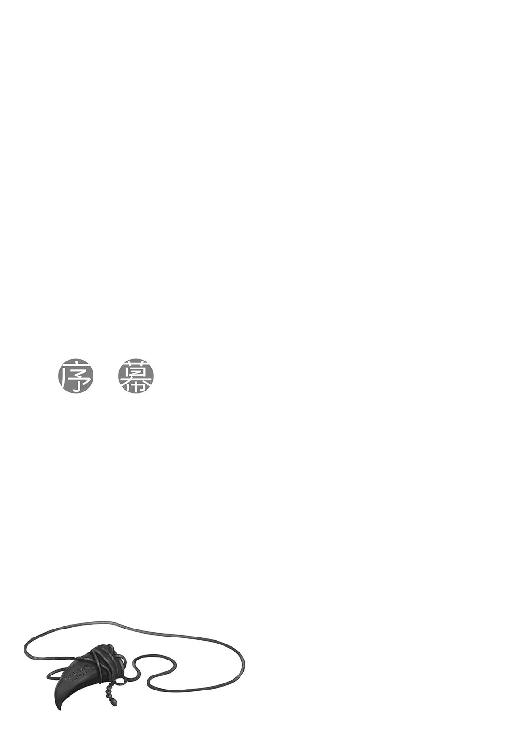

| 狼と香辛料 15 太陽の金貨＜上＞ | |
| 支倉凍砂 | |
| KADOKAWA / アスキー・メディアワークス (2013) | |

本書（電子版）に掲載されているコンテンツ（ソフトウェア／プログラム／データ／情報を含む）の著作権およびその他の権利は、すべて株式会社アスキー・メディアワークスおよび正当な権利を有する第三者に帰属しています。
法律の定めがある場合または権利者の明示的な承諾がある場合を除き、これらのコンテンツを複製・転載、改変・編集、翻案・翻訳、放送・出版、公衆送信（送信可能化を含む）・再配信、販売・頒布、貸与等に使用することはできません。

別れというのは呆気ないものだ。
ロレンスは経験的にそう思っている。
どれだけ懊悩したところで、別れるという行為そのものはほんの一瞬で終わってしまう。刺さった弓矢を引き抜くようなもので、抜くのが怖いからとぐずぐずしているほうが危ない。息を止め、一気にいく。結果は、よく知られるとおり。
とはいうものの、自分も頭でわかっているほど淡白にはなれない。それに、その考えは多分旅生活が当たり前の行商人の理屈であって、どちらかというと見送られる側の人間のものだろう。
市壁の検問を抜け、名残惜しそうにこちらを振り向きながら街道を進むコルたちを見送り、ロレンスはそんなことを思っていた。見送る側に立つというのは滅多にない経験なので、ふとそう思ったのだろう。
あるいは、すぐ側でコルに向かって小さく手を振るホロが、これまでの旅では見せてこなかったような表情をしているからかもしれない。うっすらと笑っているのに、どこか諦めたような色がある。
これはたくさんの人間を見送り、その繰り返しにくたびれた者の顔だと気がついた。直後、ホロは手を振るのをやめて、「んー」と両腕を空に向けて伸ばした。
「さて、酒でも飲むかや」
ホロは誰にともなく言った。ロレンスに嫌味を向ける時などによくそうするが、寂しかったりする時にも同じことをする。
コルを書籍商のル・ロワに預け、エルサと共に行かせたのは、現実的な理由からだった。
そして、現実的な理由があるのなら、賢狼たるもの合理的な判断をしなければならぬ、とばかりにコルを送り出す準備をしていた。
連絡が取りたければどこに手紙を送ればいいかとか、困ったら誰に助けを求めればいいかとか、概ね具体的なところを教えるのはロレンスの役目だったが、コルとやり取りをするのはホロだった。
いつ擦り切れるかわからない草履の替わりに、靴を買ってやる時もホロはつきっきりで選んでやっていた。狼の力を存分に発揮して、職人が呆れるほど熱心に革の質を吟味していた。
昨晩は寝る時も一緒だった。一緒だったというか、ぬいぐるみのようにしっかりと抱いて眠っていた。ホロは子供みたいに体温が高いうえ、ふさふさの尻尾まで持っているので、コルには少し暑かったらしい。翌朝起きた時には寝汗をかいていた。もしくはホロに食べられる夢でも見たのかもしれない。
旅の途中では、ちょっとした理由からしばらく共に旅をして、同じくらい些細な理由で別れることがざらにある。コルもまた、そのうちの一人だった。
ただ、彼はまだ小さなその体の中に多くの大人が笑うような野望を秘めている。
だから、ロレンスたちと一緒にいて故郷の無事を確認したいという気持ちもわかるし、万が一の時には力になりたいというのもわかる。しかし、旅に出た者はきちんと自分の目的に向けて歩むべきだとロレンスは思っている。ロレンスが胸を張って言える、数少ないことの一つだ。
誰もいない行商路で一人旅をしていると、世界には自分しかいないのだと錯覚することがある。けれど、街道が交差するたびに、世の中はとても広く、複雑で、変化に富んでいるのだと実感する。
それゆえに、旅の目的はとても大事なことだ。
この複雑な世の中で道を誤らないための道しるべであり、あるいは、今にも離れてしまいそうな誰かと一緒に居続けるための理由となるのだから。
ロレンスとホロの旅にも、ひとつの目的がある。
旅とはそういうものであり、また、いつか必ず終わるものでもあった。
空気は乾いていて冷たいが、降り注ぐ日差しはとても暖かい。
言い換えれば、毛布に包まってぬくぬくしているには格好の陽気ということだ。
加えて、揺り籠のような荷馬車の揺れがあれば最高の子守唄にもなるだろう。
それでもロレンスが景気の悪いため息をついているのは、毛布を被るわけにものんびり眠るわけにもいかないからだった。
鹿の革で作った手袋はとても暖かいし、羊の毛を編んだ膝掛けは分厚いのにとても軽い。馬も餌がよかったせいか蒼い尻尾を景気よく揺らし、道はとても綺麗で進みやすい。普段ならば文句のつけようもない旅模様だが、生憎と今は一人旅ではない。
現在ロレンスが荷馬車を進める場所からははるか南に下った先にある、パスロエと呼ばれる村からずっと一緒に旅をしてきている相方がいる。何百年と麦の豊作凶作を司り、村人からは神と崇められていたような存在で、その真の姿は人を丸飲みにできるほど巨大な狼だ。
普段は人の姿を取っていて、見た目は齢十余の少女のものであり、器量は良い部類に入る。髪の毛は亜麻色で貴族のように長く、柔らかく、玉に瑕といえば貧相な体つきくらいのもの。
そんなホロが今どこにいるかといえば、荷馬車の荷台で毛布に包まって暢気な寝息を立てている。ぷう、とか、くう、とか聞こえてくるそれは、いびきと寝息の境界線上を行ったり来たりしている。
本人は決していびきなどかかないと言い張っているので、きっと寝息なのだろう。
レノスの町であわやヨイツを前にホロと別れることになりかけたが、ロレンスはなんとか機転を利かせてその可能性を回避した。
鉱山を高効率で採掘できるらしい、今は闇に葬られた技術を記した禁書にまつわる話だった。
鉱山の開発といえば山を削り出し、精錬のために薬石をうんと使い、火を熾すために森を丸ごと伐採する。水は汚れ、山は剝げ、荒地だけが続く悲惨な状況になる。元はヨイツと呼ばれた北の地の奥深い森の中で暮らしていたホロからすれば、そんなことを助長する技術は絶対に世に出られては困るものだった。ましてやそれが、これからロレンスたちが向かう鉱山を専門にするような商会の手に渡ったとしたら、もはや悪夢としか言いようがない。
そのために、レノスの町では書籍商のル・ロワと共に奔走することとなった。
ロレンスたちの目的地は、道の左手を流れるロエフ川の上流に位置する町、レスコになる。そこを牛耳るデバウ商会は有数の大鉱山地帯を長年に亘り独占してきた、当代きっての鉱物商だ。デバウ商会は北の地でなにやら大きな戦を起こすつもりらしく、その目的は北の地の征服とも鉱山のさらなる開発とも言われていた。
行商人の身ながら、ホロと出会ってからこっち、トレニー銀貨にして何千枚、時には何万枚というような馬鹿げた取引に巻き込まれてきた。その恐ろしさは身にしみている。大量の貨幣の前に人の命がどれほど安いかは、身をもって体験してきた。
しかし、それでもなおロレンスたちが荷馬車をレスコに向けているのは、ホロの故郷の仲間の名前を冠した傭兵団が、レスコの町に駐留しているらしかったからだ。
ホロと出会った頃、ホロが時折夜の夢にその姿を見ては泣いていたような仲間の名前。
ヨイツに至るまでの道のりの地図は手に入れているので、先にヨイツに向かえないこともない。それでも、傭兵団はいつ何時霞のようにこの世から消えてしまうかわからないような集団だから、居場所がわかっているのなら先にそちらに会っておこうということになった。
なにより、ホロの故郷の仲間の名を冠した傭兵団が、武力を集めて北の地をどうこうするつもりらしいデバウ商会と関わりを持っていることが、非常に大きな懸念事項になっていた。一体なにをするつもりなのかと考えれば、心配事が一気にあふれ出す。時機を逸すれば、大事なことに関わるのはおろか、その顚末を知ることすら難しいのを、ホロはパスロエの村で過ごした何百年かで学ぶことになった。
ただ、そんなわけでこれまでも散々寄り道をしてきたが、今度のレスコの町の訪問は、寄り道というには少し緊張感がありすぎた。
だからなのか、コルと別れてから本格的にレスコに向けての準備をする中で、ホロは終始口数が少なかったし、宿の部屋に引きこもっていることが多かった。
ロレンスはあれこれ気を遣おうとしたが、どうにもうまくいかなかった。
単純になんと言えばいいのかわからない、ということもある。
ただ、最大の理由は、もう一つ別のところにあった。
「っぷし」
小さくくしゃみが聞こえ、遅れて「むー......」と唸る声が聞こえてくる。
時にはどんな小さな音でも聞き漏らさず、眠りこけていても歴戦の傭兵のようにすぐさま敵に気がつくホロであるが、それ以外は概ね飼いならされた犬に近い。
今も欠伸をしているのか、毛布を抱きしめるようにして体を丸めてぶるぶると震えていた。
二度寝に入る時はそのまま動かなくなるので、寝返りを打ったということは起きる気があるらしい。しばらくもそもそとしてから、予想どおりひょっこりと毛布の中から顔を出した。
「水」
寝起きのむくんだ顔のまま呟くお姫様に、ロレンスは下男よろしく水の入った皮袋を渡してやった。
「しばらく......まだこんな風景かや......」
平地が続くので行程に難しいところはなんらないと聞いた。問題があるとすれば、レスコの町は北に広がる山脈の入り口に位置するので、雪に降られる可能性が高いということ。しかしそれも今年は雪が少ないので、降られてもあまり困ることはないだろう。
「あ、ああ」
ただ、ロレンスの返事がちょっとどもってしまったのは、返事に正確性を期すために云々、というわけでは決してない。御者台のすぐ後ろの縁に肘を置いてのんびり景色を眺めていたホロから、水の入った皮袋を受け取りながらの返事だったからでもない。
振り返った時に、ホロの顔が真意の読めない無表情だったからだ。
実際、ロレンスはここ何日か、ずっとホロの胸中のことがわからないでいた。怒っているのか、怒っていないのか、それすら判別が難しかった。
レノスの町で思いきり食らわされた一撃の記憶が、まだ生々しく残っている。人気のない路地裏でのことで、男として大変遺憾な出来事だったというのは間違いがない。
ただし、自分がホロを大事に思っているのも間違いがない。片時も離れたくないと思っている。そして、ホロもまた同じくらいそうだと言ってくれた。確かに舞い上がっていたところはある。頭に血が上っていたところもある。ただ、あれは本当に嬉しかったし、行商人のゆえか、はっきりした返答が貰えるまで信用できなかった部分が一気に解消した。
だからこそ、ロレンスにはいまいち納得がいかなかった。
互いに好きだとわかったのなら、どうしてあそこで自分は拒絶されたのだろうか？
ホロなら人が来ればわかるだろうし、人の姿同士ならできぬこともあるまい、と言ったのは元々ホロのほうが先だ。喧嘩らしい喧嘩だってしていなかった。
理屈としてはなにも欠けていないはずなのに、なにがいけなかったのか。
そのくせ、ロレンスに一撃を食らわせたあとのホロはひどく上機嫌だった。
その意味がまったく理解できず、不気味ですらあった。それでちょっとホロとの距離感が摑めずにいたら、ホロは仮面を被るようにこちらに表情らしい表情を見せてくれなくなってしまった。
この瞬間だって、ホロが景色を眺めるかたわら、なぜか不機嫌そうな雰囲気をかもし出しているのがなんとなくわかる。
どうすればよいのか、ロレンスにはまったくわからない。
「どれくらいかかるんだったかや」
返事が遅れてしまったのは、今度は間違いなく物思いに耽っていたからだ。
「え？ あ、ああ、大体、六日くらいかな」
途中には村や町を挟まない。人の姿を取っていると、実際に体力もその程度になるらしく、ホロにはやや長い行程になるだろう。
景色も平原が延々と続くだけなので、ため息の代わりに嫌そうに舌を出した気持ちがわからないでもない。
「町は賑やかなのかや」
ホロにとってはなによりも重要なこと。賑やかな町であればそれだけうまい食べ物も酒もある。簡素な村であれば食事は旅の延長と変わらない。
ただし、今回はレスコの町を牛耳るデバウ商会が、かねてより懸念された商会だということもあって、ロレンスにとってもどういう町なのかは事前に調べておきたいことの一つだった。
しかし、いざ町の状況を調べようと思うと、どういうわけか壁に突き当たった。実際にレスコまで行ったことのある人が少なく、町の様子を詳しく聞くことができなかったのだ。
傭兵たちを相手に商いをする雑貨商のフィロンは、どこの傭兵がどこに向かっているかは商売上把握していても、行き先の町の様子までは把握していない。賑やかとは聞いている、と言うのがせいぜいだ。町を歩き、何人かの旅人と、川を上り下りしている船頭たちにはなんとか話を聞けた。繰り返されるのは、やはりとても賑やかで大きな町らしいということ。ではどういうふうに賑やかなのかと聞きたいのだが、生憎と船頭たちは荷物を運ぶのが仕事であって、ロレンスのように町の様子をつぶさに見るのが仕事ではない。レノスの町で商う者たちにいたっては、なにをやっているかよくわからない町だと言っていた。
多分、デバウ商会は日用品の取引をもっぱら北の地域だけで完結させているのだろう。しかも商会が主に扱う貴金属類の商品は、普通の市井の商人に売るような代物でも規模でもない。
自然と取引は疎遠になるだろうし、荷馬車で六日も七日もかかるような場所では、普通の町の人間にとってはこの世の果てくらいに遠い場所になる。
気になることといえば、レスコを訪れたことがあるという者たちが、揃ってレスコを褒めることだ。
強権で冷酷な王ほど、町の者たちは怖れのあまりに誉めそやす。
北の地を攻め崩すために、ホロのような古代の存在の骨まで買おうとしていたデバウ商会が居を構える町なのだから、なにがあってもおかしくはないような気がした。
「賑やかだ、とは聞いているが......北の地の中では、という意味かもしれない」
ただ、ロレンスは慎重に答えておいた。
ホロはその慎重さが気に食わなかったのか、片眉をつり上げる音が聞こえそうなくらい、怪訝な様子で聞き返してきた。
「どういう意味じゃ？」
「レスコまで行くと、もう完全にプロアニアの領域外になる」
言葉をそこでいったん切ったのは、それで全てを理解しろ、ということではなくて、自分の真後ろに置いてある麻の袋に手を伸ばしたからだ。
「これ、見ただろ」
中には貨幣を詰めた小袋が十四個入っている。ホロは宿で暇に飽かせて取り出しては眺め、指で弾いたりして遊んでいた。
「両替商で両替してもらったら、主要な流通貨幣だけでその数になった。北の地はこっちよりももっと権力機構が細切れになってるからな。これ一枚で事足りる、というわけにはいかなくなる」
どこの町でも大抵使えるトレニー銀貨を財布から出して、ホロに見せた。
「貨幣がばらばらだと、見たことのない貨幣は受け取られなかったり、両替に手間がかかったりして商売するのが大変だということだ。そして、商売が大変だということは、商人の数が少ないということだ。それは客の少なさも意味するし、娯楽が少ないことも意味する。貨幣の種類の多さは頭痛の多さ、とよく言われる。その両替分だって、俺の知らない貨幣が何種類もあるからな。正確な相場で両替されたかどうかよくわからない。そんな不安に苛まれるくらいなら、別の場所で商売しようと思うだろう？」
ロレンスの言葉に、ホロは納得するようにうなずいていた。
こういう会話なら、ロレンスも気負わずにできる。
金の話には色がないからで、それゆえに扱いやすい。
「ま、確かにやり取りは単純なほうがよい」
ホロは素っ気なく言って、またもそもそと毛布の下に潜っていった。
なにか含みがあったような気がしないでもないが、へたに藪をつつくと蛇が出る。
ロレンスは再び前を向いて、ホロに何度も思いきり叩かれてきた頰を無意識に撫でた。
レノスの町を出てしばらくは、ホロとの間にやはりしこりのようなものがあった。
それがようやくこれまでどおりという形になったのは、四日目になってからのこと。
もっとも、二人の間で言葉を交わし、問題が解決されたわけではない。
単純に、旅の疲れの中で細かいことがどうでもよくなってくる頃だからだ。
四日目の夕方頃、なにかの拍子にロレンスと目が合って、仏頂面でため息をつかれた。
多分、このまま意地を張るのは面倒なだけだ、と思ったのだろう。少なくともロレンスのほうからどうこう言う可能性は限りなく低い。
賢狼らしい賢明な判断だ。
だから、食事の際にはややこれまでのしこりを引きずる感じではあったものの、久しぶりに肉をもっと寄越せと言ってきた。ロレンスがたっぷり入れてやると、顔は不機嫌ながら耳は嬉しそうにひくひくと動いていた。
ただ、その歩み寄りにはちょっとした思惑もあったらしい。
とりとめのない話をして互いの間にぎこちなさがなくなり始めた頃、時折風の加減で雪がちらつく中、ホロはそっと切り出してきた。
ロレンスは、近寄ってきた野兎を驚かさないように、とばかりに、そっと言葉を返した。
「ミューリ......傭兵団の話？」
「......んむ」
木の匙をがじがじと嚙みながら、ホロの目は焚き火を見つめている。
ホロはきっともっと早くからそのことを聞きたかったに違いないが、ロレンスとの間が妙な感じになっていたので、なかなか言い出せなかったのだろう。
ロレンスは咳払いをして、努めていつもどおりに答えた。
「ほとんど話は集まらなかった」
ロレンスの言葉にホロは返事をせず、軽くうなずくだけ。
「人数は多くても四十人前後だというから、傭兵団としては小規模だ。デリンク商会に聞けば、ヨイツの近郊に布陣する予定らしいということ。団長は傭兵団の歴史の割にはまだえらく若いということ。そして、旗印は天に向かって吼える狼だということ」
「ふむ」
ホロはなにかを考えるように、うなずいた。
ロレンスは粥の中に入っていた干した鶏肉をこりこりと嚙む。
故郷の仲間の名前を、古びた書物や忘れられかけた伝説の中で聞くのとは訳が違う。生きて、見て、触れられる者たちの名前として、残っている。
期待よりも、不安や心配のほうが多いだろう。
もしかしたら、なかなかその話を切り出せなかったのは、ロレンスとの距離感云々よりも、そちらのほうが大きかったのかもしれない。
ロレンスとしてはできれば色々伝えてやりたかったが、知らないことを教えることはできない。かといって、旅の伴侶であるのなら沈黙しがちな食事の席を盛り上げる責任がある。
軟骨みたいに硬くなった鶏肉を嚙み砕いて飲み下すと、ロレンスはこう言った。
「ああ、それと」
「ふむ？」
ホロが椀から顔を上げて、少し期待するようにロレンスを見る。
「団長が優秀で勇猛なのは間違いないらしい」
故郷の仲間の名を冠した者たちなのだから、誰であったってそうあって欲しいと思うだろう。
ただ、あまりにも見え透いた世辞、とはホロでなくともわかること。
ホロは一応感謝するように微笑を浮かべたが、苦笑のほうが勝っている。
だからロレンスは、すぐにこう付け加える。
「顔のほうは、同じくらいか俺のほうがいいらしいがな」
わざとらしく、顎を撫でながら言った。これは実はまったくの噓ではなく、デリンク商会のエリンギンが冗談めかしてそう言ったのだ。
ホロは食事の手を止めて再度ロレンスを見る。なにを言い出すのかこのたわけはといった顔だった。
しかし、その驚きも薄れていくと、あとに残ったのはちょっと嬉しそうな耳と尻尾のゆらめきだ。道化に徹するロレンスを見て、ホロはしばし視線をそらしてなにかを考えていた。
そして、ホロは結局大きなため息と共に耳の付け根をかりかり搔いて、疲れたように笑って言った。
「ふん。ミューリはどちらかというと冴えない風貌じゃったからの。そこは安心してよい」
「それはよかった」
返事をくれたが、まだ言葉に言葉を返してくれただけ。
駄目だっただろうか。
ロレンスがわざとらしい笑みの向こうで不安になっていると、ホロは続けてこう言った。
「大体、わっちが見た目で選ぶとでも思っておるのかや？」
乗ってくれた。
ロレンスは、即座に答える。
「さもありなん」
「それならぬしなど選ばずにコル坊でも選んでいんす」
素っ気ない顔で粥をすすりながら言う。けれども、言葉はそこで打ち切らない。
「さもなくば......ふむ。いつだったかの町でわっちにべた惚れだった小僧がおるじゃろうが」
「......アマーティか......」
「んむ。それ。そっちのほうを選びんす」
あからさまな冗談に乗ってくれたうえでのことだから、どこまで本気かはもちろんわからない。
けれど、ある程度は本気なのではないかと思う。ロレンスは自分の記憶を振り返っても、あまり容姿で褒められたことがない。
それでも、駆け出しで金もなく、ほとんどぼろを身にまとって商いをしていた時に一番嬉しかったことといえば、商売相手がこちらの見た目の汚さにもかかわらず、きちんと中身を信用したうえで仕事を回してくれることだった。期待に応え、信頼に報いようと一番奮起したのも、そんな相手にだった。
だから、ロレンスはホロの言葉が嬉しかった。
そして、商いの基本は、自分がされて嬉しいことを相手にもすることだ。
「俺だって、お前を顔で選んでな......ど......？」
ホロはロレンスを見て、にっこりと笑っていた。
その有無の言わせなさに、ロレンスの口が閉じられる。
「わっちゃあ可愛いとしか言われたことがありんせん」
確かに、それだけを見れば天使のような笑顔だ。
しかし、ロレンスの言いたいことはそういうことではない。ホロがそのことに気がつかないはずがないので、わかっていて言っているのだろう。
ロレンスはずるいものを感じつつも、久しぶりにホロらしいところを見せてくれたのが嬉しくて、「そうでしょうとも」と言っておいた。
ホロは呆れ気味だったが、それでも楽しげに微笑んで、「くふ」と息を漏らしていた。
「じゃが、本当にレスコとやらで会えるのかや」
ホロがぽつりと言ったのは、日の出ているうちに汲んできた川の水で器を洗っている頃のこと。焚き火のせいもあって今は目を凝らしても川の流れは見えないが、確かに今この瞬間も川は水をたたえて流れている。
人の中にはそんな川がいくつもある。
賢い者なら、足をとられる前に橋をかけておく。
「そこで出会えなかったら、探しに行く楽しみが増える」
ロレンスは行商路に戻らなければならないために、残された時間はほとんどない。レスコで出会えず、もしもヨイツに行く道の途中で出会えなければ、改めて彼らを探す旅をすることなどとてもできない。
ホロもそんなことはわかっている。それでも、ロレンスの言葉はホロの耳をくすぐったらしい。首をすくめたホロは、棒で焚き火の中から焼いた石を穿り出しながら、笑って言った。
「んむ。楽しみは多いほうがよい」
「まあ、心配せずとも会えるだろうけどな」
賢狼らしくいつも物分かりがよい。そんなところに被せるように言ってやった。
ホロはきょとんとしてから、してやられたのを悔しがるように笑う。
懐炉代わりの焼いた石も、大きいものばかりを選り分けていく。
「せいぜいわっちが怒ってどこかに行った時も、探しに行くのが楽しみだと嘯くことじゃ」
灰を払い、麻布を三重に重ね隙間に綿を詰めた袋の中に焼いた石を入れ、ぎゅっと口を縛る。
それを見て、自分の首を絞められたように、ロレンスは笑顔が引きつってしまう。
けれど、言われたままにしておくことはできない。
「きっと楽しむだろうさ。なにせお前は腹を空かして泣いているだろうからな」
ぴくりと耳が反応したが、ホロもそこで怒るほど馬鹿ではない。
くふふ、あはは、と意地を張って笑い合っているうちに、夜は更けていく。
荷馬車の荷台では、焼いた石を詰めた袋を腹に抱え、互いに顔を背け合いながら寝た。
ただし、背中はくっつけ合っていたので、互いの息遣いまでわかっていた。
相手の呼吸か自分の呼吸かわからなくなった頃、多分眠りについたのだと思う。
デバウ商会のあるレスコまであと三日足らず。ヨイツまで含めるとどれくらいだろうか。
少なくともわかることは、そのくらいの夜が一番気楽で、恐れることなく憎まれ口を叩き合える夜だということだった。
レスコが近づいてきたな、というのは、平原を白く染めている雪に残る足跡の数に頼らずともわかった。もっとはっきりと道行く旅人の数が突然増えたのだ。
多くが粗雑な毛皮に身を包み、垢なのか雪焼けなのかわからないくらい顔を真っ黒にした者たちだった。人相風体からして、町の中で華やかな商いをしている者たちではなくて、過酷な場所に最低限命をつなぐための物資を運んだりしている者たちだろう。
もちろん、いかにも儲けていそうな格好で、荷物を満載にして隊列を組んでいる商人たちもいた。しかし、彼らもまた荷馬車ではなくて毛の硬そうな騾馬に山ほど荷物をくくりつけた、険しい道を行くのに慣れているような者たちだった。
レスコには傭兵団がいくつも呼び集められ、北の地の諸侯まで顔を揃えているらしい。なので、ロレンスはてっきりそこに続く道はもっと物々しい雰囲気かと思っていた。
ところが、そういう感じではなかった。道も最近作られた感じではあったが、どれもしっかりしていて、進軍のための急ごしらえというふうでもない。いざとなったらホロの耳と勘を頼りにしようと覚悟を決めていたのに、街道には不穏な空気などかけらもなかった。
なにかに満ちているとすれば、それは秘められた活気だった。
これから儲けに行くのだぞという、商いで賑わう町に続く道そのものの雰囲気で、ロレンスは商人としてそれに飲まれかけていた。
これから不穏な何事かが起こる北の田舎町。
レスコは、そういう場所だと思っていたのだが。
「なにやら、皆気合が入っておるの」
ミューリに会えるかもしれないという期待からか、ここ数日はなかなか眠れずにもぞもぞとしていることのあったホロが、ちょっと声を上ずらせながらそう言った。
「しかも、予想していたのと違う方向にだ」
デバウ商会は大鉱山地帯を掌握する経済力を背景に、北の地を侵略するのだとばかり思っていた。戦は商人を遠ざけるから、そこにやってくるのは頭が少しいかれた、一発逆転しか目にない商人ばかりのはずだった。
「まあ、行けばわかるだろう」
ここまで来たら、そう言うしかない。手綱を握り、心持ちいつもより馬を速く走らせた。
隣のホロは、落ち着かない様子でうなずいた。
自分はともかく、ホロのほうは何百年ぶりかの仲間との対面の可能性に緊張している。こういう時こそ自分がしっかりしなければならない。
ロレンスはそう思って、どうしたらいいかと考えた。どんな言葉をかけるか、気を紛らわせる小話でもするか。
ただ、そのどれもがあからさますぎるうえに、うまいことを言えるとも思えなかった。
商いならともかく、自分はそのこと以外では鈍感で口べたな田舎者だと自覚している。
だから、レノスの一件が脳裏をよぎりつつも、ロレンスは自分にできることをした。
深呼吸をして、隣のホロの手を手袋越しに摑んだ。心配するな、とばかりに強めに摑んでいた。ホロはもちろんびっくりしたようにこちらを見て、それからまじまじとロレンスに摑まれた自分の手を見た。対するロレンスは、殴られるのを覚悟だったのでいまかいまかと思いながら必死に前を向いていた。
しかし、ホロは動かない。そんなふうにされると、思い切ったこちらの身としてはとても苦しい時間が続くことになる。
ただ、再びロレンスの横顔を見つめたとき、ホロは柔らかく笑っていた。ちょっと呆れてすらいた。
もしかしたらそれは、ロレンスに気を遣われてしまうくらい緊張していた自分自身に向けたものかもしれない。なにせ、ホロは見た目ほどか弱い女の子ではないのだから。
それでも、ホロはロレンスの手を握り返してきてくれた。
大鉱山地帯を掌握するデバウ商会のお膝元。
ケルーベに置かれたローエン商業組合商館の幹部たるキーマンをして、手を出すなと言わしめる大商会。
レスコの町が、道の向こうに見えてきた。
町の中。それも道の真ん中でロレンスは呆然としていた。
それは言いすぎにしても、つい何度も辺りを見回してしまったのは事実だ。
なにせ、まず市壁がない。まだかまだかと思っていたら、いつの間にか町の中だった。
しかも、鉱物商なのだから鉱山の近くにあるに違いない、という思い込みまで外れた。山まではあと一息という距離なのは間違いないけれど、レスコの町は鉱山特有の騒々しさや息苦しさとは無縁の場所だった。
そして、町は決して小さくなかった。むしろ、大きいほうだろう。
立派な建物も多いし、石畳でこそないものの、地面には丸太を半分に切ったものがびっしりと嵌め込まれている。そのために、人々や荷馬車が行き交うたびに、独特のがこがこという音がする。こんなふうに道を維持するには、数年おきくらいに丸ごと木を張りなおすような手間がかかるはずだ。市壁がないのにどうやってその費用を徴収しているのだろうか。それとも、道沿いの商店などが責任を負っているのだろうか。それにしては、一歩奥に入った人通りの少ない道まで綺麗なのだ。
加えて人々の顔は活気に満ちあふれ、これから戦が起こるなどとは微塵も思っていないようだった。さもなければ、すでに戦に勝ったかのどちらかだ。
「ぬしよ、本当にここであっておるのかや？」
ホロがそんなことを聞いてきた気持ちもよくわかる。
これまで集めた話を総合すれば、ここは北の地の欲深い者たちが欲深い密議を重ね、これからこの地を騒乱と恐怖のどん底に陥れようとしているような罪深い鉱山街のはずだった。
それがどうだろうか。
軒先を開放している商店はどこも荷物や客があふれんばかりで、建物沿いでは楽士や吟遊詩人、道化師などが各々の芸を披露し、たくさんの人がそれらを取り囲んでいた。
物騒な連中もいることにはいる。しかし、彼らは一様に無粋な長槍など持っておらず、昼間から旅人向けに酒を出している酒場で札遊びなどをしていた。聖職者たちもうろうろしているが、どれも身なりの良い者ばかりで、おおよそこれから過酷な宣教の旅に打って出ようという雰囲気ではない。
どういうことなのか。
ロレンスは人通りの少ない場所にまで来て、一度荷馬車を停めた。
「なんか楽しそうじゃな」
ホロはぽつりと言う。
「気負い込んでやってきたわっちらが間抜けみたいじゃ」
認めたくないが、一理ある。
ただ、それは表面上のこと、という可能性だってある。
「どうするんじゃ？」
ホロにそう聞かれ、ロレンスは気を取り直す。
「どうするもこうするもない。来たからには、目的を果たす。そうだろう？」
殊更力んで言ったせいか、ホロは少し驚いたように目を見開いてから、「ふふ」と微笑んでうなずいた。
ロレンスたちはデリンク商会と傭兵専門に商売をするフィロンからの書状を手に、あらかじめ教えられていた宿に向かった。ミューリ傭兵団と長い取引があるデリンク商会によれば、ミューリ傭兵団は団ごとレスコの町の宿屋に逗留しているとのことだった。規模の小さい傭兵団はいつ何時領主やその他の武力集団に襲われるかわからないため、取引相手には逐一居場所を知らせるのだという。
それは、もしも取引相手が彼らとまだ商売を続けたいと思ってくれれば、政治的に、あるいは金銭的に助けに来てくれるかもしれない、ということらしい。
あとは、デリンク商会のように奴隷を扱う組織であれば、自然と権力機構からの情報も入りやすくなる。次の仕事があれば紹介してもらおうという営業の意味もあるのだろう。飲んで買って打って、好き放題生きているように見える傭兵団も、統率する側は商人とあまり変わらないようだった。
町は大きくて賑やかだが、市壁がないせいかどの建物もゆったりとした広さを持っている。
ロレンスたちが道行く者たちに聞きながらたどり着いたその宿も、傭兵団の荷物を運ぶ馬だの荷車だのをすっぽりと納めてなお余りある厩を有していた。もちろんそれが単なる土地あまりではないというのは、入り口の扉に小さいながらガラスが嵌まっていることで察せられた。
誘導役の小僧はロレンスがこの宿に用のある者と見るや、特になにも聞かず馬の手綱を預かろうとする。人の出入りが多いのか、それともこのくらいの気遣いが当たり前なのか。
ロレンスは荷馬車を預けるか数瞬迷ったが、ここで臆していてはただでさえ緊張しているホロを余計に不安がらせることになる。
たっぷり余裕を見せつけるように、御者台から降りて駄賃を弾んでおいた。
「大切にお預かりします。旦那様」
コルよりもちょっと年上といった程度だが、発音も笑顔も馬あしらいも見事だった。
ただ、髪の色と目の色は、この辺りの子供ではないように見えた。もっと南のほうのどこかから来たような感じがする。
ロレンスは行商人の癖で、初めて訪れた町では色々なことが気になってしまう。ましてや、当初の予想とはまったく異なった雰囲気となればなおさらあれこれ調べたくなってくる。
しかし、今もっとも優先すべきなのは、ミューリ傭兵団への訪問だ。
ホロの故郷の仲間の名を冠しているとはいえ、偶然の一致という可能性だって捨てきれない。
団の創始者が単純にミューリとやらの話などを小耳に挟み、ちょうどよいと思って名前につけたかもしれないのだ。
傭兵はただでさえ普通の商人からすれば天敵以外の何物でもない。
傭兵相手専門の雑貨商であるフィロンの時よりも緊張感では上。
ゆっくり大きく息を吸い、ゆっくりと吐く。
ホロはずっと右手で自分の胸のあたりを摑んでいる。
「行けるか？」
ロレンスが聞くと、ホロはぎこちなくこちらを見てから、「ぬしこそ」と言ってくる。
憎まれ口を叩ければ、大丈夫。
ロレンスは書状があることを服の上から確認して、宿の扉をゆっくりと開いた。
宿の扉を開けると、牛の首にくくりつけるのと同じ鐘がかろんと鳴る。一階は酒場になっていて、いくつもの丸テーブルが置かれていた。そのうちの三つほどに人が座っている。まくった腕や、顔の傷を見るまでもなく、雰囲気だけで即座に傭兵とわかるような者たちばかり。
ただ、全員がじろりとこちらを見たわけではないし、注意を向けた者もほとんどはすぐに興味をなくし、テーブルの上の使い込まれた札や雑談に戻っていった。
椅子から立ち上がったのは、商人風の男だった。
「どんな御用ですか？」
見た目はロレンスと同じくらいの体格の普通の青年なのに、手は金槌で叩き続けた革のように分厚くてごつい。いかにも戦場で馬と一緒になって荷物を引く、傭兵たちの荷物番たる輜重隊に相応しい。
青い目が油断なくロレンスとホロを交互に見ているのは、自分の商いを邪魔しに来た人間かもしれない、と思っているのだろう。
「こちらに、ミューリ傭兵団の方々が投宿なさっているとお聞きしまして」
団の名前に、その場にいた者たちの耳が一斉に反応したような気がした。
雑談や身じろぎからくるちょっとした小さなざわめきが、一瞬途切れたように思えた。
ホロも緊張しているのか、ずっとうつむいている。
「いかにもそのとおりですが......売り込みを？」
そんな言葉は、ホロを目で示してから。
確かに、女連れで傭兵団が投宿しているとわかっている場所に来れば、売り込む商品は限られる。
「いえ......実は、レノスの町のデリンク商会にてこちらのお話を伺ったのですが」
ロレンスは言いながら、服の内側から書状を取り出した。そして赤い臘の印を見せたら、すぐにしまう。地位のある者に用がある、という仕草だ。
商人風の青年は軽く眉を上げて唇の片方をつり上げた。デリンク商会の名を出した瞬間から、その場に居合わせた者たち全員の注意を惹いている。
「団長は？」
青年がロレンスを見ながら、軽く後ろを振り向くように尋ねる。
参謀なら二階にいたはずだ、と返ってくる。
青年の青い目は、ロレンスからほんの少しも外れることがない。
「生憎と団長は不在で、参謀なら」
どんな組織であっても、陳情するなら一つでも梯子を上った地位の者へ、というのは鉄則だ。
団長へのお目通りが目的ならなおのこと。団長は誰とでも会う気があっても、部下がそれを許すかどうかはわからない。一瞬迷ったが、こだわるとミューリ傭兵団がホロの故郷と関係なかった時、ちょっとややこしいことになりかねない。
ロレンスがうなずくと、「では」と青年が身を翻そうとした。
彼らがふと顔を上げたのは、その瞬間のことだった。
「あ」
と、実際に言ったかどうかは定かではないが、ロレンスの向こう側を見て青年の口がそんな形になった。そして、ロレンスが後ろを振り向く前に、椅子に座っていた者全員が立ち上がった。遅れて聞こえてきた、かろんという音。青年はその場で背筋を伸ばし、テーブルについていた面々も同様だった。
ロレンスが振り向くと、扉を開けて入ってきたのは、どちらかといえば小柄な、髪の短い鋭い目つきをした青年と少年の中間のような不思議な雰囲気を持った男だった。
「ん、なんだ？」
声はかすれていて、耳にすると喉の痛さを思い出して咳払いをしたくなるようなものだ。
服装は実用を重視しながらも、ふんだんに使われた毛皮のお陰で高位の人間だとすぐにわかる。極めつけは、本物の貴族か見栄っぱりの傭兵かしかつけない、背中で揺れる地面まで届きそうな大きな外套だった。
「おや、売り込みか？ だが、尼さんはちょっとなあ」
動物のような、険しいながらも愛嬌のある笑みをにっと浮かべ、ホロの顎にひょいと手を伸ばしてその顔を上に向けさせる。そういうことをしなれている人間の手つきで、ロレンスは一瞬のうちに心の底まで商人に切り替わる。
「ミューリ傭兵団の団長様とお見受けしますが」
身を折り、一点の曇りもない笑顔でそう言った。
凄み、剣を抜くのが傭兵の戦いの構えなら、笑顔で服の内側から書状を抜き取るのが、商人の戦いの構えだ。
「ん、いかにもそうだが......なに、デリンクの？」
ホロの顎に手を当てたまま、書状の印を見た瞬間に用向きが違うのを理解したらしい。
それから、ちょっと慌ててホロの顎から手を離した姿には、まだ無邪気な少年の匂いがあった。
「なんだ、人が悪い。てっきり売り込みなのかと思ったよ。いや、失礼。確かに、商売女にしてはあまりにも美しすぎる」
粗野な雰囲気なのに、笑顔は本当に板についている。
ホロに向かって非礼を詫びるその笑顔は、人の欲望の中で戦い抜いてきた者特有の落ち着きがある。
ミューリ傭兵団の長は、ホロの表情が変化しないのにちょっと戸惑うような間をあけたが、戦の前やあとの政治的な駆け引きではもっと気まずい場面がいくらでもあるのだろう。笑顔をかけらも崩さず、ロレンスに向きなおった。
「それで？ 私がいかにもミューリ傭兵団の、ルワード・ミューリだ」
名乗ると同時にばさりと外套を払い、腰に片手を当てるところがいかにも傭兵らしい。
胸を張るのも様になっている。
ただ、ロレンスの目にはルワード・ミューリは見た目どおりの年齢に見えていた。
ホロだって確かに見た目どおりの年齢だと思ってしまいそうなところが多々あるが、それにしても人間らしく見えた。
そして、その印象はルワードがホロを前にしても少しも態度を変えなかったからだと気がついた直後、ぽたり、という音がした。ルワードも音に気がついたらしく、雨漏りかと掌を広げて天井を見上げている。
ロレンスは視線をホロに向けた。
無表情のままに涙を流すホロが口を開いたのは、その瞬間だった。
「爪......」
怪訝そうな顔をしていた周りの人間をよそにホロが呟いたのは、そんな短い一言だけ。
ロレンスは視線をルワードの胸元に向けた。
そこにぶら下がるのは、深い黒をたたえた牛の角のようなものだった。
ロレンスはそれを傭兵たちにありがちな勇気や戦勝祈願のためのなにかだと思っていたのだが、ホロの視線はそれに釘付けだった。
なによりホロの言葉が重要な意味を持つのだと知ったのは、その言葉でルワード・ミューリの顔色が変わったからだ。
「これが爪だとわかるのか？」
短い一言に、ホロがこくりとうなずいた。
瞬間、ぱたた、とさらに涙が落ちてしまう。
歳相応の少女のような泣き方だ。それは決して嬉しくて泣いているのではない。
ロレンスはルワードとホロとの間に割って入ってその肩を抱く。
そして、振り向いてルワードに言い訳をしようとしたところを、封じ込められた。
「奥に」
短い一言を残して、傭兵団団長はなにがなんだかわからず見守っていた商人風の青年を押しのけるようにして歩を進めていった。
誰もなにも口を挟まない。
ロレンスもなかなか動けずにいたが、奥の階段に足をかけたルワードは、ようやく振り向いてこう言った。
「聞きたいことがある」
いい予感はしない。
しかし、断れるはずがなかった。
貴族の家がそうであるように、何代も続く商会や組織では、頂上の人間が最年長であることは滅多にない。大抵、側には主が生まれる前からその商会や組織に仕えていた人間がいるものだ。
ミューリ傭兵団もその例に漏れず、参謀と呼ばれた男は綺麗な銀色で針金のような髪の毛を刈り込み、もみ上げから顎まで途切れることのない立派な髭を生やした大男だった。
「私もですか」
ルワードが部屋に戻ったら、あれこれ報告することがあったのだろう。部屋の前で小僧に何事かを言いつけていた参謀は、人払いを命じられ驚いていた。
「そうだ。この階に人を入れるな。この部屋の上と下の階の者も払え」
有無を言わせぬ口調はいささか不遜にも思えるが、その分容赦がない。命令への迷いが部隊の全滅につながることが多々あるのだと聞いたことがある。
参謀役の大男も不満げな表情をありありと見せていたが、表情とは裏腹に背筋を伸ばして踵を打つと、「仰せのままに」と言って部屋の外に出て、小僧に大声で命令を出していた。
部屋は長逗留を示すようにあれこれのものであふれていた。ほとんどが旅支度のものだが、各地の権力者と渡り合うためのものだろう、たくさんの書類の束や羊皮紙の束があった。ちょっと意外だと思ったのは、騎士物語の本がいくつかあったこと。本物の剣と盾の世界に生きる者はそんなものなど読まないと思っていたのだが、ルワードはロレンスの視線に気がつくと、椅子に座って笑いながら言った。
「酒を飲みながら指揮をするわけにはいかないからな。恐怖を払って勇気を奮い起こすには、書物の英雄譚がちょうどいい」
そこにいるのは、一つの群れを率いる長だった。
「さて、そろそろいいか」
部下の仕事の速さを信じるのも良き主の資質らしい。
ルワードは座ったばかりの椅子から忙しなく立ち上がり、半開きだった木窓を開けて外を見る。まさか窓の外で聞き耳を立てている者がいないかどうか探ったわけではないだろうが、少し神経質になっている感じはあった。
寒くはあったが、木窓を閉じようとはしない。
全てを明るみに出しておかなければ、緊張感が張り詰めすぎるとでもいうかのように。
ロレンスはホロの手を握る。
しかし、それはホロを奮い立たせるというよりも、自分がこの緊張感に飲まれないようにするためだった。
「これが、どうして爪だとわかった？」
ルワードは首飾りにしていた黒い牛の角のようなものを手にして、そう切り出した。
裏、表、と動かすと、それが半分に割られたものであることがわかった。
装飾品とするには、若干下品と思えるほどの大きさがある。ロレンスが手の指をまっすぐに伸ばした時に、中指の先から掌の真ん中くらいまではある。高位の人間は土臭い装飾品を好まない。そして、装飾品は小さいものであるほど高級感が出る。
「匂い」
ホロは短く答える。
ルワードはじっとホロを見て、うなずく。
「見たところ裕福な商人には見えないが、ああ、失礼。ただ、デリンク商会は我々以上に損得勘定に厳しいからな。しかも、有名なフィロン雑貨商の紹介状まで。君たちは何者だ？」
当然の質問だ。
ロレンスは深呼吸をすることもなく、事前に頭の中に組み上げておいた話をしようとした。
それを遮ったのは、ホロの短い一言だ。
「ぬしはそれをどこで手に入れたのじゃ？」
ロレンスは、ぱっとホロから手を離してしまった。
ほとんど無意識のことで、離してしまってから、そのことに気がついた。
口調は静かで、冷たくすらある。顔はうつむきがちで、今まさに売られてきて、自分の境遇に打ちひしがれている哀れな少女のようにも見える。
しかし、そこにあったのは怒りだ。
返答次第によっては絶対に容赦しない。
そんな覚悟を秘めた怒りに、ルワードはもちろん、怯むことはなかった。
「これの出所を聞くのか？」
傭兵団の長は本物の貴族であることが多い。ごろつきどもをまとめるにはそれなりの権威と金が要る。盗賊から傭兵になることもあるが、ほとんどは金で人を雇って徒党を組んでいるうちに傭兵になることが多いと聞く。
つまり、ミューリは二重に気高い可能性がある。
一つは血筋で。もう一つは、ごろつきどもを束ねる首領として。
少女相手とはいえ、あからさまな怒りを向けられるには気位が高すぎる可能性がある。
ロレンスは口を挟もうかと思案した。ホロにはそんな人の世界の機微などわからないだろうし、わかるとしても今は気にしていられるような状況ではないだろう。
「目的はなんだ？」
しかし、ルワードは怒り出さなかった。
その代わり、油断のない目をホロに向けていた。
ロレンスを見るのではなく、見た目には修道女と変わらない、華奢な姿のホロに向けていた。
腰が、心なしか沈んだように見える。
「答えよ」
一瞬、ロレンスはその発言の主を間違えた。
そう言ったのはホロであり、直後、ルワードは電光石火の勢いで剣を抜いていた。
「それはこちらの台詞だ」
剣はホロの首筋にある。刃風が遅れてくるほどの剣捌きだった。
しかし、ホロの細い首は今もつながっている。理由は、ルワードがそこまで短気ではなかったからだろうか。
ロレンスはそう思ったのだが、事実はそうではないと告げていた。
「答えよ」
ホロの発言が再び続く。
ルワードの剣先が、明確に震えた。
圧倒されているのは、ルワードのほうだ。
階下では涙を見せていた娘が、今は剣に怯まず詰問する。
それだけでも異様なことは間違いない。
加えて、その首から提げられているものは、ルワードにとっても、単なる飾りではなかったらしい。
ホロを見ながら残る手ですがりつくように爪を握る。
ついにルワードが視線を自分の胸元に向けたのは、獣同士が睨み合い、視線をそらすようなものだったに違いない。
「誤解があるようだ。私はこれを奪ったわけではない」
ルワードは降参するかのように、剣を引き、同時に爪にくくりつけられた紐を指にかけ、軽く持ち上げた。
それは傭兵団の長たる者が、一少女に対してするようなことではない。
それはまるで、ホロのフードの内側の姿を知っているような、そんな対応の仕方だった。
「私はこれを、父から受け継いだのだ」
ルワードは言葉を続ける。
そこからしばらく設けた間は、ホロがなにか言葉を挟むならば待つ、というものに見えた。
「私の父は、さらにその父から受け継いだ」
ホロは顔を上げて、ルワードを見た。
「ミューリという名は？」
ルワードの鼻孔が軽く開いたような気がした。
それは怒りとも驚きとも取れる。
ロレンスは反射的に常識的な言葉を差し挟もうとした。
しかし、今この場で部外者なのは、ロレンスのほうなのだ。
「大丈夫。私は怒ってはいない」
ロレンスが動こうとした気配を、ルワードは視界の端だけで捉えていたらしい。そんな言葉を、開いた掌をロレンスに向けながら言った。
当然、視線はホロに向けたまま。
ルワードは、じっとホロを見つめている。記憶の中のなにかを探っているようにも見えた。
そして、怒れる狼をなだめるように、慎重に、敬意を払って、こう言った。
「貴女のお名前を伺っても？」
質問に質問で返す。
いつものホロならば怒りそうなものだったが、この場ではそれは別のことを意味していた。
ルワードは、ホロの質問に言外で答えていた。
ホロに敬意を表する。その一事でもって。
「ホロ」
短く言ったその言葉に、ルワードは思いきり眉を八の字にした。ロレンスがぎょっとしたのは、続いて歯を剝くや、自らの額を叩くように摑んだからだ。
「そんなことが本当にありえるのか！」
部屋中の書類の端が震えるような声量だった。大平原で傭兵たちを鼓舞したり指揮したりするのに相応しいもので、ロレンスの肝を直接震わせた。
耳がよいせいで大きな音は苦手なはずのホロは、それでも微動だにしなかった。
そこには石のような落ち着きがあった。
ロレンスは、それでようやく気がついた。
ルワード・ミューリは本物だ。
しかし、そこに冠された名前は、遺物だったのだ。
「パロ、キリス、ユエ、インティ、シャリエミン」
ルワードは立て続けに固有名詞を並べ立てる。ロレンスが聞き覚えのあるものもあった。
ホロの表情が歪んでいく。唇がわなわなと震え出す。
ルワードの顔までもが、泣き顔のように歪んでいく。信じられない、とその口が声なく言葉を紡ぐ。
「......父から、何度も聞かされました」
傭兵団の長がゆっくりと開いた口から漏れ出たのは、そんな言葉だった。
「祖父からはそれ以上に聞かされました」
ルワードはホロに歩み寄り、その小さな手を取った。
ホロはルワードを見返したまま、フードを取った。
ロレンスはレノスの町で、ミューリ傭兵団の名前を聞いた時に、はっきりと嫉妬した。
ホロと同じ時を生き、同じ場所で暮らし、今もなお強烈に想われているミューリの存在を、疎ましくさえ思った。
しかし、嫉妬がなにかよいことを生み出すということは、ほとんどない。
それが生み出すのは後悔くらいのものであり、今この瞬間もそれは例外ではなかった。
ルワードはホロの耳に一瞬及び腰になりながらも、傭兵に相応しく腹に力を込めて堪えた。ホロの手を握り、しっかりと両手で包み込んだあと、自分の首に提げていた真っ黒い爪を外し、手に取った。
「我が傭兵団創設の際に、当時の団長が受け取ったものです」
ホロがその爪を受け取った。
その授受はまるで、何十年か、さもなければ何百年か前に託された、糸のように細い細い可能性に託された、伝言の成就のように見えた。そして、実際にそうだったのかもしれない。
ホロが両手で受け取ったままじっと見下ろしている爪を、ルワードはホロの掌の上でひっくり返した。そこには文字が彫られていた。
ロレンスには、古い文字だ、ということしかわからない。
しかし、ホロにはわかったらしい。涙が一瞬のうちに、こぼれ落ちた。
「久しぶり、じゃと」
泣きながら言って、肩を震わせて笑った。
笑い、むせて、涙を拭って、また泣いた。
ルワードはそんなホロの両肩にそっと手を当てて、初めてロレンスのことを見た。
彼は傭兵団の良き長であり、また良き紳士でもあったらしい。
誰が誰の下で泣くべきか、きちんと心得ていた。
ロレンスはホロを抱きとめて、ホロはロレンスの腕の中でもっと大きく泣いた。
「我らが守護の狼よ、ついにあなたとの約束は果たされました」
ルワードが小さく言った。
世の中にいくつもの物語の糸があるとすれば、ミューリ傭兵団にまつわるものの一つが、今ここで終わりを迎えたのだ。
ルワードは借り上げている宿の中でも上等の部屋を融通してくれた。
代わりに参謀が部屋を空けることになったのだが、団長からのいつにない厳命に目をしばたかせ、なにを思うよりもまず体が勝手に反応しているようだった。
ロレンスが荷物を運ぶのを手伝おうとしても、私の生死に関わると言ってさせてくれなかった。
ルワードはどうやら立派な団長らしい。
それは、ミューリの名を冠するにきっと相応しいことだろう。
ロレンスには、そう言ってホロを慰めることしかできなかった。
「しばらく一人にしてくりゃれ」
鼻をすすり上げながら、ホロは短く言った。これまでの旅ならば、そんなことを言われたらまたぞろ騒ぎのきっかけか、ロレンスが慌てふためく要因になった。
けれども、今となっては慌てることなど決してない。
なにせ、今しがたまで散々しがみついて泣いていたのだ。一番辛い瞬間を頼ってくれたのだから、その波が過ぎたのなら、必要以上に側にいるべきではない。ホロは一人で考え行動できるし、思い出の整理となればなおさらだろう。
ロレンスはホロの目尻の湿り気を親指の腹で拭い、慰めの言葉の代わりに、水差しの場所を教えておく。
「酒は飲むなよ」
別れの夜に酒を飲んで、楽しい結果になるわけがないからだ。
ホロは涙で赤くなった顔を不器用に笑みの形にして、「たわけ」と言った。
「宿から出る時には一応報せに来る」
レノスのことを思い出してややためらいがあったが、ホロの体を軽く抱きしめてから立ち上がった。ホロはロレンスが部屋から出るまでずっとベッドの隅に腰掛けていて、ロレンスのことを見つめていた。
扉を閉じてからロレンスがため息をついたのは、そんなホロが心配だからではない。
ミューリの残した悲しくも気障な伝言はここに成就したが、今を生きる者たちの物語はまだ続いている真っ最中だからだ。
「よろしいかな」
部屋から少し歩いた階段の踊り場にいたルワードが、壁から背を離しながら言った。
ロレンスがうなずくと、「私の部屋にしよう」と言って、階段を下りていく。
「どうぞ」
殺したり殺されたり、捕虜を売ったり買ったりしている傭兵団の長が、ロレンスのために扉を開けてくれる。それは本来雑用のために部屋の側で待機している小僧がやるような仕事だ。
だから、小僧は仕事を奪われびっくりして、団長がそうしたことに二度びっくりしているようだった。
「緊張されなくても大丈夫」
小僧になにかを耳打ちしてから、ルワードは部屋に入ってくる。
そして、ロレンスの側を通り過ぎざま、掌を見せてきた。
「私も、まだ震えているからね」
戦の先頭に立つ者が、掌の震えを他人に見られるのは絶対に避けなければならないことだろう。それをわざわざ見せてくれるということは、ルワードは、可能な限りの敬意をロレンスたちに払ってくれている。
正確に言えば、ホロと、そのホロを連れてきたロレンスに。
「名前をまだ聞いていなかった」
ルワードはロレンスに椅子を勧め、自分も座りながら、そう言った。
「ロレンスです。クラフト・ロレンス」
「クラフト・ロレンス。いい名だ。ポーラン地方の出かな」
如才ない喋り方は、見た目よりもはるかに年上を思わせる。気を抜いたら、あっという間に飲み込まれそうだ。
「いえ、ローエンです」
ルワードはそれでうなずく。さすがあちこちを転戦している傭兵らしく、地名については行商人よりも詳しいらしい。
「ローエンで商人といえば......もしかして、この町にいるのは命令違反ではないのかな」
ローエン商業組合の名が知られている。しかも、組合にとってレスコの町がどういう場所かまで把握している。それはローエン商業組合が一廉の知られた集団であることを示す。そのことが嬉しくもあり、また恐ろしくもある。
「ええ、ですから、私はここではどこの誰でもありません」
どうなろうとも商会は助けてくれない。
ロレンスが言うと、ルワードはほっと安堵のため息のようなものをついたような気がした。
その意味を摑みかねていると、扉がノックされ、先ほどの小僧が入ってきた。
手にしている盆には、ぶどう酒の入った甕と無骨な土製の器が載せられていた。
「まあ、一杯。毒が怖ければ、先に私が両方の器で飲むが」
「いえ、大丈夫です」
笑えない冗談だが、それでもロレンスがきちんと笑えたのは、器を受け取るために近寄った時、ルワードの緊張が窺い知れたから。
ルワードも、少し照れを隠すように、笑っていた。
「数奇な運命の邂逅に」
ルワードは言葉と共に器を掲げ、口をつけた。
ロレンスも倣って口をつけたが、飛びきり上等のぶどう酒だった。器の中身を見て言葉をなくしていると、もてなす側のルワードは満足そうにしていた。
「しかし、この場には父や祖父を立ち会わせたかった」
しばらく言葉を探すようにテーブルを見つめていたが、顔を上げたルワードが口にしたのは、そんな言葉だった。
「今でも信じられない。あるいは、あなた方が私を騙す詐欺師だというほうがまだ現実味がある」
顔は笑っているが、明らかに困惑もしている。
ロレンスだって、もう少し穏便に話が進むかと思っていた。
「そう思われる覚悟はしていました」
正直に答えると、ルワードはうなずいた。
そして、さらに大きくうなずいて、咳払いをした。
「戦いに明け暮れていると、時折、この世とあの世の狭間に足を踏み入れることがある」
なにを語り出すのか、とは思わない。不信心者のロレンスだって、月のない闇夜の晩に雨が降れば、死んだはずの行商仲間が荷馬車の脇に佇んでいることがいくらでもある。
「神か死神かはわからないが、何度も死線をさまようなかで行く先を教えられたことがある。我らは特にその手の話が多い団であると自覚している。しかし、それは神が我々に手を差し伸べてきたというよりも、もっと別のなにかだったと思うことが多かった。つまり」
ため息を挟み、言うべきか否かと机を見て考えている。
深呼吸は、言うべきだという決意だったようだ。
「つまり、その旗印に関わるなにかだと」
壁には真紅の旗に縫い付けられた、天に向かって吼える狼がいる。
動物を旗印に用いる傭兵団は少なくない。狼は知恵と力を意味し、好まれることが多い。
しかし、だからといってホロの狼の耳を見て怯まなかったのには、それなりの理由があるのだ。絶望的な状況下で、何度も人ならざる何者かに手を差し伸べられたとしか思えないようなことがあるのだろう。
「きっと、これのお陰だったのだろうと思う。あるいは、まさかとは思うのだが、あのお方が？」
「ホロのことですか？」
ロレンスが聞き返すと、ルワードは顔を若干強張らせる。
「......呼び捨てにしてしまって大丈夫かな」
ルワードは天井を見上げて、冗談でもなさそうに聞いてくる。
「神と呼ばれて崇められるのは、性に合わないそうなので」
ロレンスが言うと、ルワードは少し困ったように眉をつり上げながら、息をゆっくりと吐いていった。
そして、歯を剝いてくつくつと笑い出すと、額に手を当てて顔を左右に振った。
「私にもそんな血が流れているのかな。団長と呼ばれるのが未だに嫌なんだ」
場を和ませるための冗談だろうが、血の話には、少しロレンスの顔が強張った。
「ああ、我々の祖先は狼だ、という話を信じる部下もいるが、父も祖父もそのことは明確に否定していた。むしろ怒ったほどだ」
「怒る？」
「ああ。団の創始者たる私のご先祖は、ある日狼に出会い、助け、助けられしながら団をつくったらしい。その狼の名が、ミューリだ」
やはり、そういうことか。
ロレンスがうなずくと、ルワードは言葉を続けた。
「でも、どちらかというと助けられたことのほうが大きいらしい。狼には敬意を払えと散々しつけられた。だから......そう。毛皮は狐だのテンだの鹿だのにしないといけないから、経費がかさんでしょうがない」
ルワードはわざとらしく肩をすくめた。無口で無骨では傭兵団の運営はままならない。
初めて聞いた時にはそんなものかと思ったが、どうやらその話は事実だったらしい。
「ただ、そんな諸々の言い伝えは、団をまとめるためのちょっとした作り話、と思わなくもなかったんだがね」
器の縁に指を当て、ゆらゆら揺らしながら、ルワードは言う。
「実際、いつ果てるとも知れない戦いの人生の中では、そんな作り話がなによりも頼りになり、明日への糧になると聞く。私もそういうものだと割り切っていた」
ロレンスが所属するローエン商業組合にも、創設神話のようなものはある。どの町にも村にもあるもので、自分たちがどこのどんな民であるのかというのは、皆が拠って立つ基本的な土台なのだ。
「それが、まさか......ね」
ルワードは大きく息を吸って、吐く。
疲れたような笑みと共に、下げていた視線を上げ、ロレンスを見た。
「私が先代や先々代から受け継いできた諸々の話がある。その中でも飛びきりのものが、賢狼ホロのこと。いつか我々が出会ったら、必ず爪に刻まれた伝言をお届けしろと」
ロレンスは天井を見上げ、少し、思案を巡らせる。
特に意味のあることではなかったが、間を設けることは必要だった。
「何百年と、ここから遠く離れた村にいたそうです。故郷の場所も忘れ、帰れなくなっていたところを、私がお届けすることに」
「お届けすることに？」
ルワードが、意味深な聞き方をしてきた。
どういうことかと思ったが、苦笑がまじっていることで気がついた。
ホロがロレンスにしがみついた途端にさらに大泣きしたのを見てのことだろう。
「連れていってやることに」
ロレンスが言いなおすと、ルワードは楽しそうに歯を剝いた。
「世の中が面白いのは、こういうことがあるからだ。なにが起こるかわからない。誰と出会うかわからない。しかし、だからこそ、心配の種も尽きはしない」
鋭い目がロレンスに向けられる。それまではまだしも親しみのあった視線の動きがやみ、たとえなにがあろうとも揺らがないような意志の強さに満ちている。
ルワードの思考の焦点が、夢物語のような唐突な出来事から、現実的な場所に瞬時に合わされた。ロレンスは身を硬くして、言葉を待った。
「率直に聞きたい。あなた方は、デバウ商会を滅ぼしに来たのか？」
ロレンスたちがミューリ傭兵団の存在を聞いた時にその可能性を多少でも考えたように、相手もまた、ホロがレスコの町にやってきたことにそんな可能性を考えた。
遠からずそのことについては聞かれるだろうと思っていたので、ロレンスはいくつか答えを用意して待っていた。相手の態度によっては、滅ぼさないまでも痛い目を見せられるくらいの気概を込めたことを言うつもりもあった。
しかし、実際にルワードを目の前にして、そんな悪戯にも似た考えは胸の奥深くにしまわれた。
ルワードの顔は、明確に一つのことを恐れていたからだ。
「いいえ。それは不可能だと思っています」
戦いの場に身を置くルワードは、うなずきもせず相槌も打たない。
ロレンスの言葉を不十分だと思っている。
ロレンスは、乾いた唇を湿らせてから、言葉を足した。
「ただ、ヨイツが心配なのは確かです」
数瞬の沈黙が続いた。
そして、ようやく傭兵団の長はうなずいた。
「そうか」
短く言って、肩が上がるほど大きく息を吸う。
しばらくそのまま息を止めていたのは、喉の奥に詰まっていた緊張を吐き出すためだったのかもしれない。
「......いや、そうか......」
ため息と共に言うと、短く刈り込まれ、逆立っていた髪の毛すらが心なしかへたれたように見えた。
一仕事終えたような、そんな倦怠感すら窺える。
ルワードは、ロレンスたちがこう言うのを心底恐れていたのだ。
「デバウ商会を滅ぼすための力を貸して欲しい、と言えるくらいなら、私たちの旅ももう少し気楽なものだったのですが」
どちらかといえばホロの正体を隠し、教会を怖れ、時にはすでに町の中に溶け込み暮らしている古い存在たちに冷たくあしらわれ、あるいは今の時代を懸命に生き抜いている者たちに現実を突きつけられたりしてきた。
牙を剝いて思うままの道を進み、邪魔だてする者は容赦しない。
そんな快進撃とは、縁のない旅だった。
「一つ、我が部下の名誉のために言うのならば」
ルワードは短い髪の毛をぞりぞりと撫で上げながら、言う。
「我々は団の旗印のためならば、どんなに絶望的な戦いであっても全力で臨む。誰一人逃げ出すことなく、血の一滴まで戦い尽くすことだろう」
朗々とした、歌い上げるような言葉遣いなのは、実際に誰かに聞かせる必要があるからだろう。例えば、隣の部屋で聞き耳を立てているかもしれない参謀や小僧などに。
「しかし、だからこそ恐れる命令というものがある」
はっきりとロレンスの目を見ながらルワードは言った。
その意味するところは、当然たった一つしかない。
「私がホロと共に頼み込めば、ミューリ傭兵団は命を賭して戦ってくれた......」
「そのとおり」
本音と建前と、意地と見栄。
ロレンスはルワードという人物を、商人仲間のように思い始めていた。
「ホロもきっとそう思っていることでしょう。ですが、私たちは旅の中でできないことのほうが世の中には多いのだと学んできました。例えば、過去の仲間と再会するとか」
敢えて質問の形にはしなかった。
それでも、ルワードはロレンスの言葉の意図を察したらしく、少し大きく息を吸う。
その呼吸は言葉にならず、無言で首を横に振る。
ミューリの居場所はルワードも知らない。しかもその顔は、生きてはいまいと言外に述べていた。
「......ですから、私がホロに代わってこの場でお聞きしたいのは、もう少し別のことです」
「ヨイツは、無事なのか？」
ホロと出会った時は、どこかの旅の宿で聞いたという曖昧な記憶しかなかった、本当にこの世にあるのかどうかすらわからない地名。それが今は、まったく関わり合いのなかった人物が、真面目な顔をして即答する中に含まれている。
夢が現実になったような、不思議な気持ちになる。
ただ単に、ロレンスはここに荷馬車を引いてやってきたのではない。ホロと一緒に手をつないでやってくるために、たくさんの壁を乗り越えてきた。
人生には、こんなことも起こりうる。
「事実として、無事だ」
ルワードは言って、上を向く。
「事実として、無事だ」
ホロが聞き耳を立てていると思ったのかもしれない。
「賢狼ホロは、千里先の囁きすらも聞き漏らさないらしいが」
「都合の悪いこと以外は、概ねそのとおりだと思います」
ルワードは笑うと歳相応よりも若く見える。声を上げて笑わないのも、獣のような雰囲気だ。
「しかし、ということは、ヨイツにはまだ行っていないのか」
「はい。地図は手に入れたのですが......そちらに向かう前に、ミューリ傭兵団に会うべきだと判断しました」
「うん、そうか。人には優先順位がある。その点、私がミューリの名を冠しているだけというのは、申し訳なく思う」
ロレンスは慌ててそんなことはない、と言おうとしたが、ルワードは冗談だ、とばかりに苦笑した。
「ヨイツは無事だよ。今はトールキンという名で呼ばれる地方の一部だ。あの近辺でも人が特に出入りしない、閉ざされた森のことだ」
ホロは頭上の部屋で聞き耳を立てているだろうか。
立てているとしたら、きっと猫みたいに四肢を折りたたんで丸まって、かりかりと爪で布を引っ搔いているだろう。
「ただ、私たちはここに来るまでの間、デバウ商会の悪い噂をたくさん聞いてきました。それこそ、あなた様ほどのお人が私たちの来訪を出陣の依頼だと思うくらいに」
ルワードでいい、と一言挟んでから、若き傭兵団の長は静かに言った。
「曰く、デバウ商会は北の地を制圧しようとしている。曰く、デバウ商会は北の地の全ての金属を掘り返そうとしている。曰く、デバウ商会は......そんなところかな」
「まさしく」
ルワードはうなずき、小さくため息をついた。
「だが、実際に町に来てみれば、戦の影も形もない。町は活気にあふれ、商人たちは金儲けに勤しんでいる」
木窓の外を眺めながらの言葉に、ロレンスはもう一度、「まさしく」と答えた。
「多分、この町に来てそう思わなかった者のほうが少ないだろう」
ロレンスは意外だったが、言葉は挟まない。
「戦の話がある。危険な儲け話がある。憎いあの地をついに平定してくれるらしい。とにかく物騒な話が我々みたいな物騒な人間の間で密かに駆け巡ったのは、去年の秋頃だったかな。それからしばらくして、信じる者、信じない者が三々五々ここに集まり始めた。北の大遠征が中止になって、仕事にあぶれた者たちは行く当てもなかったしな。そして、この町に来て、奇妙な状況に捕らわれた」
どこまでも現実的でなければならないはずの傭兵が、奇妙と言った。
ということは、それは本当に奇妙であるのだろう。
「デバウ商会は我々に宿を提供してくれた。食事もだ」
「え」
ロレンスは周りを見回した。最後にルワードに視線を戻すと、はっきりとうなずかれた。
「他の傭兵団も概ね同じだ。我々は色めきたったね。そんな気前のよいことをしてくれるならば、この戦は本物だ、と」
商人は絶対に無駄なことをしない。金を払うとすれば、それにはなにかしらの魂胆がある。
ましてや、平時は嫌われ者の傭兵を厚遇するとなれば、激戦を予想するのは子供だってたやすい。
「ところが、そんな状況がかれこれもう二週間ほど続いている。一番長くいる団で、二ヶ月という。信じられるか。今、デバウ商会は我々を養うために日にリュミオーネ金貨二十枚からの支払いをしていると言われている。なのに」
ルワードは言葉を切って、棚に歩み寄る。そして、その中から羊皮紙の束を一つ引っ張り出し、机の上に放り投げた。
詳しくはわからないが、書式からして、なにかの契約書のように見えた。
「デバウ商会に提出するつもりの宣誓の書だ。あなた様の庇護の下、我々はあなた様の剣となり盾となりましょう、云々......。普通は、この紙と引き換えに金を受け取って、私はそれを部下に配り、我々は酒と肉に酔いしれながら、戦場に繰り出していく。だが、デバウ商会は、これを受け取らない」
「受け取らない？」
ロレンスも、理解ができなかった。戦いは拙速を尊ぶ。
準備にもたもたしていれば相手も準備をするし、なにより経費はかかるし兵たちの士気は下がる。ましてや、宿や食事を提供してくれるとなれば、あちこちからわけのわからない輩が集まってきて、人数ばかり増えて統率の取れた軍事行動などとても取れなくなるだろう。
ルワードはため息をつき、もう一度窓の外を見た。
その瞳は、窓の外が戦場ではないことを悲しんでいるようにも見えた。
「話では、有力な諸侯の動きがわからないらしい。デバウ商会も、彼らの動向をきちんと見極めてからでないと、動けないのだと。まあ、それはわかる。この地で土地の人間の協力をきちんと取りつけないことは、狭く細い雪道の中で立ち往生することを意味している。諸侯の中には、自分たちで養いきれない兵をこの町に駐留させ、結論を引き延ばすことで兵士たちを食わせている者がいる、なんて話も出ている。ありそうな話だし、実際に我々はタダ飯を食らっている。それで、デバウ商会としても攻める先を決められず、戦力の配置も決められず、我々は今日も夕食の献立を決めるのに頭を悩ませている」
長口上だったのは、ルワード自身この状況に苛立ちを感じているからだろう。
無為に過ごしているよりかは、切った張ったの世界で立ち回っているほうが性に合っていそうな感じだ。
「だから、ヨイツは無事だ。今のところはね、としか言いようがない」
「なるほど......」
「しかし」
ルワードは言いかけて、目を細めた。
言っていいものか悪いものか思案している感じだったが、結局は言おうと決断したらしい。
咳払いを挟み、心なしか声を抑えて、こう言った。
「デバウ商会は非常に賢い。今レスコに集まっている者たちは、多かれ少なかれ北の地に縁のある者たちだ。それこそあなたたちのようにね、北の地の一大事と思ってやってくる者たちがいる。我々だって、例外ではない」
話しながらルワードが足を向けたのは、壁に張られた地図だった。
そこには北の地が描かれていて、フランから受け取った地図を引き伸ばしたようにも見える。
その意味は、フランに頼んだ地図が正確であり、なおかつこの大きな地図がより詳細だということだろう。
ルワードはそんな地図の一点に指を置いた。そこはトールキン。旧名、ヨイツ。
「我々はここへの布陣を考えている。ただし、故郷を制圧するような馬鹿はいない。特に、賢狼ホロが実在するとわかった今ではなおさらだ」
おどけるような言葉だが、完全な冗談、とも言いがたい。
ホロに関する言い伝えを少なからず知っているのだろうルワードからしたら、ホロは絶対に怒らせてはならない相手になる。誤解の可能性は、必ず叩きつぶしておかなければならない。
「......では、防衛？」
ルワードはうなずく。デバウ商会とことによっては一戦交える気だったのか。ロレンスはそう思ったのだが、傭兵団の長は商人よりもさらに現実を生きていた。
「ある意味では。というのは、トールキンから北東のスヴェルネルという地方にはいくつか狩人や山師たちが使う道が続いている。戦になれば、スヴェルネル近辺は地理的にも政治的にも要所だから間違いなく戦火に見舞われる。そしてここの者たちが逃げようと思えば、一部はこの道を通ってトールキンにやってくる。我々は、それを刈り取るつもりだった」
「......それで、奴隷商のデリンク商会に」
ロレンスの独り言めいた呟きに、ルワードはうなずいた。
「そう。どこの村もかつかつの生活だからね。傷ついて気の立った兵はもちろん、主にその道を通るだろう難民が来たらその途端に破綻する。我々は奴隷として彼らを捕らえ、村を守り、ついでに我々も儲ける。デリンク商会は客筋がいいと有名だから、捕虜も、故郷に帰る頃には教養とちょっとした財産を持って、太っていることだろう」
その言葉どおりになるかどうかはわからない。
しかし、ルワードの発想はやはり商人にとても近いような気がした。
「デバウ商会は、我々のそんな提案に非常に前向きだ」
「というと？」
「故郷を荒らされたくない者たちには、それに応じた仕事を割り振ろうとしているらしい」
「でも、それでは全ての者が防御に徹するようになるのでは？」
ロレンスが質問をすると、ルワードはちょっと口をすぼめてロレンスのことを見た。
優秀だと思っていた弟子が、簡単な失敗をする様を見た親方のようだった。
「デバウ商会は、良くも悪くも鉱山の経営に秀でている。そして、開発を災難だと思う奴ばかりではない」
「あ」
「そう。山が削れ、森が剝げようと、銀や銅が掘り出されて儲かって、村が町になればそれでいいし、そちらのほうがいいと思う奴らは多い。もちろん誰にとっても大事な土地はあるが、この世の全てがそうであるわけではない。デバウ商会はうまく隙間を縫って泳ごうとしている。たくさん人員がいれば、中には故郷の土地に有望な鉱床があって、しかも開発を望んでいるような寒村の出の者がいるだろう。デバウ商会を恐れる者は協力する。歓迎する者はもちろん協力する。これなら土地の者の恨みを最小限に抑えて、北の地の制圧がうまくいく。宿と食事の世話をしてまで多くの傭兵や騎士たちを留め置いているのは、そんな芸当をうまくいかせようとしているからかもしれない」
そもそも傭兵を用いる動機というのが、戦力の柔軟な補充という面もあるが、なにより侵略される土地の人間の恨みを傭兵に全て引っ被せようということである。
それならば、最初から土地の望みに応じた行動を取ればいい。どこの土地にも食い詰めて傭兵になった者や、槍を担いで日々をしのぐ者がいるだろうから、数を集めれば見渡す限りの土地の願いに応じた布陣ができる。
理屈ではそうだろうが、はたしてそんなことがうまくいくのだろうか。
ロレンスはそう思うのだが、ルワードもまた、半信半疑の顔つきだった。
「ま、あくまで噂だ。なにせ時間だけはあるんでね。皆、あれこれ考えるんだ」
手をこすり合わせるようにして軽く叩き、以上だ、とばかりに開いた掌をこちらに見せた。あれこれ説明してくれたものの、そのうちのいくつかは冷静に考えてみればほとんどがルワード自身の私見だ。
ただ、それはいい加減なことをロレンスに吹き込んだというよりかは、知っていること、思っていることを洗いざらい喋ってくれたというほうが近いだろう。おそらく、それはホロを恐れてのことだ。ロレンスは狼の威を借りている狐のような心持だが、なんにせよルワードが協力的でいてくれて困ることはない。
ロレンスは椅子から立ち上がり、握手をして礼を言った。
「ホロも感謝することと思います」
ルワードは「私が全ての問題を解決できればよかったのだが」とロレンスの手を握り返しながら言った。この世の全ての人間が、ロレンスとホロのために神が配置した者であるのなら、そんなこともあっただろう。
しかし、そう思うにはロレンスも世の中を知りすぎている。
「簡単に解決する問題ばかりでは、人の一生はあまりにも長すぎます」
「くっくっ。確かにそうだ」
ルワードは言って、ロレンスの器にさらに酒を注ぎ足した。
「ま、そういうわけだ。私は私の祖先が交わした約束を果たせてとても嬉しく思う。だからというわけでもないが、是非とも旅の疲れを癒して欲しい。ちなみに、勘定はデバウ商会持ちだからね」
ロレンスは遠慮なく、注がれた上等のぶどう酒を飲んだのだった。
翌日、ホロは起きてからずっと上の空だった。
昨晩は日暮れを待たず、泣き疲れて眠ってしまっていた。そのせいか、夜中に目を覚ましぼんやりしていたので、あまり眠れていないはずだ。
ルワードは口で言うほど暢気な滞在生活ではないらしく、昨晩はどうしても外せない用が詰まっているのでと言って、ロレンスたちを夕食に誘う代わりに豪華な食事を部屋に運んでくれた。小麦パン。去勢鶏の香草焼き。鶉の入った濃厚なスープ。焼いた鹿肉に茹でた牛の肩肉。鯉と野菜の煮込み。それに、食後用のコケモモや干しブドウ、木苺の干したもの。酒はビールからぶどう酒から蒸留酒まで。さすがにこんな勘定をデバウ商会が持つとは思えないので、ルワードの支払いだろう。ホロへの気遣いぶりが窺えるというものだ。
しかし、ホロはいつもの半分ほどしか食べていなかった。
寝て起きて、冷えてもなお美味なほどに上等の料理を食べれば調子も戻るだろうか、と思っていたのだが、そうはならなかった。ロレンスが起きるのを一応待っていたらしく、挨拶もそこそこに、もそもそと小麦パンを食べ、ぶどう酒を軽く唇を湿らす程度に飲んだだけだった。
まさか残り物をこんもり載せて皿を返すわけにもいかないので、ロレンスは腹がはちきれそうになるまで食べた。保存食になりそうなものは、全て荷物の中に詰め込んである。それでも小僧が皿を下げに来た時、こっそり小僧に分け与えられるくらいに残っていた。
ただ、幸いなことといえば、無理してがっつくロレンスを見て、ホロがいくらかでも笑っていたことだ。
それに、今にもひび割れて崩れてしまいそうなほどホロの姿が儚く見えたとしても、向こうからそっと寄り添ってきてくれれば、ロレンスはその場でじっとしているだけでいい。
正直なところ、ロレンスにはなんと言葉をかけて、なんと慰めればいいのかわからない。
どんなことを言ってもホロを傷つけてしまいそうなくらい、自分の言葉が無責任なものになりそうだった。
ロレンスはそれで、まだ自分は大切な誰かを失ったことがないのだと気がついた。もしも大切な誰かを失った者に適切な言葉をかけられるのだとしたら、ロレンスの場合、それはきっとホロを失ったあとでのことだろう。
しかし、ホロを失ったあとで、なお自分は慰めたいと思う誰かの側にいられるのだろうか。そう思うが、そんな想像はうまくいきはしない。今一番大事なのはホロであり、これから先もきっとそうだと胸を張って言うことができる。
ロレンスの肩に顔をもたれさせ、開け放った木窓の外の青い空を眺めているホロの手を取って、その綺麗な瓜型の爪を軽く撫でる。爪はすべすべとしていて、細い指は木窓から入ってくる冬の冷気のせいかいつもより冷たかった。
それでも寒さを感じなかったのは、二人で共有している毛布のお陰もあるだろうし、なによりホロが爪を撫でられながら、尖った耳の先でロレンスの頰をくすぐってくるからだ。
共に旅をするのなら、頼りになるのと同じくらい、頼りにしてくれる相手がいい。
しかし、しばらくするとホロはふっと手を引っ込めて、ロレンスの腕に顔を当ててきた。
それが不意にまた湧いてきた涙を堪えるためだと気がついた直後、ロレンスはほとんど反射的にホロの手を力強く取っていた。
「外に行こう」
ホロは鼻をぐずらせて、目は今にもこぼれ落ちそうだった。
このままこの部屋の中で、ルワードの好意に甘えてホロの傷が癒えるまでぬくぬくとしていてもいい。しかし、ロレンスは行動することで稼ぎを得る行商人だ。ホロがどちらかといえばその反対だとしても、ロレンスは外に出るべきだと思った。
なにより、悲しいこと、辛いことがあってもじっと黙ってひたすら傷が癒えるのを待っていては、それはパスロエの村の麦畑での繰り返しに他ならない。
今は自分が側にいる。
ここでホロを外に連れ出さなければ、今まで手をつないできた意味がないと思った。
「ただ、寒いかもしれないから、たっぷり厚着をしてな」
かといって、荒療治は必要ない。
もこもこと着込んで外に出て、暑くなったら脱いでいけばいい。
ホロは今にも泣きそうな顔のまま、ぼんやりとロレンスを見上げていたが、結局おとなしくうなずいた。
ロレンスは「よし」と殊更強気に笑ってやると、準備に取り掛かった。今までホロがべろべろに酔っ払った時にそうしていたように、その時は特に念入りにお姫様扱いをしてやった。腰巻を巻いてやって、靴を履かせてやって、ケープを羽織らせてやって、ローブをすっぽり頭から被せてやって、髪を整え耳を隠して、首には子狐の毛皮を恭しく巻いてやる。
最初は少しうっとうしそうにしていたが、途中からはされるがままになっていた。
ベッドから立ち上がらせる時には、もちろん手を引いてやった。
ホロは少し呆れてすらいるようだったが、なにかがきっかけになって少しでもホロの気晴らしになればいい。
それに、呆れ笑いであっても笑顔は笑顔。
その点、ロレンスは呆れられることには自信がある。
ロレンスは自分のことを何度も引っぱたいたり引っ搔いたりしてきたホロの華奢な手を取って、宿の部屋をあとにしたのだった。
泣きすぎて目が疲れていたせいか、それともやはり昨晩はあまり寝ていないのか、宿の外に出るとホロは眩しそうに顔を背けていた。寒い日の晴れ間は旅に出る者でなくたって歓迎しそうなものなのに、ホロは恨めしげですらある。
ロレンスはとっさに「なにか食いたいものはあるか？」と聞きかけたが、飯か酒かでしかホロの機嫌を取れない自分を露呈するようで、なんとか喉の奥に押しとどめた。
それに、町を歩いていて食べたくなれば、そう言い出すだろう。
ロレンスはとにかくホロの手を引いて、賑やかな人の流れに身を投じた。
一階の酒場には傭兵たちがたむろしているだろうと思ったから、小僧に頼んで裏口へと手引きしてもらった。裏口といっても、そこを出ると荷物を運ぶ専用の道になっている。表通りの混雑を少しでも和らげるためらしく、こちらはこちらで荷馬車や人がひっきりなしに行き交っている。頭に籠を載せて歩く者たちも多く、人の流れが途切れることがない。
鶏や豚や家鴨、こんな季節だというのに色鮮やかな野菜は、ルワードのような傭兵の親分格に供される食事の材料だろうか。道端に停めてあった荷馬車の荷台を覗き込めば、四角い大きな箱に入っているのは蜂蜜がたっぷり絡まった蜂の巣らしい。さすが木々であふれる北の地方だと言いたくなるくらいに立派な蜂の巣が、蓋の隙間から覗いていた。
森の中で蜂の巣を荒らすものといえば熊と野犬だ。ホロなら両手に摑んでかぶりつきそうなものだが、あまり興味は示さなかった。
やはり、ミューリという故郷の仲間に出会えなかったことは、外に連れ出したくらいでは簡単に帳消しにはできないか、と思う。まだしもあの伝言がもっと前向きなものだったなら、違っただろう。
狼がその爪を失い、半分に割ったそれに冗談めかした伝言を記していた。どう考えたって、ミューリはすでにこの世にはいない。生きているのだとしたら、爪のかけらに書くべき言葉は、もっと他にある気がする。
「痛い」
ホロにそう言われ、ロレンスは初めて自分の手に力がこもっていることに気がついた。
「......悪い」
謝りながらつい手を離してしまい、ためらったが、もう一度握りなおした。
自分は余計なことをしているのだろうか。
多分そうだろう。
しかし、余計であれば削り落とせばいいだけのこと。足りないよりも、多いほうがいい。
あとでああすればよかったというのは、ホロに対してだけは絶対に思いたくない。
「お、あっちは広場か。朝から賑やかそうだな」
商店が軒を連ねる別の道との交差点で、ロレンスは左手のほうを見てそう言った。
一階が商店で、二階は宿だったり職人の仕事場だったりする建物の向こうに、一際高い建物が広場に沿って弧を描いて並んでいるのが見える。
それに、ロレンスの耳にだって、人々のざわめきを通して楽器の楽しそうな音が聞こえてきていた。
ロレンスはホロの手を引いて、広場まで行った。朝露に少し濡れているテーブルにホロをつかせて、まだ店を開ける準備をしていた露天商に小走りで向かう。店主は朝から女連れのロレンスに、呆れるような羨ましいようなそんな顔をして、結局笑って売ってくれた。支払いはレノスの両替商から聞いたプラーズ銅貨というものでしたのだが、店主は銅貨を見るとちょっと顔を曇らせた。それから口にした枚数は両替相場を計算するとやや高めな気がする。
しかし、値切っているような暇はない。煮詰めたミルクに蜂蜜をたっぷり入れたものとビールを持ち帰り、ホロの待つテーブルに置いた。広場から聞こえてきた楽器の音は、旅の楽士たちの練習のものだったらしく、止まったりつっかえたりしていた。
それがきちんとした音楽になるのにはもう少し時間が必要だったようだが、それはこちらも同じこと。ロレンスが湯気を立てているコップと泡を立てているジョッキを並べてホロに見せると、ホロは興味なさそうに、ミルクのほうを選んだ。
ほとんどロレンスが一方的にコップを合わせ、ビールに口をつける。散々豪華な朝飯を食べたあとなので、ちょっと水っぽいくらいのビールがちょうどよかった。
レスコの町は本当に活気に満ちていて、たくさんの人たちが忙しなく働いていた。広場をぐるりと囲むように建っている建物も、窓枠には花が添えられ、日の当たる場所でじっとしていると今が冬であることすら忘れてしまいそうだった。
聞いていた話と実際に見るのとでは、こんなにも町の様子が違うのだ。
だとしたら、頭の中で考えていたことと、実際に目の当たりにすることに対して感じることが違っても、決しておかしくはない。ホロは夢見がちな少女ではない。ミューリと出会えないことを想定して、必死にその衝撃に備えていたはずだ。
だから、ほとんどミルクに口をつけないままぼんやりとしていたホロが、ぽつりと言っても、ロレンスは少しも驚かなかった。
「今は笑えぬ」
ロレンスのほうすら見ない。
しかし、ロレンスもホロを軽く一瞥しただけで、すぐに視線を練習中の道化師に向ける。
「構わない」
「じゃが、感謝はしておる」
ホロは言って、襟元の子狐の顔を軽くいじった。
「それは......そう言ってもらえると助かるな」
ロレンスはビールを飲んで、これはさすがに水を足しすぎかもしれない、と思う。
「なにせ、俺はいつも的外れなことばかりをしてしまうようだから」
レノスの町の路地での一件もある。
ホロは一瞬かすかに笑ってくれたような気がしたが、泣き癖のようにゆっくり大きく息を吸うと、そんな頼りない笑みは簡単に消え去ってしまった。
「じゃが──」
「変に話題を避けないほうがいいか？」
ロレンスは、先回りして言った。
ホロは少し驚いたようにロレンスのことを見ていたが、ゆっくりと視線をコップの中のミルクに戻し、小さくうなずいた。
「もっとも、俺も昨日ルワードと話した以上のことは知らない。お前も耳に入ってただろう？」
ホロはうなずく。
「聞けばあの人は団に伝わる昔話とか、そのへんの知っていること全てを事細かに教えてくれるだろう。もちろん、一人で聞くのが怖ければ、俺も一緒に聞いてやる」
賢狼を自称する狼は一瞬鋭い目をロレンスに向けたが、すぐに目を伏せ、それだけでは足りなかったかのように、閉じた。
「頼みんす」
「珍しく殊勝なことだ」
ロレンスが言うと、ホロは目を開けてロレンスのことをちょっと睨む。笑ってくれはしなかったが、はっきりと目に見え、指で触れそうな感情が出てきただけで、ロレンスはほっとした。
「まあ、お前が話をしてくれても俺は構わないが」
ミューリの「その後」ではなく、ホロと実際にヨイツで会話をしていたその時のことだ。
ただ、ホロは返事をする代わりにミルクに口をつけた。
話したくないのなら、もちろんそれでいい。
ロレンスがそう思っていたら、ホロはしばらくして、こう言った。
「ぬしが妬いたら困りんす」
今のホロには、精一杯の冗談のはず。
ロレンスは肩をすくめて答えておく。
「商いの重要な格言だ。互いによい商いだと思っていたければ、どちらがどれだけ儲けたかは知らないままがいい」
結婚をした商人仲間が、酒の席で繰り返し言う言葉だ。
ホロは馬鹿馬鹿しい、とばかりに楽士たちを見る。
しかし、その横顔はかすかにではあっても、楽しそうだった。
「職人街のほうも見てみないか。それとも......ここで歌を聞いてたほうがいいか？」
ホロの感情の起伏に釣り針を引っ掛けるように言った。
ホロ自身、ロレンスが慰めようと必死なことを理解しているのだろう。
ややうるさそうにしていたが、唇を小さく突き出した。
「自分が見て回りたい、と正直に言えばよかろう」
こういう構われ方をするのは苦手らしい。普段は傍若無人に振る舞うものの、実際に気を遣われると居心地を悪そうにする。
なんとも気難しい狼だが、その分、笑ってくれた時は嬉しいものだ。
「それもある」
「ふん」
ホロは鼻を鳴らして、ミルクをこっこっと音を立てて飲んだ。
店主がホロを見て小さなコップに注いでいたので大した量ではないが、見事な飲みっぷりを披露する。
そして、かんとテーブルにコップを置くと、手の甲で唇を拭いながら、ロレンスのほうに顎をしゃくってくる。
「俺も？」
こっちは酒なのだが、と言い訳すれば、つまらぬ雄だなんだと言う魂胆だろう。
朝からビールを一気飲みなど、自分も偉くなったものだとため息をついた。
しかし、ホロのためなら馬鹿にだってなる。もとより、出会ってからこっち馬鹿になりっぱなしなのだ。
「......っどうだ」
飲み干し、ジョッキを置く。ホロは少し身を乗り出してふんふんとジョッキの匂いを嗅ぐと、「ほとんど水ではないかや」と言い放つ。
まったく可愛くないが、テーブルから立つと右手をロレンスの手を待つようにぷらぷらとさせていた。
少しずつ、ホロの焦点が過去の思い出から現実に戻ってきているようだった。
ロレンスはホロが思い出の奔流に流されてしまわないように、しっかりとその手を握る。
今度は痛いと言われなかった。
自堕落な者が集まる広場とは違って、職人街はとっくに目覚めていた。
金属を打つ音、木を打つ音、革を叩く音に、楽しそうな職人歌。
これまでのまっすぐな道とは違い、ここだけは緩やかにくねくねと曲がっていて、道も石畳だ。その雰囲気はどことなくではなしに、南のほうの町を思わせた。
大きく取られた間口の中からあふれた職人たちが道端で作業をし、その間を小僧たちがひっきりなしに走っている。軒先に薪が山ほど積まれ、店の中に窯があるところは釘を作る工場だったらしい。ホロより幼く見える少女が、ふんわりとしたスカートに木靴という出で立ちで、足を踏ん張って体を倒し、体重の全てを使ってやっとこで釘を引き伸ばしていた。
ホロが足を止めたのは、若い職人たちがひたすら赤い金属を叩いている工房だった。
薄い金属板を叩いて丸くしているらしく、その手捌きは確かに見惚れてしまうほどのもの。
しかし、ロレンスが思わず笑ってしまったのは、その工房が蒸留酒を作るための蒸留機を製作するところだったからだ。
「あの大きな銅板の釜の中で酒を温めて、取り付けた管の中に湯気を通して同時に冷やすと、管の先からきつい酒が滴ってくる。完成品が奥にあるだろ」
ロレンスが奥を指し示すと、ホロは興味深そうに覗き込んでいた。
仕事中の職人たちはぶっきらぼうで短気なことが多々あるが、美しい娘が自分たちの仕事場を覗いていて不機嫌になろうはずもない。
ホロのことなど眼中にないという振る舞いをしながら、親方の片腕らしき若い男は部下の職人たちを叱咤していた。
「金属関係が多いのは、さすがデバウ商会のお膝元というところか」
釘や蒸留機を作る工房の他にも、鎖工、ナイフ工、桶をたばねるための箍を作る工房などが目についた。しかも、どれも品がいい。質の高さを誇るためか、軒先に商品を並べているところが多かったが、どれもこんな北の辺鄙な地には似つかわしくない、洗練されたものばかりだった。
「移民の町なのかもしれないな」
デバウ商会の面々が鉱物取引で儲けたところで、それを使う場所がなければ宝の持ち腐れ。
良い生活を送りたければ良いものを買うしかない。いちいち遠方から仕入れていては、時間がかかるうえに流行遅れのものを渡されかねない。それならばあふれ返る金に物を言わせて腕のいい職人たちを集めて、なんていかにも考えられそうな話だ。
歩を進めていくと、銀食器や銀細工を作る工房が現れた。幸いなことにホロは宝飾品の類にはまったく興味がないので、安心して見ていられる。これでホロが食い気と同じくらい宝飾品にご執心だったら、ロレンスはとっくに破産していることだろう。
「しかし......本当に素晴らしい出来だな......」
ロレンスは思わず唸ってしまう。ケルーベでヨイツへの地図を頼んだフランの銀細工も素晴らしいものだったが、こちらも十分素晴らしかった。
値段を聞いてみて安ければ、仕入れる価値は十分にありそうなものばかりだ。
鉱山から運ばれてくる豊富な鉱物のお陰だろうか。それにしても、細工物は徒弟関係が厳しいうえに、技術の囲い込みも多いはず。フランが特定の領主たちに人気を博していたのも、余人をもって代えがたい技術、というのが細工職人には多いからだろう。
ただ、金の力で引き抜いてきたにしても、他の町の職人組合と揉めないのだろうか。それとも、デバウ商会は単なる金に物を言わせる馬鹿ではなくて、繊細な駆け引きもできるようなところなのか。
ロレンスはあれこれとそんなことを考えていて、我に返った。
ついつい商いのことばかりに目がいってしまうのはどうにかしないといけない。
幸いホロは鳥や狐の装飾が施された儀式用の剣かなにかの柄を眺めていて、ロレンスのことに気がついていなかった。ロレンスはさりげなくホロの手元を覗き込んで、「欲しいか？」と聞いてみる。ホロは興味なさげに首を横に振り、体を起こした。
それから二人はぶらぶらと歩いていたが、ロレンスの頭はついついホロとは別のことを考えがちだった。こんなにも職人街が活気に満ちているなど、なかなか珍しいことなのだ。
今時はどこの町も職人の数が増えすぎている。手っ取り早く町の職人を守ろうとすれば、関税や輸入規制が常道だ。しかし、そんなことを皆がしていたら互いに作りすぎた商品の売る先がないという状況にもなってくる。組合長たちの長年の頭痛の種のひとつだ。
結局工房の数は制限しなければならず、辛い徒弟期間を終えた者たちが親方株を巡って争うことになる。多くの者は、修行と称した遍歴職人としての旅に出されるが、実際は口減らしだ。遍歴から帰ってきたところで、親方になれる保証はどこにもない。もっとも確実な親方株の入手法が、死んだ親方の未亡人と結婚することとあれば、存命中の親方は常に食事や背後の物音に注意しなければならなくなる。
一見活気にあふれているように見えても、内情はぎすぎすしているところが多い中、ここは本当に活気に満ちていた。
景気がよいのだろうか。それにしたって限度があるだろうに、と思って歩いていたら、職人組合の建物らしきものが見えてきた。
ロレンスはそこで、ホロと共に立ち止まった。それから、隣のホロを見て、もう一度視線を戻す。自分が見ているものが、ちょっと信じられなかった。
その石板には、まさに石に彫っても構わないくらいの決意をもってこの町の信条が刻まれていた。
曰く『職人になることを規制するものはこの町にはなにもない。腕を頼りに工房を開き、各各仕事に勤しむべし。優秀な職人を、レスコの町は歓迎する。全ての民に自由あれ』。
ロレンスが呆然としていると、通りがかったお針子の女性と目が合った。
彼女はふふと微笑むと、「旅の方？」と聞いてくる。
ホロがあれこれ思うような歳でもなく、針を刺しておくための独特の頭巾を被り、その下の顔も体もふわふわのパンのように膨らんでいる。
「私も最初は信じられなかったけれど、本当なのよ」
そう言いながら、本当に幸せそうに、そして誇らしげに微笑んでいた。
胸に抱いているのはこれから仕立てるのだろう服の材料だろうが、その様子からは喜びにも希望にも見えた。
おそらく持てるのだ。ここでは本当に。
ロレンスがそのことの意味に固唾を飲んでいると、彼女は軽く挨拶して、歩いていった。
規制のない町というのは、本当に時折だが、聞いたことがある。作られたばかりの町などは、規制するための当の組合もまだできていないのでそういうことがある。
しかし、目の当たりにするのは初めてだった。
この町は本当の意味で、想像もしていなかったような状況にあるのではないか。規制のない町など、税金のない町に匹敵する楽園だ。ロレンスにすら、ほんの数瞬頭を巡らせるだけで、このことを知らせてやりたくなる知人が何人もいる。もちろんその中には、あの羊飼いの娘のノーラもいる。彼女は服の仕立て職人になりたがっていた。この町でなら、その夢もきっと叶うだろう。彼女はローエン商業組合の伝で旅をしているはずだから、手紙を出せば届くはず。
ロレンスがそんなことを思っていると、ホロが不意にため息をついた。
ホロにとっては、職人にまつわる話など特に面白い話の種ではない。ましてや羊飼いのノーラの話ともなればなおさらだ。
楽しませなくては連れてきた意味がないので、ロレンスは慌てて笑顔を取り繕って、「行こう」とホロの手を引いた。
そこから先はお針子の女性がうろうろしていたように、服の仕立て職人や靴の職人ばかりが工房を連ねる場所だった。力仕事の工房がとんてんかんかんと喧しいのに対抗して、革を切り貼りしたり布を縫ったりする静かな場所では歌を歌う。
道化師や楽士がするような、人を楽しませるもの、というわけではない。その逆で、いかに自分たちが楽しく仕事をしているかと見せつけるためのもの。
だからだろう。
その一角に足を踏み入れると、ゆっくりとホロの肩から力が抜けていくのが見えた。
感情は伝染する。
皆が楽しそうにしていれば、それだけで元気づけられる。
ただ、ホロはうっすらとした笑顔のまま、小さくため息もついていた。
皆、ここでは同じ仕事をし、同じ歌を歌い、同じ町に住む仲間たち。ノーラが求めたのも、この一体感だったに違いない。
一方、ホロの「皆」は、時の流れの中で霧散した。ようやく見つけた細い糸には、文字どおりかけらしか引っ掛かっていなかった。
ロレンスはあれこれ言葉を考えたが、全て飲み込んだ。その代わり、ホロに頭巾やらケープやら、町娘らしい衣服をあれこれあてがってやった。新しい襟巻きや手袋も試してみた。そのうちのいくつかはホロもまんざらでもなさそうだったが、欲しい、とは一度も言わなかった。
普段から尻尾の手入れしかしないので、元々興味もあまりないのかもしれない。
あっという間に万策尽きてしまう。
商人の気を引くための方法ならばたくさん知っていても、女性の気を惹く術は食い物くらいしか知らない自分が恨めしくなる。
しかも、思いのほか職人街が広かったこともあって、ホロは歩き疲れているようでもあった。
ホロのほうもロレンスが親切で連れ出してきてくれた、とわかっているのか、文句を言うことはもちろんない。しかし、そのことが余計にロレンスの心にのしかかる。
やはり部屋から無理に連れ出したのは失敗だったろうか。せめても、広場でのんびりしていたほうがホロにはよかったのだろうか。そんなことばかりが頭の中を駆け巡る。
後悔したところで遅い。商人ならば、後悔をしている暇があればその時間で現状をどうにかするべきだ。ロレンスは隣のホロを気遣いながら、どこか座れそうな場所はないかと視線を巡らせた。
しかし、ちょっとした酒場や食堂など、職人街の近くならばいくらでもありそうなものなのに、探す時に限ってない。ホロの機嫌がこれ以上悪くなる前に早く見つけなければ。
ロレンスが焦り始めた時のことだった。
職人街が終わり、商店や住居が入りまじり始めた通りに出た。
人通りだけは相変わらず多いそこで、ぽっかりと活気に空洞があった。
ロレンスとホロは、人ごみの中の隙間に嵌まり込むように、立ち止まった。
そこは無人の建物で、人の気配が感じられなかった。
かといって荒れ果てているのではなく、綺麗に掃除もされている。脇には慎ましやかな荷揚げ場があり、間口の割に奥行きがある。正面入り口の片方が開けられた扉の向こうには、備え付けのテーブルや棚が見えた。
その建物は四階建てで、部屋数もそこそこにある。商品を運び込めば今すぐにでも店を開けそうな、商会用の建物だ。無人の建物は、人の気配がないのではなく、人が住み着いているという、他人の匂いがしないのだ。
言わば、それは主が座るのを待っている玉座のようにも見えた。
そして、気のせいではなかった。
ロレンスが目を奪われがちなこの町で、ついにホロのことも完全に忘れ立ち止まってしまったのは、開けられていない片方の扉にこんな張り紙がしてあったからだ。
トレニー銀貨千二百枚より交渉可能。バンズ商会。
晴れ渡った空から降り注ぐ陽光のお陰でなにもかもが輝いて見えるこの町で、今この瞬間はロレンスにはその文字だけしか見えていなかった。商店が売りに出されていた。この活気に満ち、規制のない自由な町で。
足と共に、時間も心臓も止まっていたと言っても言いすぎではない。
体中の血の流れが止まってしまっていた。
だから、我に返った時、どれくらい時間が経っていたのかまったくわからなかった。
突然人ごみの中に放り込まれたように、わっと喧騒が耳に飛び込んできた。
そして、左手がなにも摑んでいないことに気がついた瞬間、氷を飲んだかのように肝が冷えた。
「ホ......」
ロ、と続けようとして、口をつぐんだ。ホロはすぐ側の露店で油で揚げたパンに蜂蜜をかけたものを買っていた。ロレンスはすぐ自分の腰をまさぐったが、財布がない。すり対策にきちんと紐でくくりつけてあったはずなので、紐を解くのにすら気がつかなかったということだ。
ホロは怒っているのかどうかすらわからない無表情で、パンをかじりながらロレンスの下に歩み寄ってくる。
ロレンスの財布を返す時も無言だった。
「あ......のな？」
空回りする頭を必死に立て直し、なんでもいいからとにかく言い訳をしようと口を開いた。
そこに、ホロの手に持たれていた揚げパンが突っ込まれた。
「っ！ っ？」
ホロはロレンスの口にパンを突っ込んだまま、じっとロレンスを見つめている。
忙しそうに道を行き交う町の人間たちも、ちょっと興味を惹かれてしまうような妙な構図だ。
ホロはしばらくそうしてから、パンから手を離す。
ホロが食い物を手放すのも意外なら、パンから離された手がくるりと翻り、その掌を見せてきたのも訳がわからなかった。
「もう一個買ってきんす」
無駄遣い云々などと、かけらも思わない。ほとんど無意識に小銭を渡して、露店に向かうホロの背中をずっと目で追いかけていた。ロレンスのことをちらりと見た露店の主人は、ホロの言葉に大笑いしながらパンにたっぷりと蜂蜜をかけていた。
ホロは相変わらず無表情に戻ってくる。
そして、ロレンスの隣に立った。
「結局、これが一番なんじゃ」
「え？」
ロレンスは聞き返すが、ホロは売りに出されている無人の店を向いたまま。
多分、このパンのことを言っているのだろう。
ロレンスはあれこれ気を遣ってホロを外に連れ出し、広場から職人街と連れ回したが、なんのかんのといって、ホロの機嫌を取るには甘い食べ物が一番なのだろう。
未だ上ずった頭でそんなことを考えていたら、ホロに足を踏まれた。
ぐりぐりと踏まれた。
散々連れ回された挙句、町のあっちこっちの様子が気になって、気遣いをおろそかにされたあとのこと。ましてや、それが本来はホロの気晴らしになればとロレンスが無理やり連れ出したものなのに、ロレンスは命と同じくらい大事な財布を取られてもまったく気がつかないくらいに我を忘れ、もちろんホロのことも忘れ、店に見入っていた。
ホロが怒っても仕方がない。謝りようがない。
「とんかんと金属を打つ場所でもわっちのことを忘れておったじゃろ」
気がついていたらしい。
ロレンスは、つい体が引けてしまう。
「ぬしは町に出るとまるっきり仔のようじゃ。あれはなに、これはなに、こっちはどう？ そっちはなに？」
揚げたてで手に持っていると熱いくらいで、蜂蜜が熱せられてじゅわりとパンにしみ込んでいる。いつものホロなら一も二もなくかぶりついているだろうそれは、まだほとんど減っていない。
それくらい、怒っている。
反論のしようもない。
謝るのすら、恥ならぬ馬鹿の上塗りだ。
ロレンスは怒られた子犬さながら、ホロの怒りが去るのを待つしかない。
しかし、それだけ言い終えると、ホロはロレンスの足をぐりぐりするのをやめた。
そして、しばらくためらってから、ロレンスの手を取った。
珍しく恥ずかしそうなのを堪えるような、ちょっとためらった取り方だった。
「じゃが、結局それが一番なんじゃ」
「......？」
ロレンスは、ホロを見下ろす。
ホロは揚げパンにかぶりついたところだった。
不機嫌そうに、忌々しそうに。
「これ以上言わせるつもりかや？」
もう一度足を踏まれ、ロレンスは前を向く。
ただ、ホロは手を離さない。その頰はやや赤い。それは決して寒さのせいではないだろう。
ホロは一気に半分までパンを食べて、その熱さのせいか、ずず、と鼻をすすった。
「ぬしは本当に馬鹿犬みたいに楽しそうじゃからな」
はあ、と白いため息を大袈裟について、ホロはもう一度鼻をすする。こちらを見てはくれないが、無理にそうしているのがよくわかった。
そして、そのまま黙ってしまうホロの横顔に、ロレンスは蜂蜜パンよりも甘いものを見た。
故郷の仲間の名前を追いかけて、ホロは仲間に出会う代わりに彼の残した気障な伝言を受け取った。それはとても悲しいことだろうし、本当に本人にしかわからない様々なことが胸の中を去来したことだろう。
それに対してロレンスができることなどたかが知れていた。
ロレンスがホロの記憶の中のミューリに勝てるとすれば、今まさにロレンスは生きていて、なにかに興味を持って、それに突き進めるということだけだ。
もちろん、今すぐ店を買うことなんて、いくら安くたってできはしない。この町のこともわかっていないし、なによりここはデバウ商会のお膝元。正直、この町の活気を見るとそのことがとても残念に思われる。
しかし、今口にすべきはそんな現実的なことではない。もっと空想的でもいいから、希望を感じさせる言葉が必要だった。
ロレンスは前を向き、店を見て、ホロの手を握りなおす。
ロレンスが口にした言葉は、こんなものだ。
「悪いんだが、宿に戻ってもいいか？」
ホロは視線を上げて、こちらを見る。
「久しぶりに、店の絵を描きたい」
ホロは唇の端を引きつるように上げた。でも間違ってはいない。
ロレンスがそう思っていると、ホロの目尻がよく練った脂をすり込んで柔らかくなったパン生地のように、ふんわりと下がった。
「この店を買いたい、じゃないのかや」
そう聞かれたら、つまらない現実の話をしなければならない。ホロだって、まさかこの町にロレンスが店を持つことを賛成するとも思えない。
ロレンスはぐっと堪えて、言葉を選んで言う。
「安物買いの銭失いになるかもしれないからな。心を落ち着けることが先決だ」
完全な噓でもないので、ホロはフードの下で耳をひくひくとさせてから、曖昧な顔になった。
「買い逃した悔し紛れに、あのブドウは酸っぱいはず、と言う羽目にならなければいいがの」
「大丈夫。俺の思い込みの激しさは、お前が一番わかってるだろ？」
ホロの目がちょっと驚きに見開いて、それから意地悪そうに顔をくしゃりと歪めて笑う。
ロレンスはそんな笑顔に、またレノスの路地裏での過ちを犯しそうになってしまっていた。
それでも、人は経験を積んで成長する生き物だ。
ロレンスはホロが買ってきたパンの存在に気がつき、かぶりつく。
その唇と同じ味のはず。
そんなことを思っているのを見抜いたのかどうか、ホロはため息をつきながらロレンスを促して歩き出す。
「ぬしは本当にたわけじゃな」
そして、もちろんいつもの一言も忘れなかった。
店の絵を描くのはこれで何度目かわからなかった。
ホロの前で描くのすら、初めてではない。
しかし、一緒に描くのは初めてだった。
だからそのこと自体が嬉しかったし、なにより嬉しかったのはホロがだいぶ元気になってくれたことだ。
「これでは日差しがあまり入らぬと思いんす」
ホロは部屋割りや家具の配置や、窓の大きさにも口を出してきた。
最初は無理をしているのかとも思ったが、やれこちらのほうが勇ましいだの、やれその感覚はたわけだのと言いたい放題であるところを見ると、元来こういうことが好きなのかもしれない。
狼というのは巣を作る動物だっただろうか、とロレンスはふと考えたりもした。
「日当たりの一番よいこの場所は......んむ。わっちの寝床に相応しい」
日当たりのよい二階の部屋は、普通商会の主が寝起きをする場所だ。ロレンスが物想いから我に返ると、つい鼻の頭に皺が寄ってしまう。
もちろん、空想の話に他ならない。
けれども、紙に描いている建物の間取りとか造りとかは先ほど見てきた店のものであり、実在する建物のもの。ついつい真剣になってしまう。
「そこは本来、主人がだな......」
ロレンスが独り言のように文句を言うと、ホロは聞こえぬふりであれこれ書き加えている。
空想だからといって甘やかしていたら、いざという時に困るかもしれない。
ホロを元気づけるといったことをすっかり忘れてロレンスがそんなことを思っていると、ずるいホロはこう言った。
「ぬしの店に、わっちの居場所はないのかや？」
「う」
そんなわけはあるまい？ といった、無邪気な笑顔。
そう言われたら、ロレンスに返す言葉はない。
つい憎まれ口でもいいから言ってしまいたくなる。
すると、ホロは楽しげにそんなロレンスの唇を、その細い指でそっと押さえてきた。
「変なことを言ったら、わっちの苦労が台無しじゃ」
いくらかは冗談で、いくらかは本当のことだった。
過去のミューリよりも現在のロレンスだと言ったって、ホロの心の中を占めてきた時間の長さはとても比べ物になりはしないだろう。
ホロは無理をしている。
どんな笑顔でもそのうち本当の笑顔になる、と自分に言い聞かせるようにそうしているのだ。
ロレンスはホロの目をじっと見返して、うなずいた。
そして、うなずいてから、二階の寝室部分にペンを走らせる。
「あ」
と、驚くホロをよそに、ロレンスはこう言った。
「一人で商会の行く末を悩むより、二人のほうがいいだろうからな」
歯が浮くような台詞だと思ったが、ロレンスはその部屋の隅に小さな机を書き込んだ。
ホロはふすりと鼻で笑う。
それからも空想の店は、あれこれの家具の配置や、扱う品物を決めていった。それはどれも手に触れられそうなほど現実的で、同時にありえないくらい牧歌的だった。
ホロは時に笑い、時に怒って、ロレンスと言い合った。
それでも、大枠が決まってくるとだんだんと口も挟まなくなって、黙って楽しそうに眺めていることが多くなってきた。
本当にその理想的な店に自分がいて、春の日の昼下がりを過ごしているかのように穏やかな顔をしていた。
それがやがて眠そうな顔になり、うつらうつらとするようになってきた。
もちろん起こすような無粋はしないが、ホロはベッドに行こうともしない。
だから、時折目を覚まして口元を拭ったりするホロを笑いながらの作業になった。
ただ、ロレンスはやがてふと気がついた。
うとうととして、眠りに落ちかけ、目を覚ます時、ホロはいつも不安そうな顔をしていたのだ。最初は、浅い眠りの不快感のせいでそんな顔なのかと思っていたが、少し違うような気がしてきた。ホロはロレンスのことを見るとしばらく夢かどうかを確かめるようにじっと見つめ、やがて、ほっと肩から力を抜いてまたうつらうつらとし始める。
それが、ロレンスがまだそこにいるのを確かめる作業なのだと気がついた時、ロレンスは店の絵を描くことができなくなっていた。
何百年と生きてきたホロにとって、ロレンスと共に過ごす時間などほんの一時のことなのだろう。それこそ、まどろんでいる最中に過ぎてしまうような短い時間に違いない。
ましてや、絶対にまた出会えると信じていた故郷の仲間との、おそらくは永遠の別れの直後のこと。
ホロからしたら、少しでも目を開けていたいのだろう。
ロレンスはホロに向かい、時間がない、と何度か言った。行商の旅に出なければならないから、ホロといつまでもだらだらと旅を続けているわけにはいかないから、と何度か言った。
ただ、本当に時間がないのはむしろホロのほうだった。
なぜなら、ホロはひたすら長い時を生きる。この先も長く続くであろう時間と、起こるであろう山ほどの出来事の中で、ロレンスと過ごした時間や出来事はほんのちっぽけな場所を占めるだけになってしまう。
どれだけ貴重であろうとも、倉庫の中身がどんどん膨れ上がっていってしまえば、いつかそれを見失ってしまう時が来るかもしれない。
だからこそ、少しでも多く、少しでも長くいようとする。そんな思いに対して、ロレンスといられる時間は、あまりにも短い。
ロレンスはペンを置いて、ついに隣で小さな寝息を立ててしまったホロの前髪を触った。ホロは少しうるさそうに眉をしかめて耳をひくひくと動かしたが、起きる気配はない。
ロレンスはその寝顔を見ていると、とても苦しくなった。胸が締めつけられるようだった。
ロレンスたちはこの町にミューリ傭兵団の確認と、デバウ商会の企みを覗きにやってきた。
そう。覗きにやってきたという表現が正しく、阻止しようとか、操ろうなどと思っているわけでは決してない。
できれば物語の英雄のようにそんなことをしてみたいとは思うが、実際問題そんなことは不可能だ。ロレンスは行商人であるし、ホロが一騎当千だといっても相手は万の軍勢を従えていそうな鉱物商だ。
しかも、戦いの専門家であるミューリ傭兵団の長は、ロレンスたちがデバウ商会と事を構えることを恐れていた。当たり前の脳味噌で考えるなら、デバウ商会に盾つくことなど馬鹿げたことなのだ。
ロレンスは自分にできる範囲でホロに協力すると約束している。そして、ホロはたとえヨイツが侵略されようと、ロレンスが命を懸けることをきっともう望みはしないだろう。はっきりと確認したわけではないが、多分ホロ自身もヨイツのために戦うことはしないのではないだろうか。多少の努力や工作はするかもしれないが、そんな気がした。
真の姿は大きな狼なのに、いつもこんな小さな体で広い世の中の片隅にいて、自分のような市井の行商人と旅をしているのが時折痛々しく見えることもある。この世の中に必死に自らを合わせようとしているように見えてしまう。
しかも、ホロは故郷を探し、過去の仲間の軌跡を追ってきた。それは決して前向きのことではなく、いつもどうしようもない結果と向き合うことばかりだった。
何百年も田舎の麦畑にいた遅れを取り戻す、と言うこともできるが、世の中がこんなにも変化してしまったのはホロのせいではない。
ロレンスはもう一度ホロの前髪を撫でて、思う。
このあとこの町で自分たちがすることはなんだ？ デバウ商会がなにを企んでいるのかあれこれ嗅ぎ回り、企みの大きさの前に両手を上げて降参するのか？ それとも、欲に駆られた呆れるほど短絡的な金儲けの計画を知って、怒りに震えるのか？
なんにせよ、ろくなものではない。
雪の降り積もるウィンフィール王国の修道院で、ホロが朝日に輝く雪をいじりながら言った言葉だ。
今度は関わることができる。せめて、なにが起こったかくらいは知ることができる。
ロレンスたちにできるのは、本当にその程度のことなのだ。
ロレンスは、自分が英雄譚の英雄ではないことを本当に恨みたくなる。自分にとって言葉にできないほどホロが大事なのに、そのホロのためになにもできないなんて、生きている意味がないではないかとすら言いたくなる。
寝ているホロの顔は、泣き疲れて眠ってしまったようにも見える。
その顔を笑顔に変えるにはどうすればいいだろうか。
呆れ笑いであってもいい。苦笑いであってもいい。
でもできれば明日を思わせるものであって欲しい。
暖炉の火の前で思い出し、痛む古傷をどうにか誤魔化すような笑顔ではなく、晴れた日の強烈な朝日に目をしばたかせながら、今日はどんな一日が待っているのだろうと胸膨らませる笑顔であって欲しい。
できることを考えていけば、選択肢などほとんどない。
その上、ロレンスは昼間にホロに笑われたばっかりだ。
ならば、その笑顔のために全力を注ぐしかない。
ロレンスはついに完全に眠りこけてしまったホロを机の前から引き剝がし、抱き上げてベッドに寝かせてやった。宿から出る時に着せてやったのとは逆の手順を踏んで、楽に眠れるようにした。本当に無防備で、その体は猫のように暖かくて柔らかい。やましい心がむくむくとわき起こらないわけではなかったが、なんとか押しとどめた。
それ以上に、ロレンスの心をはやらせるものがあったから、というのもある。
ロレンスはホロの寝顔をそっと撫でて、上着を羽織って部屋から出ようとした。それから、ちょっと踏みとどまって、机の上の絵を取った。インクが乾いているのを確認して、ホロの枕元に置いてやる。インクの匂いが鼻をついたのか、ホロが「ふが」と変な声を出したのが面白かった。
部屋を出て、廊下を歩く。
そして、階段を下りずに上っていった。
ロレンスたちが町から戻ってきた時に宿の中ですれ違って以来、足音らしい足音が聞こえていなかったので、多分まだ部屋にいるはずだ。
ロレンスはやや緊張を隠しきれないままに、咳払いをして、扉をノックした。
扉を開けて出てきたのは、銀色の髪の毛と髭を刈り込んだ大男。
ミューリ傭兵団の、参謀役その人だった。
マックス・モイジと参謀役は名乗った。
握手を求められると、不思議な感触だった。
ペンだこと剣だこが一緒になっているからだと気がついたのは、椅子に座って辺りに積み上げられた紙と羊皮紙の束を見回してからのことだ。
「町の様子を聞きたい、と？」
ロレンスの訪問に目をしばたかせていたモイジは、大きな目を小動物のように動かしてそう聞き返してきた。
ルワードはロレンスたちの正体を説明してはいないようだったが、それはどちらかというと言わなくてもわかる、といった体だった。
それでなくとも、賓客として扱え、と厳命されているようで、モイジは自分の仕事があったろうに、全ての手を止めてくれた。
「はい。今朝方少し町を回ってきたのですが、商人の目から見ると、とても興味深いことばかりが目につきまして」
特に、職人を規制するものがなにもないと書かれた石板だった。
どんな場所でもなにかしらの決まりがあるからこそ、人は動物よりも優位に立っていることができる。
どこかの町で聞いた、偉大な戦略家として知られた領主の残した言葉だ。
ロレンスが行商で訪れる町で職人を規制するのは、きちんと意味があってのことであり、別に職人が憎いからとか、そういう理由では決してない。
「うむ......。確かに、この町はいくつかの点で他の町とは異なっています」
モイジのようないかにも経験を積んだ荒くれの年上の大男に敬語を使われるとなんとも居心地が悪い。賓客扱いといえば聞こえはいいが、小僧などは王かなにかのようにロレンスたちに接してくる。
なるほど、ホロが神扱いされるのを嫌がる理由がよくわかった。
「職人街で、この町は職人を規制しないと書かれた石板を見ました」
ロレンスが言うと、モイジは様々なものが積み上がった机の向こうから、ぎょろりと視線を向けてくる。
そして、岩を無理やり歪めるように、そのいかめしい顔を笑みの形にした。
「なるほど。それでお二人は売りに出されていた商店の前で立ち尽くしていたのですか」
団員の誰かに見られていたのだろう。
やや顔が上気する思いだったが、まさしくそのことを聞きに来たのだから怯むことはない。
自分にできて、ホロが前向きな笑顔を見せてくれることといったら、もうこれしかない。
単にデバウ商会の動向を調べているだけでは、それは結局自分たちの不安を確認するための作業になってしまう。だがそうではなくて、ロレンスがこの町で店を持てるかどうかのための調査となれば、意味合いは大きく違ってくる。
しかも、もしも本当にデバウ商会が戦をする気もなく、ヨイツをどうこうすることもなければ、ロレンスはうっかりこの町に店を構えることができてしまうかもしれない。
どうせやるなら、良い可能性のあることをするべきだ。
「まったくそのとおりです。そして、お時間を拝借することになったのも、そのことをお聞きしたかったのです」
「つまり、この町でよその商人様が店を開くのにも、規制はないのだろうか、と？」
固唾を飲むように、ロレンスはうなずいた。
「そうです」
ホロが寝ているうちに聞いておきたかったのは、こんなに緊張している自分の様を見られたくはなかったから。
ホロの前で格好をつけたい気持ちが、ロレンスにだってある。
「特に、こちらには私が所属する組合の商館もありません。むしろ、ここと関係を持つなと立場ある人から釘を刺されているほどです。しかし、それは逆に言えば」
「周りを出し抜く好機になる。そういうわけですね」
やはり、傭兵団をまとめる側の人間たちは考え方が商人とほとんど変わらない。
へたをすれば、人と人とのがんじがらめのつながりの中で暮らさなければならない町商人よりも、ロレンスに近いかもしれない。
「私がここしばらくこの町にいる経験から言えば、規制云々はまったく問題ないと思います」
モイジは端的に、はっきりとそう言った。
「それに、ロレンス様でしたら、町の様子でお気づきになりませんでしたか」
ロレンス様、と言われて顔がつい苦笑いの形になってしまいそうだったが、モイジたち傭兵は互いの立ち位置というものを非常に気にする人間だ。それは商人以上のものだろうから、真剣にロレンスのことを上に扱ってくれるのを笑うのはとても失礼なことになる。
真面目に、口を開いた。
「確かに、そうではないかと思いました。職人街は南のほうの町の様子にとても似ていましたし、この宿の厩の番をしている小僧さんも、この辺りの生まれではありませんよね」
「いかにもそうです。ここは移民の町なのですよ」
戦に生きる傭兵たちならば、殖民の手伝いも現場も山ほど経験しているだろう。
「ただ、それもそんなに古いことではなく、ましてやあまり喧伝されていることでもありません。近隣の領主や町と、人を巡って争いたくなかったのでしょう。デバウ商会の富の源泉である鉱山からも、少し離れているくらいですからね」
ロレンスはそれも気になっていた。てっきり鉱山を直轄する商会であれば、鉱山の出入り口に町があり、鉱夫を目当てにした商いがあるかと思っていた。
「プロアニアを越えてさらに進み、ここから南に向かって遠く離れた、それこそ南の大帝国近辺の町で人集めをしているようです。多くの人が、海路を通って西の海岸線からやってきています。レノスを通られてきたようですが、レスコの町の情報はほとんど集まらなかったでしょう？」
モイジに聞かれ、ロレンスはうなずいた。
「町の商人さんはほとんど知りませんでした」
「元々、この町はデバウ商会がつくった、デバウ商会の人間が生活していくためだけの場所だったらしいのです。ただ、今のように活気に満ちた町の様相を呈するようになっても、極力デバウ商会はレスコの町をそっとどこかにしまっておくかのように、目立たない存在にしてきたようです」
大鉱山地帯を直轄し、なおかつお膝元の町が賑やかで華やかとなれば、確かにそんなことをしたくなる気もわかる。旅をする行商人が、じゃらじゃらと宝石をつけて身なりのよい格好をしていれば、狼に襲われる前に人に襲われる羽目になるだろう。
「デバウ商会も今の地位と稼ぎを楽をして手に入れたわけではないようですからね。たくさんの権力者からの収奪をかわし、あちらを味方につけてはこちらを牽制し、とその繰り返しでここまで来たようです。そんな危険な発展の仕方をしてきた商会ですから、そこの人間も本国で失脚した人間など、失うものがなにもなかったり、再出発をここでしかできなかったような人が多いらしいのです」
モイジは言葉を切って、ごつい手を組み合わせながら、「つまり」と優しげな顔をして言った。
世間的にはどいつもこいつも最低のごろつきの集まりだと見なされる傭兵たちを束ねる人間は、そんなデバウ商会にひどく親近感を抱いているのかもしれない。
「傷ついてきた者たちは、他の者に優しくなれるということです。まあ、それは言いすぎにしても、これまでの慣習や思い込みを取っ払えるということです。デバウ商会は、変に人を制御しようとするよりも、自由の名の下に人を集めてこそ全てがうまく回ると信じているようです。北の地を云々というお話も......団長から聞きませんでしたか？」
先日の話をロレンスは思い出す。
デバウ商会は皆があれこれの思いを抱いているからこそうまくいかない土地の支配を、まさしくそのあれこれの思いがあるのを利用して成就させようとしているのではないか、とルワードは言っていた。
「うまくいけば確かに素晴らしいと思いますし、現状、回っているようです。なにより、レスコの職人の質の高さは折り紙つきですからね」
机の前に座ったまま、体を捻って壁際に置いてある剣の柄を手に取った。
しゃらん、という音と共に鞘から引き抜かれたそれは、蒼く仄かに光る見事な剣だった。
「南のほうに限らず、今は腕だけでは渡っていけない世の中です。自由という餌を撒けば、信じられないほどの腕を持った人間が山ほど集まってきます。ですからこの町は」
と、剣を放り投げると、見事に鞘の中に収まった。
参謀役を務めてはいるが、決して頭だけの人物ではない。
ロレンスは、自分が若いことを無性に恥ずかしく思った。
「これから先、信じられないほどに発展しますよ」
ロレンスたち行商人は、どちらかといえば新しくできた町にも足を運ぶ、世界を多く見て回っている人間の部類になる。
しかし、傭兵たちはまともな人間ならば絶対に近寄らないような戦の中、世界を駆け回っている。これから焼き払われようとする町がどういう町なのか、焼き払われたあとに再生する町がどんな町なのか、たくさんその目で見てきたに違いない。
しかも、軽はずみに楽観的なことを言いそうな性格にはとても見えはしない。
そんなモイジが、信じられないほどに発展するだろう、とこの町を評している。
過去と、慣習を取り払い、自由の名の下に発展を目指す町。
もしもそれが本当なのだとしたら、多くの人がこの町の存在を知った時、こう思うのではないだろうか。
神は我々を見放さなかったのだ、と。
「ですから、ロレンス様がここに店を構えられるのは、まったく正しい判断だと思いますね。当初は物騒な話に引き寄せられてきたものの、いざ来てみればこの様子です。私は実のところ、デバウ商会が戦をするとはあまり思えないのです」
もしもデバウ商会が本当に戦をしないのだとしたら、この町はロレンスたちにとって天の国にも等しいものになる。
町が比較的新しく、深いしがらみもないというのは、旅に暮らすロレンスのみならず、ホロにもまた都合のよい場所だからだ。
ロレンスは馬鹿げた考えをまだ決して諦めてはいない。
ケルーベで絵画商を営んでいた羊の化身のユーグにその方法を聞いたように、ホロのような者たちでも人の世にまじって暮らせる方法は存在する。錬金術師たちと共に暮らしていた鳥の化身のディアナもそうだし、羊飼いに扮して羊たちの第二の故郷をウィンフィール王国に作っていたハスキンズもそうだ。
いくつもの事例があるのなら、自分たちだってその中に入り込めるはず。
この世の中を生きていれば、自分にだけは決して大きな幸運は来ない、とつい思ってしまいがちになるし、それは決して間違ったことではない。それでも、前例がたくさんあるのならば、そこに入れるのではないかと期待するのは決して馬鹿な妄想ではないだろう。
ロレンスは自分を落ち着けるように、唾を飲み込んだ。
モイジは穏やかに笑っている。
そのまなざしは、入隊を志願する若者を見つめているようなものに見えた。
ロレンスはそれに嬉しさや恥ずかしさや悔しさが入りまじった複雑な感情を抱いていた。
だから、せめてもの抵抗として、こう言っていた。
「最高の勝機は、戦が終わった直後だと聞いているのですけどね」
モイジはにんまりと笑う。
「その若さが羨ましい」
ホロを連れてこなくてよかったと、ロレンスは笑いながら心底そう思ったのだった。
ホロが目を覚ました時に側にいない。
そんな失敗は避けることができた。
昼時を過ぎてもホロは目を覚まさなかったので、ロレンスはモイジに誘われるままに下の食堂で傭兵たちと食事を共にすることになった。
町の外で出会えば、狼と羊のように、狩る者と狩られる者の側に分かれることになる。
相手もそれがわかっていて、最初はモイジが率先して口を開くことでなんとか間が持っている感じだった。
それでも、共に町の中に住めない者同士、共通点がちらほらと見えてくる。旅の苦労話や、糧食を少しでもおいしく食べるための知恵など、大いに盛り上がった。
その席に団長のルワードはいなかった。他の傭兵団の長や、貴族と会っていてなかなか宿に帰ってこれないのだという。実質的に宿の中にいて団の運営部分を取り仕切っているのはモイジらしく、他の団員も父親のように尊敬し、慕っていた。
ロレンスはどうしても一人で旅をしてきたことのほうが多く、そんな信頼関係を目の当たりにすると、ホロではないが少しすねてしまいたくなる。
けれども、もしも商会を構えることができれば、きっと自分にも部下ができて、有能な右腕ができて、昼食や晩飯を共にして、彼らの人生の節目節目に立ち会ったりすることになるだろうと思うと、楽しくなった。
当然、その時自分のもっとも近くにいるのはホロであって欲しい。
そんなことを思いながら、昼食の一時を過ごしていた。
だから、ロレンスが部屋に戻ってしばらくして、ホロが目を覚ました時には自分のことを探しているような気がした。ほっとした安堵のため息まで聞こえるようだった。
「くー......」
ホロは歯を食いしばったまま、器用に欠伸をする。寝て起きれば大抵の傷は癒えるように、そんな振る舞いからは演技ではなくいつもの暢気さが滲み出ていた。
しばらく欠伸だの伸びだの散々して、ようやく「ん？」と自分の手の中にあった紙に気がついていた。寝ていてもずっと手放さなかったらしく、くしゃくしゃにしてしまったらしい。
かさかさと開く音がして、それがなんであるか気がつくと、「む」とちょっと唸ったのが聞こえてきた。
「昼飯はどうする？」
手元に積み上げた貨幣と、計算のための紙をまとめながらロレンスは尋ねた。
教会の鐘の音に従って生活する敬虔な正教徒であれば、こんな時間に食事をするなどもってのほかだろうが、幸いなことにここでは教会権力もなりを潜めているらしい。聖職者連中はうろついているが、モイジの話によればデバウ商会と金銭的なつながりを保ちたい連中らしかった。金や銀は人にとって、貨幣以上の特別なものになることが多々ある。
ロレンスたちが訪れたリュビンハイゲンでも、教会が金に祝福すると、それは特別な力を秘めたものに様変わりした。
大事な商品の仕入先に行脚するのは、商人でも教会関係者でも同じことなのだろう。
「むー......少しだけ」
「荷物の中に木の実を干したものが山ほど入ってる」
昨晩、今朝、と食べきれなかったご馳走の残りだ。
ホロも内心、もっときちんと食べておけばよかった、と思っているに違いない。
ホロはのそのそとベッドから下りて、言われたとおりに荷物を漁って木の実の詰まった袋を取り出した。そして、立ち上がるとこちらに歩み寄ってきて、「よ」という掛け声と共に机の端に腰を乗せた。
上等な毛布を重ねたベッドのせいか、保温性能は抜群だ。体温の高いホロならなおさららしく、寝起きの湿った体からはいつも以上に濃いホロの匂いがした。
「食べる量は決めろよ。きりがないからな」
文字どおりの色香に惑わされそうになるのを堪えるように、顔をしかめて言ってやる。
しかし、実際にホロは食べ物を前にすれば子供以下になる。今はあふれ返っている木の実でも、数日後にあの木の実さえあれば、などと飢えに苦しむ可能性だってないわけではない。
だというのに、ホロは相変わらずどこ吹く風。いつもどおりの調子を取り戻してくれてそれはそれで嬉しいのだが、ロレンスはなんと言えばいいのかと考え込んでしまう。
ホロは足をパタパタさせながら木の実を口に放り込み、ふとロレンスのことを見下ろして、こう言った。
「ま、ぬしの言うこともたまには守るかや」
木の実を摑んで机の上に出すと、袋の口を縛る。珍しいこともあるものだと思ったら、ホロは机の上に置いた木の実の中から一つを選び、ロレンスの口元にそっと押し当てた。
「なにせ、ぬしはきちんと我慢したようじゃからな」
う、と唸って、ロレンスの唇から木の実がこぼれ落ちる。
ホロは残る手で自分の服の襟元をつまみながら言っているので、ロレンスの勘違いでは決してない。
ただ、唸ってしまうのは、下心があったことを否定できないからだ。
路地裏でのことを思い出して、ホロは怒るだろうか、とちらりと見る。
ホロは怒っていなかったが、その笑みは若干困ったように見えるもの。
残念そうなのだ、と気がついた直後、ロレンスは額を指で弾かれた。
「ぬしは本当になにもわかっておらぬ」
「？」
ロレンスはその言葉を否定しないまでも、ホロがあまりに言葉に出さなすぎるだけではないかとも思う。それとも、これが世に聞く複雑怪奇な乙女心というものか。
ロレンスは落としてしまった木の実を拾って口に運ぶ。酸っぱくて、仄かに甘かった。
ホロは机から下りたが、単に喉が渇いていただけらしい。ベッド脇の棚から水差しを取り、その場でいくらか飲んでから、手に持ってまた戻ってきた。
「で、わっちが寝ておる間に、ぬしはなにをこそこそしておったのかや」
こつん、と水差しが後頭部に当てられる。
それは暗闇の中で突きつけられた槍の穂先のようにも思えなくはなかったが、我ながら冴えていると思ったのは、ホロがこう言ったからだ。
「あの羊飼いの娘に手紙でも書いていたのかや？」
真っ先にそんな発言をするあたり、職人街で気がついていたらしい。
しかも、口調とは裏腹に、ロレンスの背中にしなだれかかってくる。他の雌のことなど考えないでくりゃれ、とでも言ってくれれば可愛げがあるものの、どちらかというと誰が誰の主人かわかっておるよな？ と言いたげなものだった。
いつもの調子を取り戻した途端にこれだ。
ロレンスが嫌そうな顔をすると、くつくつ笑いながら頰をつまんでくる。
「隠れて書いたらまた泣き喚くだろうからな。許可を取ってから書こうかと思っていた」
「ふむ。よい心がけじゃ」
「書いてよろしいかな？」
「んむ。ま、いいじゃろう」
そんな言葉は、猫がそうするようにこめかみどうしこすり合わせるようにして。
ホロは回り込んでまた机の上に座り、木の実を拾って口に運ぶ。
ロレンスはやれやれとため息をついて、紙の上に並べていた金貨や銀貨を片づけ始めた。
「で、それはなにをしておったんじゃ？」
「金を数えていたんだよ。これまで、なかなか町で落ち着けなかったからな」
「むう」
ホロが唸ったのは、それを路銀云々のことだと思ったからだろう。
手にしていた木の実を見て、それから、ロレンスを見る。
「食いすぎ......かや？」
笑ったらまずい、と思っていても、どうしても笑ってしまっていた。
ホロは案の定むっとして、ロレンスを遠慮なく蹴ってくる。
「怒るなよ。そうじゃなくて、これまでの全体の収支だ。お前といるとあれこれ目が回ることばかりで、落ち着いて金勘定もできやしない」
大雑把には把握していたが、実際のところどうなっているのかはいまいちよくわからなかった。ここのところは色々な人から贈り物を貰ったり、宿をただで貸してもらったりで、ホロが心配するほど旅費はかかってはいない。
組合の商館には貸し付けもあるし、財産はやはり大幅に増えていた。
指折り数えてみると、なんだかんだで儲けた取引が多い。片やせっかく手に入れた大儲けを自分の失敗でふいにしたこともあった。
それでもなお儲けているのだから、神に感謝すべきところだろう。
この半年近くで、これほどまでに凝縮された行商人生活を楽しめたのだ。それだけでも儲けものなのに、今は儲けの他、自分の側にホロまでいる。
「......なんじゃ？ 気色悪い......」
ホロはロレンスの視線に気がついて、そんなふうに眉をひそめているが、それは決してロレンスが恐れているようなものではない。
「別に」
と言うと、ホロはつまらなそうに尻尾を揺らして、木の実を食べている。
幸せだとしたら、本当に、今がそうなのだ。
ロレンスはホロを見上げて、笑う。
ホロはそんなロレンスをやや気味悪げに見下ろしているが、机から下りるわけでもない。
だから、これまでの諸々の収支に、ホロと出会う前までに貯めていた財産などを加えた金額を見て、ロレンスは神に感謝する。
トレニー銀貨にして千七百枚。加えて、これまでは想像もできなかったような伝があちこちにある。二つを合わせれば、店を購入し、商品を用意して、人を雇って十分余裕を持って商いをしていくという計画は、まったくの夢物語ではなくなってくる。
「なんじゃ、儲けておるではないかや」
ホロは獲物を見つけたぞ、とばかりの声音で計算が記された紙を覗き込んでそう言うが、ロレンスは食事の席でそうするように、ホロとの間に手を差し込んだ。
「大事な金だ」
そして、その言葉を耳にした瞬間、ホロの耳がぴんと跳ねた。
ロレンスの記憶が一瞬そこで途切れているのは、ホロの手がロレンスの鼻を蚊でもつぶすように叩いたからだ。
「当たり前じゃろうが！ わっちをなんじゃと思っておる！」
本当にこのたわけは礼儀がなっておらぬだのなんだのとぶつくさ呟くが、ロレンスは叩かれながらもちょっと嬉しかった。
「苦労して手に入れたものではないか」
と、ホロが言ったからだ。
真剣な目で。
ロレンスは嬉しさと同じくらいの気恥ずかしさで、目をそらしてこう言ってしまう。
「お前の冗談はわかりづらいんだよ」
ホロは無表情に、ロレンスの鼻をつまんで右に左にと引っ張った。
そんなやり取りをしながらも、ホロはずっと側にいた。
いつもならロレンスを虚仮にすればそれで満足して尻尾の毛繕いなりをするのに、そうはしなかった。なじり、小突きしながら、ロレンスが宣言どおりノーラへの手紙を書くための準備をするのを側で眺めていた。
ロレンスと一緒にいたい、と思っているのかもしれなかったが、少し穿った見方もできる。
つまり、ノーラへと宛てた手紙の文面を逐一点検し、ロレンスが迂闊な言葉を書いてしまわないようにと見張るつもりだと。
ホロは亜麻色の髪の毛の狼の化身で、ノーラは金色の髪を持つ羊飼い。
エーブとホロとは系統がちょっと違うのであまり意識しているふうでもなかったが、ノーラに対しては妙な敵愾心を抱いている。
雰囲気も確かに正反対だ。穏やかに暖炉の側で語らい合うのが似合うのがノーラであれば、ホロは酒場でビールのぶっかけ合いみたいな大騒ぎをして、大笑いしているのが似合っている。
頭に浮かんでしまうそんな余計なことに邪魔されながら、ロレンスはノーラへの手紙を書き始めた。ホロの厳しい目をかいくぐるように手紙を書こうとすると、どうしても手が遅くなってしまう。うんうんと唸っていると、ホロはならばわっちが書こうかと言い出してくる。
ホロに書かせたら、きっと果たし状のような文面になるに違いない。
なにせ、一度は牙を剝いて対峙し合った二人なのだから、冗談とも思えない。
ただ、書くことそれ自体を邪魔しないのは、たとえそれがノーラに向けたものであったとしても、誰かが追いかける夢への手助けだとわかっているからだろう。
ホロは木の実を食べながらあれこれちょっかいを出したり、本当はあの貧相な娘が気に入っておるのだろうとか、子供みたいなことを言っていたが、時折その口がむずむずしているのに気がついた。
本当に言いたいことは、ホロは最後の最後になって言ってくる。
「で、どうなんじゃ？」
なんでもないふうを装うために、ロレンスが紙に砂を撒いて、余分なインクを吸わせている時に雑談の続きのように言ってくる。
ただ、不自然さは否めない。
まさか本当にノーラのことをどう思っているか聞くわけでもないだろうし、ましてやロレンスの財産の多寡を確かめるわけでもないだろう。
ホロの鋭さなら、ロレンスがどうして金を数えていたのかなど、一目瞭然だろう。なにせ町中で見かけた売り出し中のものに、我を失うくらい目を奪われていたあとのことだ。
ロレンスは商人として鍛えた演技力を最大限駆使して、天気を聞かれたように答えた。
「ん？ ああ、持とうと思えば店は持てそうだ」
金銭的には、と続けようとしてちょっと迷ったが、やめた。
ホロの横顔が、なにかを考えているようなものだったからだ。
「ふーん」
ホロが思っていることを言わないせいで、ロレンスはホロとの間に何度も危機を迎えてきた。
もっとも、それはロレンスがきちんとホロのことを考えていなかった、ということもある。
なにより問題なのは、仮にホロのことを考えた時でも、思考の中の前提にやや問題があったこと。
ちょっと前までは、どうしたって、疑ってしまっていた。
けれども、今は違う。
ホロは自分のことが好きなのだと胸を張って言える。自分はあの村の人間に信用されているとか、あそこの店の人間に重宝されているとか、そういうことでは決してない。損得の絡む話ではない。
頭の芯が痺れるような感じがする。
「俺が店を持つとしたら、どこがいい？」
紙を振って、砂を落とす。余白が少し多めな気がするのでもう少し文字を足したいが、実務的なこと以外を書いたらホロはきっと怒るだろう。
ロレンスがそんなことを思っていると、ホロは不貞腐れたような顔を向けてきた。
「あの売りに出された店の前でぬしのあんな顔を見せられて、他の場所が答えられると思っておるのかや」
案の定、そう言ってくる。
しかし、ロレンスはあっけらかんとこう言ってやる。
「答えられないだろうな。お前は優しいから」
ホロは食事の最中に舌でも嚙んだかのような顔をして、悔しそうな顔をする。
尻尾がうねうねと苦しそうに動いていた。
「......そういうところだけはぬしはうまいの」
「商人だからな」
「ふん」
ホロは鼻を鳴らして、机からひょいと下りた。
「ま、もしもここのなんたらいう商会が、わっちの気に障るようなことをするようであったらな」
こき、こき、と首の骨を鳴らすのは、戦いに赴く前の軽い準備運動に見える。
「わっちゃあ気弱な乙女のように身を引くつもりじゃ」
気弱な乙女が聞いて呆れるが、ホロのずるいところは、意地悪な性格もその薄皮のすぐ下が本人が言うよりも繊細なところだ。
ロレンスはうなずいて、答える。
「町はたくさんある。ここにこだわるつもりはない。ただ」
ロレンスが最後にそう付け加えたのは、ホロがなにかを言おうとしたのを防ぐため。
ロレンスだって、多少ならばホロの扱いを心得ている。
「調べさせてもらうくらい、いいだろう？」
普段の言動は呆れるほどわがままなくせに、ホロはところどころで他人にわがままを言われることを好む傾向がある。頼られれば嬉しいし、誰かに手を引っ張られればそれを喜んで受ける。
一人で生きていくのだ、と覚悟を決め、誰も彼もを疑って生きることを当然だと思っていた自分とは違う。
ホロは巡り合わせからパスロエの村で一人寂しく暮らすことになっていた。
ヨイツを出たのだってある種の孤独からだった。
だからホロは、腰に手を当て不機嫌そうにため息をつきながらロレンスのことを半目に見据えているというのに、その尻尾を嬉しそうに振っていた。
「......わっちが眠っておる間に知恵を働かせたな？」
ホロのほうも、ただデバウ商会の動向を探ることがいかに不毛な作業に近いかを認識していたらしい。たわけのくせに生意気な、と琥珀色の目が言っていた。
「ま、調べるくらいなら構わんじゃろ。どうせ、ついでじゃからな」
ホロは自分の尻尾のことに気がついているだろうが、あくまで振る舞いは演技で貫き通している。多分、そんなわっちが好きなのじゃろう？ んん？ とでも言いたいのだろうが、そのとおりなのだから文句の言いようもない。
「助かるよ」
ロレンスが苦笑気味に言うと、ホロもまた軽く吹き出して、「ん」と小さく答えたのだった。
実のところ、ロレンスがこの町に店を持とうと考えた時の下調べと、デバウ商会の企みを探ることはほとんど同じことに近かった。
デバウ商会は実質的にこの町の支配者であるし、どの町であろうと店を構えようと思えばそこの支配者がどういうものであるかを調べるのは当然のこと。
そして、それらの話を集めるのには住人に話を聞くのが手っ取り早い。ロレンスがホロと連れ立って最初に向かったのは、宿の厩だった。そこではちょうど小僧がロレンスの馬に飼い葉を与えていて、ロレンスに気がつくと末恐ろしいくらいの愛想を振り撒いてきた。
「この町、ですか？」
コルは素直でいい少年だったが、自分をよく見せようという意識がどこにもなかった。
その点、こちらの小僧は接客のなんたるかを心得ている。
「お答えできればいいのですが」
「商いをするのに素晴らしい町だと思うのだけど、そのあたりのことを調べていてね。雰囲気だけでも構わない」
「雰囲気、ですか」
少し考えるようにしながらも、手は止まらない。
せっせと飼い葉を置き、縄を縛り、ゴミを隅に掃き寄せる。
相当厳しく仕込まれているのか、自分で学んだのか。
多分、後者だろう。
「僕は、実はこの町の生まれではないのですけど」
少年は、そう切り出した。
「南のほうから船に乗ってきました。何週間もかかって、一度疫病が流行って友達が死にました。でも」
宝石のような青い目が、ロレンスのことを下からまっすぐに見上げてくる。
「手紙を書けるなら、僕は生まれた町に手紙を書きます。そして、皆ここに来たほうがいい、と伝えます」
古い町であればあるほど、新しい者たちの居場所はない。
以前ホロを取り合ったアマーティもそんなふうにして町を捨て、北上してきた人間だった。
「なにがそんなにいいと思う？ 賑やかさが？ それとも、他のなにかだろうか」
ロレンスが尋ねると、少年は自分の体重よりも重そうな飼い葉桶を持ち上げ、よたよたと運んでいく。どすんとそれを置くと、年相応の笑顔を浮かべてこう言った。
「自由なところです」
職人街で見た言葉。モイジから聞いた言葉。数々の失敗から、うまい話については疑り深くなっているロレンスですらついふらふらと鵜吞みにしたくなる言葉。
しかし、ここはデバウ商会が治める街であり、北の地を制圧しようとか山や森を切り拓いて鉱物を掘り出そうと躍起になっているとかといった、その手の話に事欠かない場所なのだ。
もちろん、モイジの言が完全に間違っているとは思わないし、どちらかといえばロレンスはその判断を受け入れるのに大した抵抗はない。
それでも、周りの意見に流されてうっかり信用するようなことは絶対に避けなければならない。そもそも自分たちがデバウ商会の名前を聞いた時のことを思い出せば、商会の印象と自由という単語は決して相容れないものだったのだから、慎重になってなりすぎるということはないだろう。
ロレンスは小僧に礼を言い、宿をあとにする。
ホロも小僧の言には、評価を差し控えているように見えた。
「他にも当たってみよう」
ロレンスはそれから、広場に向かう途中の露天商たちにも何度か話を聞いてみた。
しかし、彼らもまた一様に口に出すのは、自由と活気の二つだった。それどころか、戦が起こるという話を聞いていたのだが、と話を振ると、全員が笑って首を横に振った。町は活気に満ちあふれ、そこを事実上統治するデバウ商会の商いも絶好調。金がかかり、恨みばかりを買い、町を疲弊させる戦をするわけがない。むしろデバウ商会はその逆で、この近辺の土地からいさかいをなくそうとしているはずだ、などと言う者までいた。
ここはとにかく自由であり、デバウ商会は庶民の味方。
ロレンスとホロのデバウ商会の印象は、いよいよ修正を迫られていた。
「最初の印象が悪いせいか」
ちょっと休憩のために石の階段に腰掛けながら、ロレンスは言った。
「どうにも素直に受け入れたくないんだよな」
「じゃが、町の連中が噓を言っておるようにもわっちには聞こえんかった」
ホロはフードの下で耳をひくひくとさせる。ロレンスはうなずく。いくら噓を言わせるにしても、限度がある。誰かしらは必ずぼろを出すはずだし、なによりこの町を歩いてみればすぐわかるのだが、デバウ商会自体が出しゃばっている感じがしないのだ。
デバウ商会の建物は広場から少し離れた道沿いにあったが、そこは荷物の中継点というよりも、人が集って何事かを話し合う商館のようなたたずまいだった。
それも、安っぽくはないが豪奢でもなく、落ち着き払って地に足のついた建物に見えた。
あまりにも庶民にとって理想的。
しかも、一見したところその理想にほころびは感じられない。自由は太陽のように分け隔てなく降り注ぎ、町の人間たちはそれを謳歌しているように見えた。
ロレンスは、ややもすると今すぐにでもこの町を手放しで称賛したくなってしまいそうになる。しかし、ロレンスを疑り深くさせるのは、まさしくそのあまりにも理想的すぎるところだった。
なぜなら、うまい話には必ず裏があり、痛い目を見てきたのは、大抵そのことを忘れた時だったからだ。
「で、どうするのかや？」
ただ、ホロはどこか気の抜けた聞き方をしてきた。
町の人間が騙されているのか、それとも自分たちが不必要に疑心暗鬼になっているのか、その迷いを一刀両断する名案など存在はしない。
なにか本当に差し迫った理由でもなければこの手の判断を下すことはできないと、理解しているのだ。
「どうするかな......」
ロレンスが頭を捻っていると、ホロはふっと吹いてきた風に頰をくすぐられたようで、小さくくしゃみをした。顔を上げると、鼻をこすりながら目を細めて町の様子を眺めていた。
「どうした？」
「む？ うん」
その良い視力でなにかを捉えたのかと思ったが、ホロは後ろ手を組んで肩をすくめると、ちょっと恥ずかしそうに言った。
「なんだか、こんなふうに疑って歩くのがもったいないくらいよい町じゃなと思っての」
意外な言葉にすぐに返事をできず、やや間をあけてから、「まあな」と答えた。
「いかにも楽しげな場所じゃ」
「うまい食いものはあるし？」
「酒もある。活気もある。なんたらいう商会の悪事を暴くために歩くのは、もったいない。なにより、ぬしが店を持つかもしれぬと考えたら、途端に町の楽しげなところしか見えなくなってしまいんす」
ホロはロレンスの側にしゃがみ込み、「くふ」と首を傾げて笑う。
「ぬしの店を持つための下調べなんて、ぬしの頭でよく思いついたの。言葉一つ、気の持ち方一つで、こんなにも町の見え方が変わるんじゃな」
しゃがんだ膝の上に腕を当てて、掌ですっぽり両頰を包んで町を眺めている。
ホロの目は、もっと遠くを眺めているように見えた。
それは例えば、遠い過去だったり、あるいは、ロレンスとの旅のなにかかもしれない。
わかっているのは、ロレンスの考えが間違っていなかったことと、ホロの負担が少しでも減ったこと。
ロレンスはそれだけでもよかった、と思って、ふと気がついた。
「店を持つため、か。ああ、そうか。まだ見てない重要なところがあったな」
「む？ なにかあてがあるのかや？」
デバウ商会になにか考えがあってこの町の状態を維持しているのであれば、どこかしらにひずみができているはずだ。
町の仕組みは概ね金で作られていて、商人はその流れを読む専門家。
店を構えるなら、まずもって把握しなければならないことがある。
「ま、ついてこい」
ホロの手を握って立ち上がると、ロレンスは軽やかに歩き出した。
職人街を回った時に位置を確認しておいた、両替商たちが並んでいる場所に向かった。町の中に運河がないせいか、それともここには南のほうの風習がないのか、両替商たちは橋の上で営業をしているわけではない。
また、彼らは他の町と同様に店を構えているわけではなくて、道端にござを敷いたり長持の上に座ったりして仕事をしていた。
「また両替するのかや？」
秤や分銅を手に、ちゃらちゃらと貨幣の音をさせながら作業をする彼らを見て、ホロはそんなことを聞いてくる。宿の部屋にはまだレノスで両替した分が山ほど残っている。
「なにせ聞いてた話と全然違うからな。こうなるとレノスでの相場も怪しいものだ」
「なんじゃ、また騙されたのかや」
馬車で六日も離れた場所ならば、情報が少なくとも両替しておくのは基本中の基本だ。
そのことをたっぷり教えてやりたかったが、「また」という言葉にはロレンスの口をつぐませるだけの威力がある。
「黙ってついてこい」
むっとしながら言うと、ホロは逆に嬉しそうにロレンスの手を取ってくる。
居並ぶ中でロレンスが選んだのは、暇そうにしている両替商だった。
他の両替商たちは小僧を呼び込みに使ったり、別の言葉の文字で記した看板などをぶら下げていた。しかし、そこだけは特になにをするでもなく、のんびりと構えていた。
ホロはロレンスを見て、こんなところ大丈夫か、と目で問うてくる。
話を聞くためになるべくのんびりしたところを選んだというのもあるが、理由はもう一つある。この両替商の主な顧客は、昨日今日この町にやってきて右も左もわからない旅人ではなく、今更呼び込む必要もない、この町に店を構える人間たちなのだろうと思ったからだ。
そう考えてみれば、両替台に頰杖をついて居眠りをしているその姿は、呼び込みをする連中はご苦労なこった、とでも言わんばかりの態度だった。
「両替をお願いしたいのですが」
「ん......」
案の定、初老の両替商は台の上に頰杖をついたまま、ロレンスを見上げて目をしょぼつかせた。それからちらりと周りを見たのは、他に空いている両替商があったらそっちを勧めるつもりだったのかもしれない。
「ふあー......ううー......」
と、面倒くさそうに伸びをして、そのたびにごきりごきりと体が鳴る。
両替商というより、戦場が似合いそうな雰囲気だ。
「ええーい、ちくしょう。ああ、失礼。口癖なんだ」
ばりばりと頭を搔きながらの台詞は、おおよそ客商売とは思えない。
「で、両替？」
「ええ」
ロレンスは笑顔で言う。
両替商は遠慮なくロレンスとホロの顔を見比べて、片眉を少しだけ上げた。
「あんた変わってるなあ」
ずけずけと言ってくるのは、ロレンスを客だと思っていないからだろう。
「えー......と言いますのは？」
「ああ、またこの口が勝手に......。なに、他に両替商はいくらでもある。誰も並んでない俺のところに来るだなんて、そんなことで大丈夫なのか。商人だろう？」
ロレンスは笑ってしまう。
両替商の物言いもそうだが、自分の目星がきちんと当たっていたからだ。
「行列ができているからといってよい両替商だとは限りませんよ」
両替商は口をすぼめて、少しだけまんざらでもなさそうな笑みを浮かべる。
「そりゃあ、そのとおりだ」
「並ばれているのも、旅人ばかりでしょう」
町になにかを売りに来た者、買いに来た者。それも専業の商人というよりかは、農夫だったり、出稼ぎに来ているような者たちばかりだった。
「うーん......見る目はあるようだ。まったく、面倒くせえなあ」
両替商は一度大きく欠伸をして、天秤の両端に皿を載せた。
いい加減すぎる態度が好みだったのか、ホロはすっかりその両替商が気に入ったらしい。隣でにこにこと楽しそうにしている。
「で、なにをなにに変えるんだい」
「トレニー銀貨を、この辺りで使えるようにして欲しいのですが」
すると、両替のための準備をしていた両替商の手が止まった。
「ん......んー......」
両替商は手を止めたままじっとロレンスのことを上から下まで見回して、両替台の上に掌を上に向けてどんと載せた。
「五リュートでいいよ」
ちょっとした晩飯を食べられる程度の金額。
ホロは「？」としていたが、ロレンスはおとなしく払う。
しかし、リュート銀貨を要求してきたあたり、ロレンスが知りたかったことの多くが知れた。
「お前さんどこから来た？」
「レノスから」
答えると、手の中でリュート銀貨を弄んでいた両替商は、意地悪そうに笑う。
「そこで両替したら、細かい貨幣を山ほど渡されたろう」
ホロが隣から見上げてくる。また騙されたのか、と言いたげだ。
「ええ。ざっと十四種類」
「はっはっは。ま、そいつに悪気があったのかなかったのかまではわからないが、残念なこった。トレニー銀貨のままにしておいたほうがよかったな」
ロレンスは、凪の大地と呼ばれる人が住む最北端といわれた場所にまで行商に行ったことがある。貨幣の流通圏はある程度把握しているつもりだが、この辺りでもトレニー銀貨が通用するというのは、ロレンスの常識からすると意外だった。
「あんたが行列のできてる両替商に並ばなかったのもあれだろ。両替された貨幣の純度をねっとり確かめたかったんだろ？」
両替商は遠慮なく言ってくる。
確かに、その狙いもある。行列ができている場所は両替相場は有利かもしれないが、あとがつかえているせいで吟味などできないし、そうさせないようにわざと急き立てるのが手口なのだ。
だから、実際に摑まされるのは端が露骨に削られたような、粗悪なものばかりになる。
不慣れだったり気が小さそうな人間だと思えば、似たような図柄の価値のない貨幣を平気で渡したりする。
ただし、ロレンスがここを選んだのにはもう一つ別の理由があった。
「それもありますけどね。こちらのお店は、主なお客さんは町の人間ですよね」
ロレンスが尋ねると、両替商は不敵な笑みを向ける。天秤という道具を使って、真の価値が曖昧な貨幣と貨幣の重さだけを量って利益を得る両替商は、博打打ちに似た雰囲気を持つ者が少なくない。
「町の商人たちに最も信頼されている貨幣はなんですか？」
貨幣とは血液みたいなもので、循環し続けることでこそ価値を持つ。
旅人がある貨幣を使って買い物をしたら、商人はその貨幣を持って仕入れに行かなければならない。もしも客が敵国の貨幣を持ってきたら、商人としては受け取りたくても、仕入先の肉屋がその貨幣を受け取ってくれない可能性がある。だとしたら、商人は受け取りを拒まなくてはならない。
だから、町の商人たちに信頼されている貨幣がわかれば、その町がどこと取引をしているのか概ねわかる。戦をしようと思っているのなら、どこに攻め込むかもわかることがある。
デバウ商会がこの町を箱庭のように扱っているのなら、両替相場を通じて妙なところが垣間見えてくるはずだ。それに、もしも店を開こうと思えば町が世間にとってどういう位置にあるのかを知ることは大切なことだった。その意味でも、確認したかった。
ただでさえややこしい貨幣の世界でさらに周縁に位置するということは、誰も受け取ってくれない貨幣を使って、狭い世界で小さなおままごとをしているのと等しくなってしまうのだから。
「トレニー銀貨さ」
そして、両替商はこともなげに言った。
トレニー銀貨はここよりも南の貨幣になる。ということは、やはり北の地を攻め滅ぼすつもりなのだろうか？
「はは。驚くということは、あれか、リュミオーネ金貨の相場も知らないな？」
「......え？ リュミオーネ金貨の？」
いつどこだろうと他のどんな貨幣にだって両替できる世界最強の金貨だ。受け取りを拒否されることはまずありえない。なぜなら、リュミオーネ金貨の名前の元になった国の名前と栄光を知らなくとも、その輝きと天秤の傾きを見れば、それが非常に純度の高い金貨であると子供にだってわかるからだ。
貨幣相場は、貨幣の強さのこと。
使い道がたくさんあれば、皆が欲しがる。皆が欲しがるものの値段は上がる。
十数種類の貨幣が混在し、権力機構が細切れのこの地でならば、絶対に価値を失わないリュミオーネ金貨は神のごとき威光をまとうだろう。
それに、もしもデバウ商会が戦を画策していれば、糧食を買い占めるために物価が上がることになる。物価が上がれば貨幣の値段は下がる。
しかし、リュミオーネ金貨のような金の含有量が高いものは、鋳つぶしてそのまま金にできるため滅多に下がらない。
ロレンスは、少し極端に答えてみた。
「トレニー銀貨で四十枚」
「二十七枚だ」
「はは」
ロレンスは笑い、笑ってから、「は？」と聞き返した。
「二十七枚だよ。さすがにここじゃあ両替できないがね、デバウ商会が管理する両替所に行ってみればいい。トレニー銀貨二十七枚を並べると、リュミオーネ金貨が一枚出てくる」
両替商は絶句するロレンスを見てにやにやしている。
「この町をどこだと思っている？ 天下の大鉱山地帯を直轄する、デバウ商会のお膝元。残念ながら直接山から金は出てこないがね、銀や銅や錫はいくらでも出てくる。南の連中の支払いはぴかぴかのリュミオーネ金貨。だからここでは金貨が安いんだ」
金貨が安いんだ。
そんな言葉を生まれて初めて耳にした。
ロレンスはそれで、両替商が噓を、という可能性にようやく気がついた。
隣のホロを見る。ホロはきょとんとして、「？」と首をかしげた。
「いや、ですが、二十七枚ってそんな......」
「市場とか見てないのか？ この町で買い物したら、よその町との差に気がつきそうなものだがね」
そう言われても、買い物は広場の露店と、揚げパンを買ったところでしかしていない。
揚げパンのほうは、ロレンスはほとんど呆然としていたのでいつもの癖でいつもの通貨を渡していた。いや、その時点で気がつくべきだった。この町では、ロレンスのよく知る貨幣が当たり前に通用する。
「この町に来たよその商人たちは皆あんたみたいな顔をするよ。まあ、信じられないなら市場で買い物をしてみることだ。多分、プラーズ銅貨が一番使いやすいとか言われただろう？ だが、そんな粗悪で使い道のない銅貨、誰も受け取りたくないからね。高くつくよ」
確かに、広場の露店で銅貨を出した時、店主は嫌そうな顔をした。暗算した時、相場からして割高な気もした。
「誰だってなるべくよい貨幣を受け取りたい。たとえそれが南の貨幣だとしてもね。もっとも、そのせいでこの町は南の地域の飛び地とか言われるな。あまり知られてはいないが」
ロレンスは眩暈を感じた。
その眩暈は、藪から出てきたのが蛇ではなく金塊だったからだ。
「お嬢さん。金の装飾品を買ってもらいたければ、この町でねだるのがお勧めだ」
愕然とするロレンスをよそに両替商はそんなことを言って、ホロは「ほほう」などと言ってロレンスの腕を取ってくる。
「ま、五リュート分の情報は渡せたようだな。毎度あり」
いい笑顔を見せて、小銭を懐にしまう。
ロレンスはホロの相手もそこそこに、よろよろと歩き出す。
一リュミオーネ金貨がトレニー銀貨で二十七枚。
ロレンスが足元がおぼつかないほどに思考に没頭していた直後だった。
「ぬしよ」
ホロに声をかけられた。
ロレンスがそちらをちらりと見ると、ホロは珍しく優しげな笑顔だった。
「またわっちと喧嘩したくないじゃろ？」
からかいなのか、意地悪なのか、冗談なのか、それとも本気なのか。
多分、全部なのだと思う。
商いはとても単純だが、人の心はとても複雑なのだとホロと旅をして知った。
単純だと思い込んでいるから、ホロにそこを突かれるのだ。
「......したくない」
「ならば、一人でうねうねする前に、なすべきことがあるじゃろう？」
ホロはにこにことしている。
ロレンスはうなずいて、しかし、「あ」とわざとらしく付け加えてやった。
「だが、最近は喧嘩をするのもそんなに悪くないと思う」
フードの下で、耳がばたばたと音を立てていた。
「ぬしもだいぶわかってきておるの」
抱きしめたらきっと、「くう」と可愛い声を漏らしたに違いなかった。
戦をすることは隠せても、戦のための準備で買い物をした時の影響までは隠せない。
ましてや、その時に使う貨幣が戦の結果使えなくなるようなものであれば町中が混乱する。
だから、トレニー銀貨だのリュミオーネ金貨だのが使われているのであれば、それは北の地と敵対する気が満々と考えることもできる。貨幣は権力者の基盤を示し、貨幣に王や権力者の顔が刻まれるのは、基本的にその貨幣が通じるところはその王の支配が少なからず及ぶということだからだ。つまり、理屈で言えば北の地と喧嘩をする時には北の地の貨幣を使わなくなる。だというのに貨幣相場は戦のために物資がかき集められているという感じではなかった。
「ふむ。ぬしの説明がそうなら、妙な話じゃの。じゃが、そんなに目が血走っておるのはなんでかや？ 例の商会のなにかに気がついたのかや？」
「いや、そうではない」
ホロは、きょとんとする。
今この場において、それ以外の理由でロレンスが慌てる理由が思いつかないのだろう。
「いいか？」
ロレンスは口を開いた。
「貨幣は必ずどこでも同じ価値を持つわけではないし、必ず相手が受け取ってくれるとは限らない。改鋳が少なくて価値の安定した貨幣もとても少ない。その中で最強の貨幣といえるリュミオーネ金貨が聞いたこともないような安値で取引されているというのは、世に知られれば大騒ぎになるような話だ」
「じゃが、誰も慌てておらぬではないか」
ホロはあどけない少女のような顔で言う。
勢い込んで説明していたこともあって、ホロのそんな覚めた反応に、ロレンスはちょっと傷ついてしまう。
「よ、世の中、全員が商人ではないからなっ」
つっけんどんに言うと、ホロは子供をあやすように笑って言った。
「ぬしよ、怒らんでくりゃれ。それで？ わっちゃあもっと知りたいんじゃ」
見え透いた言葉なのに、自分が生業にしていることをもっと知りたいと言われたら、悪い気はしない。ホロの前に立つと、本当に自分は単純なのだと思い知らされる。
「......まあ、この町の相場に気がついた商人が騒ぎ立てても、益はないからな。皆に黙って、そっと自分だけ利益を手に入れられればそっちのほうがいい」
貨幣相場とは、満天下に知らしめられている、秘密でもなんでもない事実である。
そこから利益を上げられるのは、明敏な観察力を持つ者と、運の良い者だけだ。
「で？ どうやって利益を得るのかや？」
ホロは通りの露店をちらちらと見ながらロレンスに話しかけてくる。それを見ると単純にロレンスの機嫌を取るために話しかけているということなのかもしれなかったが、良いほうに考えておいて損はない。
「儲け方には二つある」
「ほう」
「一つは、この町で物を購入する」
「......物を？」
ホロが聞き返した頃、折よくロレンスたちは市場にたどり着いた。
店は地面に杭を打って、厚手の麻布を天幕として張っただけの簡素な造りだ。町そのものが建築中の感があって、単純に店の建造が間に合ってないだけなのかもしれない。あるいは、土地柄、雪が降ったりしたら簡単に店じまいをできるようにしているのだろう。天幕だけの店ならば気軽に出して気軽にたたむことができるし、火事だって怖くない。
「やっぱりそうだ......見ろ、信じられない安さだ」
盗賊が洞窟の奥深くに隠された財宝を見つけた時は、きっとこんな気持ちになるに違いない。
ロレンスには棚に並べられた商品が、どれもこれも金の粒にしか見えなかった。
「この辺は職人の工房から商品が来ているみたいだ。ほら、このナイフなどこの出来の良さでトレニー銀貨一枚と半だぞ。柄の装飾も凝っている。鉱山のお膝元なら鉄は安いだろうし、あの相場なら燃料だって安いだろうしな......。あっちも見ろ、あの桶の大きさと隙間のなさ。蹴っ飛ばしたところでびくともしないだろう。あんなのが三つでトレニー銀貨三分の一枚だとか、他の町なら組合が真っ青になる。おい、ほら、こっち来てみろ。豚皮の敷物がこの量で......。信じられない......待てよ、これをレノスに運ぶだけでも......」
ロレンスが顎に手を当てあれこれ頭を巡らせ始めると、ホロが呆れ顔で腕を突ついてくる。
ロレンスは我に返り咳払いをして、「それくらい安いということだ」と無理やり誤魔化した。
「この町で商品を安く購入して、他の町で高く売る。とても単純なことだろう？」
「んむ。ぬしが我を忘れるほどだというのはわかりんす」
「......。だ、だが、もっと単純な方法がある。俺はこっちのほうがもっと凄まじい儲けになると思っている」
ホロは訝しげな目を向けてくる。
ロレンスは儲け話だと言って飛びついては、痛い目を見ることが何度かあった。
ホロが疑い深くなるのはわかるが、これこそはまさしく濡れ手で粟というやつだ。
「物を買わずに、そのまま貨幣を買うんだ」
ホロはさらに訝しげに目を向けてくる。
貨幣を買う、という概念は、何度聞いてもホロには慣れないのかもしれない。
「ここの土地で銀貨二十七枚が、金貨一枚になるだろう？ だったら、こっちで銀貨を金貨に替えて、川を下ってレノスなりケルーベなりにまで行く。そこでは金貨一枚が銀貨で三十五枚くらいかな。そのくらいになる。そこで銀貨に替えて、またここに戻ってきて、金貨に替える。すると、最初は銀貨二十七枚だったのに、一往復するだけで金貨一枚と、銀貨八枚になる。そんなことを延々と繰り返せばいい」
ホロは利発そうな琥珀色の瞳をじっとロレンスに向けている。
そして、ちょっと長めに目を閉じたかと思うと、顎はそっぽを向かせ、視線だけを疑わしげに向けてくる。
「もしもその話が本当ならば、皆やっておるはずではないかや」
ロレンスはうなずく。
そして、すぐにこう返す。
「多分、やっているはずだ」
ホロの片眉がつり上がる。ホロはそのまま目をぐるりと回すと、「わっちの考えが正しければ」と切り出した。
「皆がそんなことをしておれば、この町から金貨がなくなって、銀貨が増えるじゃろう？ それは、あれじゃろう？ なくなっていく金貨の値段は上がって、たくさん増えていく銀貨の値段は下がる。いつか、ここと他の町との値段の差はなくなるはずではないかや？」
前提を与えれば、賢狼ホロは自力で考えを進めることができる。
ロレンスがうなずくと、ホロはふんと得意げに鼻を鳴らす。
「そのとおり。だから、俺は慌てたんだよ」
「この状況が正されぬうちに乗っかろうと？」
ロレンスはうなずこうかどうしようか迷ったが、結局うなずいた。
ホロが呆れ顔だったのは、この期に及んでも儲けの機会とあれば目の色を変えるロレンスを見れば当然かもしれない。
しかし、おそらくレスコの町とケルーベの町では、トレニー銀貨の価値に三割近い差が存在する。貨幣を運ぶだけでそんな儲けになれば、あっという間に億万長者だ。
それに、これは店を構えるかどうかにも大きく影響する事柄だ。もしも貨幣相場に差がなくなってしまえば、千二百枚のトレニー銀貨で買えるはずのあの店は、千五百枚以上の値段になってしまうかもしれない。世の中、大きなものであればあるほど、値段の基準は金貨に合わせられるものだからだ。
銀貨三百枚分を余分にためるのは、ロレンスの商いだとしんどいものがある。
「ま、ぬしのそのたくましさはわっちゃあ嫌いではありんせん」
「できれば今すぐ貨幣を抱えて南下したいくらいだ」
ロレンスの言葉に、ホロはやれやれと笑う。
しかし、そのあとに続くため息は、調子に乗りすぎだ、とロレンスを我に返らせる。
あくまでも優先すべきはデバウ商会の企みを調べることであり、自分の儲け話ではない。
ロレンスが咳払いをして話をデバウ商会に戻そうとすると、ホロはそんなロレンスのことに気がつかないように、遠くを見ながら呟いた。
「じゃが、どこか妙ではないかや？」
ホロは商いについては完全な門外漢。かといって、その頭の巡りはロレンスよりもよいし、時には外から眺めたほうがよくわかるもの。
なにか気がついたのかと尋ねると、ホロはやはり口ごもる。
「うむ......どこか、妙な気がするのじゃが」
「妙？ というと？」
「ん......む......だって、妙じゃろうが......なにがと言われると......」
ホロは下唇まで嚙んで、唸っている。
傍から見たら気分が悪そうに見えるのか、周りの者が何事かと視線を向けてくる。
ロレンスはこの辺りでは顔を知られているわけではないが、ホロのような目立つ者を連れていれば顔を覚えられてしまう。
ホロに耳打ちして市場から出ようとした、その矢先のことだ。
「わかりんす！」
ぽん、と卵を産んだ雌鳥のように、ホロは言う。
ロレンスは慌ててホロの口を押さえ、その場から離れた。
「勘弁してくれ」
市場の中心は、道というよりかは広場になっている。
露店のものではなく、誰かが休憩用に置いたのだろう丸太を切っただけの椅子に座り、話に花を咲かせている者たちが多い。
ロレンスはホロの手を引いて、たまたまあいていた二つの丸太に腰掛けた。
それで？ とロレンスが聞くと、ホロは「ふふん」と鼻を鳴らして得意げだ。
「ぬしは商人なのに気がつかぬとはの」
「......すみませんね」
「ま、わっちゃあ賢狼ホロじゃからな。こんな話が見かけ上のものということくらいわかりんす」
ずいぶんな自信だが、見かけ上のものと言われると、興味を惹かれてしまう。
なにかからくりがあるのだろうか？
ロレンスが顔を寄せると、ホロは満面の笑みでこう言った。
「もしもその話が本当であれば、どうしてなんたらいう商会がそれをしないのじゃ？」
「......え？」
「あのなかなか気概のありそうな老いた両替商が言うには、例の商会が、山から掘り出したものをたくさん売って、その代金に金貨を受け取っておるからこそ、金貨が安いのじゃろう？」
「ああ」
「だとしたら、問題は簡単ではないかや。どうして自分でそれをやらないのじゃ？ おかしいじゃろう？」
ロレンスは言われ「だってそれは」と言いかけたが、言葉が出てこない。
「例の商会が金貨を受け取る。そうしたら、受け取った金貨を丸ごと別の町に持っていけばよかろう？ そうすれば、この町にある金貨を全て銀貨に替えられるじゃろう？ どうしてそれをしないんじゃ？ 一番儲かる術なのに」
言われてみるとそうだ。
しかし、その考えもまたおかしいような気がしたのだ。
なにがおかしいのか？ 確かに、トレニー銀貨の相場は異常だが、相場というものは往々にして異常なところがあるものだ。
ただ、このおかしさは、そういう類のものでもなかった。
それこそ、腑に落ちない類のものだった。
「いや、やはりそれはおかしいぞ」
「どこがじゃ？」
「いや、本当におかしいぞ。どういうことなんだ？」
頭を抱えてもう一度検算する。
この町にはリュミオーネ金貨がある。それはデバウ商会が稼いで得たお金だ。
そして、受け取った金貨ばかりでは小さな買い物の時に困るから、当然他の貨幣に両替したくなる。銀貨とか銅貨とか、細かいお金だ。しかし、ないものの値段は上がる。必ず上がる。だから、金貨一枚が銀貨二十七枚という信じられない相場なのだ。
ここまではいい。
次に、貨幣相場を利用した儲けを考える。ここで金貨を手に入れ、別の町で銀貨にして、またこの町に持ってきて金貨に替えると、儲けが出る。
これもいい。当然のことで、旅をする商人ならば機会さえあれば皆がやることだ。
次が問題だ。
だとしたら、どうしてそのことをデバウ商会が自らやらないのか？ 自分で全ての金貨を持っていって銀貨に替えてくれば、丸儲けできる。
そう。この町に出回る金貨は全てデバウ商会が稼いでいるようなものなのだから、この町の貨幣相場を利用して儲けるというのは、すなわち、ロレンスたち市井の人間がこの町に銀貨を持ち込むその手数料を受け取っているという意味になる。
どうしてデバウ商会は自らそれをやらないのだ？
ホロの指摘はもっともだ。
金貨一枚で銀貨二十七枚というのは、他の町の相場と比べると銀貨八枚近くの差になる。
言い換えれば、他の町に行って銀貨に替えるのが面倒だから、他の町に行って両替してきてくれれば金貨一枚につき八枚のお駄賃をあげるよ、ということに等しい。
金貨一枚を運ぶのに銀貨八枚分も費用がかかるはずもない。
これはおかしい。
絶対におかしい。
「なにか目的があるはずだ」
でも、一体なにがあるというのか？ 戦をするとしても、そんなことをする理由などなにもない気がする。あるいは、ホロと出会った時のように、またぞろ改鋳かなにかの情報があって、そのためのカラクリを仕組んでいるのだろうか？
しかし、だとしたらこの町でというのはあまりにも不自然だ。話がトレニー銀貨であるのなら、もっと南の地でとっくに騒ぎになるはずだ。
この町は平和で、活気に満ちている。
しかも、異常な相場でも皆が平然と商いを行っている。
デバウ商会が直轄の両替所で必ず金貨一枚につき銀貨二十七枚で交換に応じれば、確かに慌てて両替しに行く理由もない。金貨は日常生活や日々の取引には不便すぎる。それだったらもっと商売をして、貨幣を集めてから交換したほうがいい。
それに、理論上では町を往復して貨幣相場で儲けられるといっても、そんなことができるのは身軽な行商人や、複数の町で商いをする大きな商会くらいのもの。町商人は店を空けられないし、職人は気がついていないだろう。そもそも複数の町の相場など知りようもない農民に至っては、商品がよく売れるなあ、くらいにしか思っていないはずだ。
またロレンスが理解できないのは、デバウ商会が大損をするためにわざわざそんな相場を維持しているとしか思えないからだ。
そんなことをしてなんになるのか、訳がわからない。
そういえば、ミューリ傭兵団を含む傭兵たちも、デバウ商会に滞在費を出してもらっていると言っていた。一日につきリュミオーネ金貨二十枚という噂らしいから、なんにせよ相当な金額だ。
この大盤振る舞いには裏があるのか？ 目的があるのか？ それとも、単に儲かりすぎているだけなのか？
デバウ商会にまつわるおかしな点をついに見つけたが、そのおかしな点は、本当におかしな話だった。
自分の儲けを捨ててまで維持する相場になんの意味があるというのか。
ロレンスは「どう思う？」とホロに尋ねた。
そして、尋ねてから、「あ」と気がついた。
「どう思うと言われてもの」
無我夢中で一人で考えていて、どう思うもなにもない。
そう思ったのだが、ロレンスが顔を上げると、そこには楽しそうに笑っているホロがいて、本当に嬉しそうに、首をすくめていた。
「少しずつ、わっちゃあぬしの中に居場所ができておるようじゃな」
ロレンスは一瞬言葉の意味が分からなかったが、数瞬して、気がついた。
どう思う？
これまでの自分なら、周りが見えないほど考えていたら、それはあくまでも自分だけの時間だった。
「んむ。それと、ぬしよ、もう少し独り言を言っておるという自覚を持ったほうがよい」
「え」
慌てて口を閉じて辺りを見回すが、出た言葉を引っ込められるはずもない。
その間抜けさにホロはげらげら笑って、「冗談じゃ」と言ってきた。
「んむ。詳しいことはよくわからぬが、少なくともわっちが見聞きした話でなにかを組み立てようとすると、形が歪になってしまいんす。世には道理がある。わっちが何百年生きようとも変わらぬような、そういう道理がの」
ホロが不敵に笑うと本当に美しい。艶やか、というのだろう。
にんまりとした唇の下から牙が覗き、目は鋭いナイフで入れた切れ込みのように細くなる。
レスコの町、というよりもデバウ商会の動きには驚く点が多すぎる。
そして、そのうちの少なくとも一つはあまりにも歪だった。
「例の商会、やはり曲者なのではないかや」
ロレンスは丸太に座ったまま町を見回した。
活気にあふれる田舎の町。
商人にとっても職人にとっても天国のような町。
しかし、聖典においてすら、ロレンスたちのような人間が天の御国に行くのは駱駝が針の穴を通るよりも難しい。
「奇術師が鶏に青い卵を産ませたら、それは青い卵を産む鶏なのではなく、必ず仕掛けがあるはずなんだ」
「金の卵を産む鶏ならなおさらじゃな」
戦がどうのこうのはロレンスのような行商人には手出しできないことであっても、商いに関することでは話は別だ。ましてやそれが歪な構造にかかっていることならば、蟻の穴一つで全てを決壊させられることもままありうる。
ホロと出会った直後の騒ぎはまさにそれに近いものだった。
幾分うまく立ち回れず、互いに危険な状況になってしまってはいたが。
「なんか、あれじゃな」
「ん？」
ロレンスがそんなことを思っていたら、ホロは膝に手をついて立ち上がろうとして、言った。
「出会った頃のこと、久々に思い出さぬかや」
ロレンスは楽しげに笑うホロを見て、ほとんど無意識のうちに手を伸ばしていた。
ホロは小首をかしげてその手を取った。
そのまま引き寄せて抱きしめるのを我慢するのは、とても大変なことだった。
デバウ商会の企みの解明につながりそうな妙な点を見つけはしたが、それは他の妙な点からもたらされている可能性だってある。そういうわけで、再度市場に行った。
遠く離れた土地同士で貿易をする場合、支払い金額はリュミオーネ金貨を基準にして計算する。町によって貨幣相場は異なるから、計算がややこしくならないためにそうするのだ。
だから、この町でリュミオーネ金貨が安ければ、この町が商品を買い付ける先も、リュミオーネ金貨での計算が当たり前のケルーベや、さらにもっと南に下った先の町なのかと思っていた。それならば、相対的に買い付ける金額が安くすむからだ。
しかし、市場であれこれと話を集めてみたら、ここでも実態はまったくの逆だった。
「ここに来てる連中かい？ そりゃあ、あっちこっちから来てるよ。もちろん、鉱山屋の従える町だからね、嫌がって来ない連中もいるけど、北はドラン平原、東はウェッセル地方からだって来てる。地元でちまちま商いしてても、じり貧なんだろう。危険な山道を抜けてでもここに来れば、間違いなく全ての商品が売れるからね」
レノス以南ではなかなか見ない、棚に雑多な商品を並べた雑貨商はそう言っていた。
干した木の実、酢に漬けた野草の新芽、鶏肉、兎肉、狐や狼の毛皮に、鉄屑も扱っていた。
市場の店に売り込みに来るのも、自分たちで規制のない市場にちょっとした店を構えるのも、ほとんどが「北の地」と一括りにされるような場所の人間ばかりだという。その雑貨商自身も、元々は山奥の寒村の出らしい。
彼らはレスコの町で流通する貨幣が南の地方のものだからといって偏見を持ってはいないし、それがどこの王が発行したものかということよりも、どれほど使いやすいかに重きを置いているようだった。
だから、レスコの町に流れ込む商品の多くは、北の地からもたらされたものだった。
「うーん......」
あれこれ聞いて回り、日も傾き始めた頃、ロレンスは再び丸太に座って喉の奥でうなっていた。
レスコの町では概ねデバウ商会しか南とは通じておらず、もっぱら貿易は北の地を中心に行われていること。南から輸入をしているとしても麦などの穀物くらいで、他のものはほぼ全てが北の地からもたらされるもので賄われていること。町で使われる生活必需品から奢侈品までのほとんどは地元の職人たちの手によること。
そして、戦が起こるなどとは誰も信じていないこと。
町の中の商いの構造としては、概ね以下のようになる。
貨幣相場は商品を買う側に有利だから、商品が飛ぶように売れる。貨幣相場が買う側に有利ということは売る側にとっては不利なはずだが、そもそも売る相手がいなくて困っていた北の地の孤立した場所からはたくさんの品物が運ばれてくる。南からは船に揺られ、陸地をたどって腕のいい職人ややる気に満ちあふれた移民たちがやってきて良い品を作るから、皆がそれを買い、そのために職人たちは原料をさらに買う。全てがうまく回っている。
モイジが言ったように、この町は自由を動力に、あれこれのことが全てうまく回っていた。
それはあまりにも不気味なほどだった。
町の多くの状況は、デバウ商会が不穏な企みをしているようには見えなかったが、いくつかの妙な点と、不気味なほどうまく回っているその様子が、「なにか」の存在をロレンスに思わせた。
なにせ、誰も彼もが戦など起きないと思っているのに、実際に傭兵たちが集まっているのだ。こんな訳のわからない状況は、ついぞ出会ったことがなかった。
「ぬしよ、いったん宿に戻らぬかや」
ロレンスがそんな言葉に顔を上げれば、ホロは丸太に座りながらふくらはぎを揉んでいた。
見ればローブの裾もいつの間にか埃で汚れていて、ずいぶん連れ回してしまったのだと気がついた。
「ああ、そうだな......。気になるままにがむしゃらに歩いてたら犬と一緒か」
情報は足で集め、足で考えろ、と仕込まれたものだが、生憎と今は一人ではない。
「んむ。わっちゃあ賢狼ホロじゃからな。歩くよりもじっくり考えるほうが性に合っていんす」
「手元に酒を置いて？」
ホロはちょっとむっとして、ロレンスが立ち上がると同時に立ち上がる。
「ぬしほどではありんせんがな、これでもそれなりに商いとやらに興味が出てきておる」
さっきのような気遣いの続きか？ とロレンスは思ったのだが、ホロは気にせず「例えば」と口を開く。
「わっちゃあぬしのように次から次へとたくさんのことを集めて、それらをまとめて考えるのには慣れておらぬ。一つのことをじっと考えるほうが性に合っておるし、慣れておる」
「確かに、お前は同じことをいつまでもぐちぐち言うよな」
ホロはロレンスを見上げてにこりと笑い、足首の辺りを蹴っ飛ばしてきた。
「で、そんなわっちにちょっと引っ掛かることがあったんじゃがな」
「......引っ掛かること？」
足をさすりながらロレンスが聞くと、ホロは冗談でもなさそうな顔をして、こう言った。
「わっちゃあぬしから貨幣の話を聞いて、あの島国のことを思い出したんじゃ」
「島国？ ああ、ウィンフィール王国のことか」
王の政策の失敗で、経済が破綻しかけていた羊毛の大産地。
ホロはうなずいて、続けた。
「どうしてこの町はあの国のようにならぬのかや」
「あの国のように？」
発言の意図がわからず、聞き返してしまう。
しかしホロは馬鹿にすることもなしに、「うむ」と言った。
「ぬしと一緒に市場を回っておったら、皆揃って土と木の匂いがするような連中ばかりじゃった。山や森の民じゃな。ということは、連中は頻繁にこの町に来ておるわけではありんせん。ならばどうしてもあの島国のようになってしまうと思いんす」
頭のよい奴ほど、長い説明のあとに結論をくっつけない。
ロレンスは試されているような気がしつつも、なんとか頭を回転させて、ホロの思考に追いついた。
「つ、つまり......ああ、皆自分の荷を売り払ったら、代わりに貨幣を持って帰ってしまうと」
「うむ。それは金貨かもしれぬし、銀貨かもしれぬ。思うに、銀貨なのではないかや」
リュミオーネ金貨ならば価値の減損も運ぶ枚数もトレニー銀貨よりとても少ない。なにせ、トレニー銀貨といえど含有する銀の切り下げからは決して無縁ではないことは、ホロと出会った時の騒ぎで経験ずみだ。
しかし、金貨では細かい買い物をする時にあまりにも不便すぎる。そのたびに両替をするくらいなら、多分最初から銀貨で持っていたほうがいい。
ロレンスはそう考えて、「んん？」と唸った。
「ということは、いつまで経ってもこの町の銀貨は増えないし、へたをするとウィンフィールのようにひどい貨幣不足に陥りかねない」
「で、あの島国では貨幣一枚でたらふくよい肉が食えたじゃろう？」
散々歩いたせいでお腹もすいたのか、ホロはちょっと牙を覗かせながらそう言った。
「それが、そうなってはいない......。ああ、そうなんだよな。相場はともかく、見たところここは極端な貨幣不足じゃないんだ。ということは......」
「誰かがたくさん持ち込んでおる」
「ああ。それも考えられる。もしかしたら、レノスの町で銀貨が高騰していたのは、ここに大量に流れ込んでいるからかもしれない」
レノスとレスコはロエフ川でつながっている。
目ざとい誰かが大量に買い集めたか、もしくは毛皮を巡る騒動で銀貨を大量に得た者たちに取引を持ちかけたか。なんにせよ、町全体から銀貨が消えたからこそあれほど相場が変動していた、と考えるのもおかしいことではない。
レノスもウィンフィールと同様、単純に貨幣がなくて困っていた。
「あ、それともぬしよ」
「ん？」
「ここは銀だのなんだのがあふれておるんじゃろう？ 自前で作っておったりしないのかや」
ロレンスは一瞬検討したが、即座にそれはないだろうと思う。
「貨幣の鋳造には職人が必要だからな。打刻するための槌が必要だ。金属製のもので、貨幣の模様が刻み込んである。その下に貨幣の原形を敷いて、上から叩く。槌を作れる職人は王が抱えて放さないはずだし、偽造すればトレニー国なりを相手に戦争を仕掛けるのとまったく変わらない。まあ、あとは最も重要なこととして」
ロレンスは財布から適当な貨幣を一枚取り出して、こう言った。
「貨幣には必ず時の流れが刻み込まれている。削れていたり、錆びていたりな。新しいものがあったら、新造だとすぐにわかる。そればっかりは誤魔化しようがない」
ホロは貨幣をしげしげと見て、それからロレンスを見る。
「確かに、ぬしが熟練を装おうとしたところでどうしたって青臭さは消せぬ」
一瞬頰がひくついてしまったが、ロレンスは落ち着いて答える。
「まあ、だから似たもの同士で無垢な乙女が好みなのかもな」
ロレンスは嫌味のつもりで言ったのだが、ホロは図々しくも嬉しそうにしていた。
しかし、勘違いだろうが機嫌良くしてくれているのならそれでもいいかと思いなおす。
「なんにせよ、誰かが地道に貨幣を持ち込んでいるのだろう」
気になるのは、それだけで流出する大量の銀貨を補給できるものだろうかということ。町全体になるとどのくらいの枚数が動いていて、どのくらいの枚数が町から持ち去られるのかまったく想像できない。
ただ、この町ほど金貨と銀貨の価値に差があれば、懐に銀貨を隠して町を行ったり来たりする者の数は多いだろう。銀貨を大量に運搬するとなれば護衛やらなんやらで大騒ぎになってしまうが、たくさんの旅人が少しずつ運べばそれに匹敵するのかもしれない。
ロレンスはそう思うのだが、うまく飲み込めない。
なんだろうか？
こういう感覚の時、大抵答えはすでに目の前にある。
ロレンスがぐるりと首を巡らせると、至極単純な事実に行きついた。
「なあ」
「む？」
時間が遅いせいか、軽い食べ物ばかり売っていた露店は、揃って晩飯になりそうな品揃えになっている。ホロは道端の露店から名残惜しそうにロレンスに顔を向けてくる。
「お前が最初に抱いていたデバウ商会の印象ってどういうものだ？」
「例の？ それは......」
「あ、違うか。しかし、なんと言えばいいんだ。えーと......そうだな、デバウ商会の印象から想像できる、この町の雰囲気？ とでも言えばいいのかな」
ロレンスの曖昧な物言いにホロは煙たそうな顔をしていたが、少し考えて、答えてくれた。
「多分、ぬしと同じではないのかや。それに、川を船で下った時に踊り子から聞いたじゃろう。金だけは唸っておるが、人が住むような場所ではありんせん、と」
「ああ、確かに。でも、あれは多分鉱山の本当に入り口にある町のことだろうな」
「んむ。そして、わっちらはそんなことも知らなかった。つまり、わっちらはこの町の雰囲気すら想像できておらんかった。この間の町でも、情報はまったく集まらなかったんじゃろ？」
ロレンスはうなずく。
うなずいて、「やはり、そうだよな」と言った。
「それがどうかしたのかや？」
「ああ。いや、俺がぼんやりしていて話を聞き漏らしたか、さもなくば、想像力が足りなくてこの町のことを勘違いしていたか、と思ったんだ」
「ふむ」
「だが、そういう感じではない。お前も聞いていないのなら、本当に聞いていないんだろう。ということはだ、やっぱりおかしい。銀貨流入の話でも辻褄が合わない気がする......枚数云々ではなく、もっと根本的に......。いや、待てよ。銀貨の運搬？」
ロレンスが言い終えるかどうかの頃、二人は宿に到着した。
軒先の石柱は一部がくり貫かれていて、その中で蠟燭がゆらゆらと光をたたえている。
あのてきぱきとした小僧が厩の入り口を掃き清めていて、一日の終わりを前に、やれやれという顔をしていた。
ホロが受け取ったミューリの伝言がミューリ傭兵団の長いたくさんの歴史と共にあったように、やれやれとため息をついている小僧にも今日一日の出来事がたくさんあっただろう。
世の中は、同じ器の中でたくさんの人間がそれぞれの織物を造っているようなもの。
その縦糸と横糸が交差することもあるし、一生交わらないこともある。
ロレンスは、それをとても不思議なことだと思う。
しかし、だからこそその不思議な糸は、時として不思議な布を織り上げるのだ。
「なあ」
「む？」
ロレンスが問いかけると、ホロはこちらを見上げてくる。
何度も繰り返してきたやり取りで、ロレンスはこのあとも長く続けばいいと思っている。
もちろん、馬鹿ではないのだから同じことばかり繰り返していても仕方がない、と思わなくもない。
それでもロレンスはしばし迷ってから、結局こう言っていた。
「俺はあからさまに妙なものを見つけてしまうと、他のなによりもそのことが気になってしまう」
ホロは片眉を軽くつり上げる。
ついでに、唇の端もつり上げた。
「そんな前口上欲しくありんせん。なにが言いたい？」
調べなければ気がすまない性格だというのはばれている。
ロレンスはばつの悪さを隠すためにしばし辺りを見回して、ホロを見下ろした。
「お前の不興を買うかもしれない」
ホロはじっとロレンスを見る。
「それで？」
「だが......だが、もしもそのことを通じてデバウ商会の企みが見えたとする。しかも、それはなんとヨイツや北の地にとって悪いことではないとする。すると、俺はこの町に店を持てて、長年の夢が叶うかもしれない」
都合のいい可能性だけを言ったロレンスの顔が、真剣だったせいだろう。
ホロは片眉をつり上げたまま苦笑する。
「んむ。それで？」
ロレンスをまっすぐに見据える赤みがかった琥珀色の瞳。日の光から蠟燭の灯りに変わりつつあるレスコの夕暮れの中で、それはなによりも深遠な色をたたえていた。
こう返事するのに、相変わらず軽い深呼吸が必要になる。
「お前には嫌われたくないが、自分の好奇心も殺せない」
ホロは体を膨らませるように息を吸って、狼らしく歯を剝いて笑った。
「ん。なら問題ありんせん。なにを思いついたか知らんがな」
ホロがロレンスの手を取って、二人は揃って歩き出す。酒場に入るとすでに傭兵たちはでき上がっていて、近くの店から駆り出されてきているのだろう娘たちが給仕にてんてこ舞いだった。
酒場の隅ではルワードとモイジ、それにもう二人ほどが同じテーブルについて、他の連中とは違って静かに食事をしていた。ロレンスの視線を感じたのかどうか、ルワードがこちらに気がついてジョッキを掲げて挨拶をしてくる。
声を上げるわけにもいかないので、ロレンスは町の人間がよくやるように、帽子を軽く持ち上げる動作をして、挨拶した。
ルワードがテーブルを指差すので、ロレンスはホロを見てから、うなずいた。
ロレンスはホロの背中に手を当てて、紳士よろしく混雑する酒場の中を進んでいく。
そして、飲みすぎるなよ、と言う代わりに、ホロの耳元に口を近づけてこう言った。
「銀貨は決して泉のようにわいて出るようなことはないんだ。だとしたら、デバウ商会がなにかを隠しているか、誰かが隠れて何事かをやっているか。さもなくば、その両方だ」
ぽん、と背中を叩く仕草は、ルワードたちから見れば、緊張するなよとホロを元気づけたように見えただろう。
しかし、そんなわけがない。このデバウ商会のお膝元で踊る役者の数は限られている。その中で誰かが隠し事をしているのなら、その誰かが近しい人間である可能性はとても高い。
ホロは「なるほど」と不敵な様子でうなずいた。
ロレンスたちは、傭兵の食卓へと、飛び込んだのだった。
「ほう、町を見て回って？ なにか面白いことはありましたか」
ルワードの言葉遣いが丁寧なのは、ホロを前にしているからだろう。
「ええ、いくつか」
食器はまさかの銀食器だ。
しかも、噂にしか聞いたことのない小さな三叉の槍のような食器があった。
南のほうの貴族は、それで肉なり野菜なりを突き刺して食べるらしい。
「うちにも輜重隊の商人がいますが、商人と呼んでいいかは微妙なところなのです。このモイジも作戦はともかく商いはできない」
「この手には貨幣が小さすぎまして」
ルワードの言葉を引き継いで、モイジが剣だこやペンだこで岩のようになっている手を見せる。
「そういうわけで、ロレンスさんの知見をお聞きしたい。我々はどういうわけか、きちんとした商人さんと仲良くする機会に恵まれませんので」
彼らは、彼らが通り過ぎれば蕪の葉一枚残らないと言われる傭兵団の一員だ。
ロレンスが昼飯を共にして、和やかに談笑できたのはとても稀有な出来事だった。実際、彼らも若干戸惑っていたほどだ。商人と会話をする時は、金銭を脅し取る時か、商品を脅し取る時か、首をはねるのがいいか腹を切り裂かれるのがいいか尋ねる時だけだ。
それは言いすぎにしても、まともな会話ができるような商人とそうそう出会えるとは思えない。せいぜいが、デリンク商会や、フィロン商会などのような一癖ある人たちだけだろう。
ただし、商人たちが怯えないようでは敵もまた怯えることがない。
なかなかに、難しいものなのだろう。
「ご期待に添えられるか不安ですが」
ロレンスは笑顔でそう断って、手にしていたパンを置いた。
「一番驚いたのは、建物が安く売られていたことですね」
「ああ、それは確かに......。部下から聞きましたよ。ロレンスさんとホロ、さんが、売りに出ている店の前にいたと」
ホロにどんな敬称をつけるかちょっと迷ったのが窺えたが、ホロはにっこりとルワードに微笑みかけていた。
「ええ、見られていたようで、お恥ずかしいです」
「とんでもない。我々の中にも何年か生き延びて資金をためたら、町に住む者が多いですからね。理解できる夢です」
お追従、というわけでもないだろう。
ルワードはモイジに目配せして肉を切り分けさせて、あっという間に皿を空にしていたホロの皿に盛ってやっていた。
「しかし、その安さはやはり驚くほどのものですか」
ルワードは剣を振り回すだけの人間ではない。
「はい。しかも、この町には小うるさい組合もないそうで」
「そうです。我々の部下も、何人かがこの町に残ろうかと考えているようです。歳の者や、怪我が応える者たちもいますしね」
城から町を睥睨する王のように店内を見回して、ルワードはそう言った。
確かに、ミューリ傭兵団はその歴史に相応しく、歴戦の勇士たちが多そうだ。
新しく生まれ、刹那的に戦いに明け暮れるような短絡的な集団でもなければ、途中で団を抜けて町に住み着くのはよくあることなのだろう。そして、それぞれの場所から団を陰ながら支えるのかもしれない。
「なにより、素性を詮索されないというのがいい」
ルワードはそう言った。
組合がないということは、審査をする者も監視をする者もいないということだ。
この町には市壁すらない。
「確かにそうです。そして、お金もそうだと思うのです」
ロレンスの言葉に、席上の視線が全て集まってきた。
金はどんな稼ぎ方をしても金。
返り血で汚れることの多い傭兵には、聞き流せないのだろう。
「どういうことですか？」
「物の相場も貨幣の相場も、まるで神が采配しているかのように自然と決まります。この町の貨幣相場もきっとそうなのでしょう。しかし、そうでないこともあります」
ルワードは三叉の食器で肉を刺したままロレンスを見つめ、ついでモイジを見る。
彼らの視線の動きや発言の吟味は、全てホロがやってくれるはず。
ロレンスはそれを信じて、自分の発言に集中する。
「自然と決まるように見えるのは、たくさんの人たちが自分たちの利害に従って動くからでしょう」
戦場で人の動きを予測し、地図上で諸侯の動きを予測するルワードたちは、各々うなずいている。
ロレンスは、それらを確認してから、こう言った。
「この町の貨幣相場には、建物の安さよりも驚きました。しかし、その全てが神の采配だとしても、なにもかもを神がしてくれるわけではありません」
誰かが異論を挟みそうならば口を閉じるつもりだったが、テーブルにつく面々はロレンスの話をじっと聞いている。
その足がどこに向かうのかに耳を澄ます、狼たちのように。
「つまり、たとえこの町の相場が非常に偏っていて、貨幣、この場合はトレニー銀貨ですね。これが自然と町に集まるような状況になっていたとしても、それは決して貨幣だけが集まってくるわけではありません」
短い髪の毛を、おそらくは卵の白身で逆立てているのだろう。
そんな伊達好みのルワードが、天井を軽く見てから、口を挟む。
「貨幣の運び手が必ずいるということかな」
「そうです。そして、人が動けば必ず他の人の目につきます。ですから、私はこの町の貨幣の動きがどうなっているのかまったくわからなかったんですよ」
論理のつながりを一歩飛び越えた。
ロレンスの話に一つずつついてきていた聴衆は、置いてきぼりを食らう形になる。
「？」
各々がロレンスの話の続きを聞くために首を前に出す形になる。
交渉の場なら、商人はここで一刀の下に彼らの前に出た首を落とし、儲けを得る。
「レノスですら、この町の情報はとても少なかった。それはつまり、往復している人がほとんどいないということです」
儲けの種である相場のことは黙っていたとしても、行き先からなにから全て口をつぐむ者ばかり、というのはちょっと考えられないことだ。どこに行くかを告げれば、町に残る者は行き先に興味を持つ。全員が口裏を合わせでもしない限り、町の様子は伝わっていく。
それがないということは、皆が秘密主義というよりも、もっと単純に人の移動がないのだと考えたほうが自然だった。
実際、ロレンスたちがレスコに向かう道は、途中までほとんど人通りがなかった。
移民の者たちも西の港、ケルーベよりさらに北に行った、おそらくは町とも呼べないような場所に船を着けて、山裾沿いにやってくるのだろう。
レスコはこれほど開放的なのに、奇妙なほど知られていなかった。
「最初は、相場のずれがここ最近で急激にできたのかと思ったのですが、市場を回ってみたらそういう感じではありませんでした。北の地の各所からやってきた人たちは、そもそもこの町でトレニー銀貨が手に入ると聞いてやってきた感があります。信用の置ける貨幣は貴重ですからね。そして、信用の置ける強い貨幣であるトレニー銀貨を手に入れて、故郷に帰っていっているようです。だとすると、恒常的に銀貨の流入がなければ貨幣不足にたちまち陥っているはずです。私はウィンフィール王国でそういう場面を見てきました。貨幣の動き、つまり商人の動きは沈む船から逃げ出す鼠のように敏感です」
辺りの喧騒の中で、席上の空気が少し異質なものになる。
視線を交わし合っている音すらが聞こえそうだ。
ロレンスがさすがだと思ったのは、ルワードはただ一人、ずっとロレンスのことを見つめていたからだ。
「銀貨を持ち込んでいるのはデバウ商会自身かと思いましたが、もしもそうならば、人目につくでしょう。それに、金貨と銀貨の相場はデバウ商会が交換を保証することで維持しているので、銀貨と金貨の相場の差が説明できません。すると、考えられる可能性は一つです」
「誰かが秘密裏に貨幣を持ち込んでいる？」
ルワードはじっとロレンスのことを見つめてくる。
それはある意味威嚇に近いかもしれない。
ルワードほど賢ければ、ロレンスが次になにを聞くか予測ができただろうからだ。
ロレンスは軽く鼻をこすり、膝の上のパン屑を払ってから、ゆっくりと言った。
「私は市井の商人で戦いの世界について詳しくありません。その世界にだけ出回る情報というものは、どのくらい秘密が保たれるものなのでしょうか」
表面上、今までの会話とまったくつながりのない発言。
テーブルにつく者たちの恐ろしさは、身振りをまったくそれまでと変えないままに、戦いの姿勢を取れることだ。実際に対峙しなければわからない、猟犬に睨まれた小鳥のようなこの感覚。周りで騒ぐ連中が気がついているとはとても思えない。
ホロが側にいなければとても対抗などできなかっただろう。
ルワードはしばらくロレンスのことを見つめ、ようやく口を開いた。
「それを聞いてどうするので？」
和やかな笑みを口元に残して、ナイフで手元の牛肉を切る。煮て、焼いて、たっぷりの香辛料を利かせた逸品だ。黒く焼けた周りの部分に相違して、肉の中の部分は赤く、ぎっしりと肉汁が詰まっている。
血の滴る肉を食べるのは強者の義務とばかりに、ルワードは口に運ぶ。
交渉事は、ルワードのほうが場数を踏んでいるようだ。
「私のような商人が店を買うというのは一世一代のことですからね。この町でなにが起こっているのか見極めて、また、どこに向かっているのかを占いたいのです」
まったく事情を知らない者が聞いたら、二人の会話はちぐはぐなもののように思えただろう。
しかし、ルワードは聞き返さない。テーブルにつく他の者も同様だ。
ロレンスは宿に来る前にホロと共に考えて、一つずつ可能性をつぶしていった結果、至極単純な結論に到達した。
貨幣が持ち出されているのに不足していなければ、必ず供給されているということ。貨幣をたくさん運ぶのは大変なことで、そうでなくとも多くの人間がレスコの町を目指せば嫌でも人目を引くこと。
だとすれば、亡霊が貨幣を運んだり、妖精が両替天秤をいじくらない限り、必ず誰かが秘密裏に銀貨を持ち込んでいる。
商いとは、必ずなにかしらの原因があって、結果がある。
人に行き先を詮索されず、大量の荷物を持ってうろうろしていても怪しまれない。
条件に合致した者を冷静に探れば、答えは大抵、目の前にある。
「秘密は保たれる」
ルワードは、口元を拭ってから素っ気なく言った。
その言葉の真意はきっと、ロレンスの思っていることが正しい、ということだろう。
ホロが初めて酒の注がれたジョッキに手を伸ばしたのも、それを裏付ける。
ルワードは、軽く耳の縁を撫でる。
すると席上の緊張感が一気に引いた。
「秘密は保たれる。なにせ、大荷物を抱えたまま移動することがありえるわけだからね」
モイジはやや驚いてルワードを見るが、ルワードは爺や的な存在であろうモイジの視線を手で制した。それから制したその手を向けたのは、さくさくに焼き上げられた鳩の肉を詰めたパイを頰張っていたホロにだった。
「酒が減っているよ、モイジ」
モイジはそれで、慌ててホロのジョッキに酒を注ぐ。
もちろん、さして減ってなどいない。
ホロがずっと卓上で交わされる視線の動きや、彼らの姿勢の変化などを監視していたことに気がついていたのだろう。ミューリの名は単に受け継いできたものにすぎないにせよ、確かに狼としての狡猾さと鋭さは培われてきたらしい。
ホロはそれが嬉しかったのだろうと思う。
丁寧に礼を言って、敬意を表すように一気に半分飲み干した。
「しかも、我々は大所帯だ。宿に泊まればたくさんの食事が必要になる。宿の人間は毎日の買い出しだけでも大変だろう」
世間話のようにルワードは言い、野菜をたっぷり入れてパンでとろみをつけたスープを部下に取り分けさせる。
それはロレンスに発言のための間を与えたのだとすぐにわかった。
「靴や服などの調達も頼まれたりしたら、なおさら大変でしょうね」
その返答に、「しかし、我々が揃って店に行ったら、盗賊だと思われかねない」と返してくる。
直後、金の流れがロレンスの中でつながった。
最後に知りたいのは、では、デバウ商会がなぜそんな金の流れを作っているかということだ。
「いかがですか、ロレンスさん」
ルワードは、短く言った。
「食事のあと、上できつい酒でも」
ここで話すのは限界だ、ということだ。
ロレンスはうなずき、「是非お願いします」と答えておいた。
食事の席で中座を申し出たら、ルワードはあっさり了承してくれた。
ホロと作戦を練るもよし、あるいは不穏な空気に逃げ出してもよし。
そんなことを思ったかどうかはわからないが、威圧してロレンスをどうこうしようとしているわけではないらしい。
とはいうものの、牙や爪を持たないだけで獣とほとんど変わらないような連中を相手にすれば、ひどく消耗する。
昼間中歩き通しだったせいもあって、ホロよろしくベッドに倒れ込んだ。
「くふ。よく頑張ったほうじゃな」
ホロはロレンスの隣に腰を下ろし、横着に足を使って靴を脱ぐ。
すぐ隣に腰掛けているので、ホロの尻尾がちょうどロレンスの顔あたりに来る。
いつもより少し荒れた様子の尻尾は、嗅ぎなれた埃の匂いがした。
「結局、銀貨を持ち込んでおったのは連中かや？」
「そうらしい。へたをすれば、戦いの噂云々だって、傭兵自身がばら撒いていたのかもな」
「む？」
ホロが振り向いたのは、ロレンスが鼻をくすぐってくる尻尾を手で払ったのと同時だった。
ホロは楽しそうに尻尾でぼふぼふとロレンスの顔を叩く。ロレンスがなんの反応も見せないと、自称賢狼はつまらなそうにいたずらをやめた。
「デバウ商会が、これこれこういう貨幣相場だから銀貨を大量に持ってくるだけで大儲けできると傭兵たちに知らせる。傭兵たちを襲うような根性のある盗賊はいないから、彼らは安心して濡れ手で粟とばかりにやってくる。しかし、傭兵たちがレスコに向かう時に自分たちの儲け話を口にするのは馬鹿らしいから、レスコは近々北を攻めるのだと噂を流す」
ホロは「ふむ」とうなずき、体を横に倒すと、ロレンスの腰の上に頰杖をついた。
「じゃが、その目的は？」
「そう。そのへんがよくわからない。もしも銀貨を持ち込みたいのだったら、自分たちでやったほうがいい。あるいは、噂を流してもらうことそれ自体が目的だったのかもしれない」
商人は意味のないことはしない、という前提から、彼らがなにかをすれば必ず理由があって目指す結果があるということになる。
「仮に、デバウ商会が北の地で何事かを企んでいるとしよう。そして、疑い深く優秀な騎士や傭兵たちを集めるために、まずは彼らを濡れ手で粟の儲けで引き寄せる。あとの有象無象は、最初に集めた連中があれこれ噂したり、実際に北に向かったというその情報によって、勝手に集まってくる。つまり、デバウ商会は多くの騎士や傭兵たちを金を支払うことなくおびき寄せることができる」
騎士や傭兵たちが集まれば集まるほど、何事かが起きるに違いないと人が集まってくる。
口上を述べて広場で物を売ったことがあれば、誰しもが知っている事実がある。
誰も話を聞いていないとさっぱり売れないが、そこに三人か四人いると話が違ってくる。だから商人は金を払って三人か四人の囮を雇い、なんだなんだと集まってくる連中に売りつけることができる。
「しかし、騎士や傭兵を集めたところで、彼らは戦争の役にしか立たない......」
「集めたものは使う。理屈には合っておる」
ホロは言うが、ロレンスには納得がいかない。
そして、そのことは決してロレンスだけの特別な考えではない。
「これほどの町の活気を維持するのは大変なはずだ。それに、ルワードが示唆したところによれば、デバウ商会による騎士や傭兵たちへの寛大な支払いも理由があってのことだ」
「ふむ？」
「この町の活気の良さは、いくらかは無理に演出されているんだよ」
その言葉にホロは鼻をひくひくさせたが、「演技だとかそういう意味じゃない」とロレンスは苦笑しながら続けた。
「宿に彼らの宿泊代金を払ったり、日用品や道具などの支払いを肩代わりすることで、デバウ商会は市中に金を供給しているらしい。少なくとも、ルワードはそのように考えているんだろう。だとしたら、デバウ商会はこの町がうまく回るように、明らかに身銭を切っている。そんなことまでして作った町を、たった一つの戦によってめちゃくちゃにするとはとても思えない」
損と得が嚙み合わない。デバウ商会が傭兵をこの町に留め置くついでに、彼らの生活費を肩代わりしてまでこの町の商いを活性化させる。すると北の地の面々が商品を売りに来る。その際に、きっと質の良い様々な手工品を買っていくことだろうから、職人たちも潤う。
町を発展させようと思えば、最高の手段といえる。
でも、そんなことをする理由はなんなのだろうか？
デバウ商会の名前を最初に聞いたのは、ホロのような古代の存在の狼の骨を追いかけているという話の中でだった。それは北の地で戦乱を計画しているからであり、とても許せない、と憤った。
それがたとえ事実ではなかったとしても、第一印象というのはなかなか拭えるものではない。
デバウ商会の目論見が思いつかないのは、頭の中の印象と目の前の事実が異なっているせいかもしれない。
実際にロレンスは頭の中がねじくれそうだった。
ホロが小さく笑い出したのは、そんな折だった。
「なにか気がついたか？」
ホロが腰の上に頰杖をついているのも忘れて体を起こしかけ、頰杖から顔を落としたホロが怒ったようにロレンスの尻を叩く。
「別に。ぬしらは戦をするもしないも損得で考えるんじゃな、と呆れただけじゃ」
言われ、ロレンスは起こしかけた体から力を抜いた。
「まあ......そりゃあな。諸侯が起こす戦の中には、つまらないいざこざとか積年の恨みとか、そういうのがあるだろうが......商人は自分の儲け以外のなにかを守ったりするために戦わないからな」
「守る？」
ホロの言葉に、ロレンスは壁を見ながら答えた。
「そう。世の大きな悲劇は、大抵なにかを守るために引き起こされる。その最大のものは土地だな」
ロレンスは壁から、肩越しにホロに視線を移す。
ホロはロレンスの腰の上で、遠い目をしていた。
「身に覚えがあるだろ？ 譲れないなにかが例えば動かしようのない土地だと、どんな巨大な嵐が来ようとも人はそこで踏ん張ろうとする。だから、悲劇が起こる」
商人が蔑まれ、腰が据わっていないように見られるのは、いざという時には金袋を摑んで逃げると思われているからだろう。そして、実際に行商人などはその類だ。
守るものが多くなればなるほど身動きが取りにくくなり、危機の際に悲劇に巻き込まれやすくなる。
ホロと出会ったのがいい例だ。
ロレンスがそう思っていたのを気配で察したのかどうか。
ホロは腰に当てた肘でぐりぐりとして、それからため息をついた。
「では、この町のなんたら商会も、本当につまらぬ儲けのために北の地や、それこそヨイツをどうこうしようと？」
ある程度は頭でわかっていたのだろうが、実際に口に出してみると、それはとても苦い言葉だったらしい。
ロレンスはしばらく間をあけてから、小さく答えた。
「町には憎しみや恨み、それに、宗教熱すらない。俺が商人だというのもあるだろうが、この町で目に入るのは商いに関するものばかりだ。もしもデバウ商会が戦いを企図しているのだとしたら、戦う理由は、それしかないだろうな」
恨みには恨み。憎しみには憎しみ。押しつけがましい改宗には狂信をもって応えることができる。
しかし、それが計算づくの単なる儲け話だとしたら。
パスロエの村の人間は、村の儲けと共に、古い時代と決別すると言ってホロと対峙した。
それは特に迷うこともなく怒り、戦うに値する理由だったに違いない。
だからデバウ商会がもしも単純な金儲けのために戦うのだとしたら、ホロは拍子抜けするような、脱力するような感覚なのだろう。
「......怖がって、怯えて、牙を研いでおったのがなんか間抜けな感じじゃな」
「町に入った時点でその感はあっただろう」
ホロは間をあけてから、うなずいた。
「まあ、なんだっていい。戦が起きず、誰も不幸にならず、俺がここに店を構えることができれば......」
ロレンスは寝言のようにそんなことを言った。
実際、寝言に近いものだった。
ホロもデバウ商会にまつわるもやもやがありながら、ロレンスのそんなたわ言に似た言葉にふっと笑ったらしい。
顔を上げて頰杖をやめると、ロレンスの左肩に顎を載せる形になった。
「あとはわっちが近くにおれば？」
レスコとヨイツは離れているといってもたかが知れている。
ホロが郷愁に駆られたら、いつでも行ける距離だ。
「もちろん」
ロレンスが素直に答えると、ホロは嬉しそうに顔を肩にこすりつけてきた。
辺りは静かで、双方共に軽く酒が入っている。
ロレンスの常識で判断すれば、このまま勢いに任せるのが定石のような気がする。
しかし、レノスではそれで失敗した。せっかくの空気をまた壊してしまっては駄目だ。
ロレンスは軽く体を動かして腕をホロの体の下から引っ張り出すと、ホロの頭を撫でて、体を起こした。
「このまま寝ていたいが、まだルワードさんたちに聞きたいことが残っているからな」
自分の中の酔いとも疲れとも違う昂りを振り払うかのように明るく言った。
ただ、寝っ転がったままロレンスのことを見上げていたホロが呆然としていたので、作り笑いのまま止まってしまった。
「どうした？」
ロレンスが尋ねると、ホロは頭に乗っかっているロレンスの手を殊更ゆっくりと払い、疲れきったように起き上がった。
「別に」
その言葉が本物だとはとても思えないが、かといってそれ以上聞ける雰囲気でもない。
またなにか自分は間違えただろうか？
ロレンスはそう思うのだが、起き上がったホロはそんなロレンスを落ち着かせるように、右の掌を向けてきた。
「いや、よい」
ホロは短く言って顔を背けると、「はー......」と大きくため息をついた。
怒っているのではなくて、心底呆れているようなものだ。
ホロの場合はそれが容易に怒りに転じるので恐ろしいのだが、ため息をつき終わってこちらを見た顔は、育児に疲れきった母親のようだった。
「ま、今は例の商会がなにを企んでいるのか、それを調べるのが優先すべきことじゃな」
精一杯に笑ってはいるが、妙な疲れの色は隠しきれていない。
それでも、ロレンスはなんとかホロに合わせてうなずいた。
ホロはベッドから下り、靴を履く。腰帯やローブを整え、うーんと大きく伸びをする。
うまく事情が飲み込めないロレンスはそんなホロの小さな背中をベッドの上から見ていたのだが、伸ばした腕をだらりとたらしたあと、やっぱりその背中は怒っているように見えた。
「ほれ、さっさと起きんす。ちょうど呼びに来たようじゃ」
しかし、振り向いたホロの顔は怒っていない。
尻尾もローブの下に隠れてしまっていて見えない。
なんだかよくわからないが、ホロはため息をつきながらも、ロレンスの側から離れることはなかった。
ロレンスとホロが意見の交換をしたように、ルワードたちも彼らの間で対応を考えていたのだろう。ロレンスを呼びに来たのは小僧ではなくて、先ほどルワードたちと同じテーブルについていた若者だった。ルワードよりやや年下といった感じなので、ロレンスよりも五つか六つは下に見えた。
けれども、これから職人の工房に入って奉公するというには、やや目つきが鋭くなりすぎている。新しいことをするには、年老いるまで生き延びて、その鋭さが丸くなるのを待たなければならないだろう。
「いざとなればわっちがおる」
とは、ホロが部屋から出る時にロレンスに耳打ちした言葉だ。
傭兵が銀貨を秘密裏に運んでいることをデバウ商会が隠したがっているのだとしたら、秘密に気がついてしまった行商人を宿に留め置いているルワードは気が気ではないだろう。
しかし、実際に案内に従って部屋に入ってみれば、空気はひどくのんびりとしたものだった。
不意打ち、奇襲がなんでもござれの傭兵が相手ならばロレンスの認識など気休めにもならないかもしれないが、ホロもややほっとしている様子なので、おそらく演技ではない。
「おかけください」
宿は普通、階数が上がるごとに貧相になっていく。
つまり、二階のこの部屋は宿の中で最も上等な部屋ということになるが、物が多いうえに建物自体が高級志向ではないようで、それほど広いわけではない。ロレンスたちのために追加の椅子を持ち込んでいるせいもあって、部屋の中はちょっと息苦しいほどだった。
「階下ではややうるさすぎるのでね。生命の水を飲むなら、静かなほうがよろしいでしょう」
ルワードは言って、側に立つモイジが酒を注ぐ色つきガラスの杯を爪で弾いた。
きん、という独特の音は、金貨同士をぶつけた時の音に似ている。
銀食器で食事をして、ガラスの杯で酒を飲むなど、完全に貴族の振る舞いだ。
しかも、一人ずつ回された酒はホロの尻尾よりも濃い茶色で、強い煙の匂いがする。
生命の水、という言い回しは、ある種の蒸留酒につけられた栄誉ある二つ名だ。
「職人の技術に感謝をして」
酒を飲む時は必ず一言添えるしきたりらしく、ルワードはそう言って、杯を掲げた。
ロレンスたちも揃って復唱して、口をつける。
量の少なさにやや不機嫌そうだったホロは、半分ほど一気に呷って、目を白黒させていた。
「これだけの量を作るのに、三倍から四倍の酒が必要と聞きます」
ルワードは酒を口に含み、火でも飲んだかのように目をきつく閉じて飲み下すと、そう言った。
「お上品な貴族様はこのきつい酒を割って飲むことがあるのですが、冒瀆としか思えない。蒸留のためにはたくさんの労力がかかっているというのに」
酒造についてはロレンスもあまり詳しくない。蒸留に必要な蒸留機が高価なことや、風味づけのための香草や醸造過程を記した書物が一財産になることは知っている。
また、ルワードはその発言に対して賛否を求めていたわけでもないらしい。「ですから」と続け、もう一口生命の水を飲んだ。
「協議の結果、ロレンスさんに全てをお話しすることに」
いつでも逃げ出せるようにと、出入り口回りを確認するようなへまはしない。
ルワードはそんなロレンスを楽しむように、目を細める。
「そちらの二人は、いわばモイジの後釜候補です。後学のために同席させたい」
ルワードから見て右と左の壁に一人ずつ揃って背中をつけている二人の若者は、紹介されてまっすぐだった背筋をさらにまっすぐ伸ばす。
「私は市井の行商人ですよ」
ロレンスが言うと、「そういうことを言う人間が一番怖い」と言った。
「デバウ商会がなにをしようとしているかは、どこに攻め込むのかということ以上に謎なんですよ」
切り出しは単刀直入。
言葉の合間に、モイジが恭しくルワードの青みがかった杯に酒を注ぐ。
「この町に来て、あれこれのことに驚く。皆、妙だな、と思い考えを巡らせる。しかし、よくわからない。だからそこでおしまい。全てがうまく回っているのなら、細かく考える必要などないではないか。金が儲かり、毎晩の宴会で楽しくやれる。これでいいではないか。他になにを望むのか？ 君は冒険がなければ死んでしまう、ランズ・フックの怪力騎士か？ となる」
指揮の合間に怯む心を鼓舞するため、騎士物語を読むルワードらしく、有名な伝説上の騎士の名前を口にした。
「規模の大きい傭兵組織ならば、お抱えの商人の尻を蹴飛ばすのでしょう。しかし、うちにはそういう者がいない。だから、昨日今日町にやってきてあっという間に我々が銀貨の運び手であることを見抜いたような商人様は、どうあっても楽しませなければならないわけです」
ルワードは杯をロレンスに向けて掲げると、中身を一息で飲み干してしまう。
ホロですらなめるように飲む強さの酒なのに、モイジはもちろん止めることなどせず、言われる前に新しいものを注ぐ。
「銀貨の運び入れは、儲かったのですか？」
ルワードの大袈裟な褒め言葉に謙遜の言葉を返すことも考えたが、ロレンスはやめた。傭兵たちは名誉を重んじ、名誉を重んじる者たちの言葉に謙遜を返すことは、侮辱と取られかねない。
評価されたら、評価されるに値する人物を演じなければならない。
威張りたがりの諸侯が口のうまい傭兵を殊更食事に呼びたがる理由がよくわかる。
彼らは本音と世辞が一緒くたなのだ。
「儲かった。事前の話よりも」
「銀貨は不足気味ということですか」
「ああ......しかし、我々のあとに話を聞きつけた領主が何人か続きましてね。以降はそれほどの旨みではない。つまり、何人かの領主はそれほどの利益を手に入れたはずだ、ということです」
「羨ましいことです」
ロレンスは笑顔で言っておく。
ルワードはうなずき、一つ咳払いを挟んで、口を開いた。
「デバウ商会が金貨を儲けすぎて困っている、という話は冗談でよく聞きました。権力が入り乱れたこの地でよく立ち回り、貨幣不足にあえぐ南の諸侯を奴隷のように扱っているとも聞いたことがあります。やっかみ半分だったのですが、支払いに満額の金貨を出された時は、本物だと思いました。今の世の中、戦の勝敗は概ね金貨の枚数で決まる。本気でこいつらが北の地に繰り出せば、遠からず領主になれると思いましたよ」
傭兵たちが、いつ戦が始まるかもわからないのにこの町にとどまり続けている理由の一つだろう。いくら生活費が保証されるからといって、傭兵団の中には団員の規律の緩みが手遅れになる前に町を出ようと思う者だっているはずだ。
それがないのは、もう一つ別の理由があるからに他ならない。
「デバウ商会が商会から領主になると？」
「そう予想します。領主というのが無理でも、国に匹敵する同盟や権力圏を商人たちは作ることがある」
月と盾の紋章旗をはためかせ、軍船を何隻も所有する経済同盟がある。ロレンスはその権力の一端を、ウィンフィール王国で見た。
「だから我々の多くはここにいます。国獲りに参加できれば、その見返りは果てしなく大きい。流浪の騎士は領地の統治職を得て、我々傭兵は専属の武力として召し抱えられる。まあ、それが大昔の戦の時代の話だとしても、デバウ商会が貿易のために我々を雇ってくれる可能性は非常に高い」
特に、デバウ商会は貴重な貴金属を扱っている。北の地を制圧してさらに多くの鉱山を開発したとなれば、新しい鉱山の防衛や、貿易路の確保のために戦慣れした者たちは重宝されるだろう。
ロレンスもそこまではわかった。想像が簡単にできる範囲だ。
ただ、もしもそれだけであれば、ルワードは決してロレンスにこんな酒を振る舞ったりはしないだろう。
「それでも、あなたたちはデバウ商会が戦を起こすとは考えていない」
ロレンスが言うと、ルワードは自分の額をぱちんと叩いた。
それが合図だったかのように、ルワードの言葉から気取った響きが消えた。
「そう。そのとおりだ。我々はさほど大きくない傭兵団だ。そんな我々がはるか太古の昔から団の旗を受け継いでこれたのは、知恵を磨き近い将来を見通すことを決して怠らなかったからだ。しかし、わからない。デバウ商会がなにを考えているのか、なにをしようとしているのか。我々は我々がどういう使い方をされる道具か心得ている。それを読み違えた時、間抜けな傭兵は雇い主に殺される」
ロレンスのように、儲けのために知恵を巡らせるのではない。
彼らは自分たちの存在そのものを懸けて、毎日を生きている。
もしも彼らが狼なのだとしたら、ロレンスは自分はまじりっけのない羊だと思う。
「しかし、使い道がわからない。デバウ商会は決して動こうとしない。多くの戦力は未配置のままだ。私がロレンスさんに説明したように、何人かの貴族が了承していないから、というのは理由の一つだろう。ただ、今のデバウ商会が戦力を総動員すれば簡単に捻りつぶせるはずだ。なぜそうしない？ 彼らはこの町に大量の儲けを吐き出し、それを目指して人が群がっている。そんな行為は我々の知る金持ちの行動ではない。また、情け深い修道院の施しの体でもない。戦いにおいて最も恐れるべきことは、強大な敵に出会うことではないのだ」
ルワードは酒を飲み、言う。
「恐れるべきことは、自分たちの置かれた状況がわからないことだ。それは、ロレンスさんも同じだろう？」
見た目にも、口調にもかけらの酔いも回っていない。
壁に張りつく二人の若者は、じっとロレンスのことを見つめている。
「そのとおりです。私もまた、状況さえ許すのなら、この町に自分の居場所を作ろうかと思っています。ですから、その謎を解明できればと思います」
ルワードはうなずく。
そして、木の実の塩漬けを音を立てて嚙んだ。
口を開いたのは、モイジだった。
「我々も長い歴史の中で、数えきれないほど商人に泣かされてきました。我々は金によって雇われる。そして、金は商人によって操られる。多くの場合、我々傭兵を雇えるほどの金は、とてもわかりやすい動きをします。誰にでも納得できるような理由がなければ動かない規模になるからです。それが、今回はまったく見えない。金の流れは見えているのに、流れ着く先がわからないのです。ロレンスさんがその謎を解き明かしてくれるのなら、我々は聞かれる全てのことに答える用意があります」
使えるものはなんでも使う。
ロレンスが優秀だから頼み込むというよりも、ホロの仲間だからというよりも、そんな現実的な物の見方がそうさせているのだろう。
ただ、デバウ商会がなにをしようとしているのかは、ロレンスにも重大な問題だった。
万が一にでもあの安く売りに出された店を買い、そこで安定した商いができるのだとしたら、ロレンスは荷馬車の御者台に座り馬の尻を眺めながら求めていた夢を実現できるのだ。
そのことは、ホロが北の地を荒らされる心配がなくなることと同じくらい、重要だった。
「ご期待に添えるよう、努力します」
ロレンスはそう答えたのだった。
知恵を絞る時に上意下達はむしろ邪魔だ。
それを実践するかのように、ルワードは机の上に腰掛け、モイジや二人の若い団員は長持の上に腰掛けていた。
「ただ、金の流れで私がわからないことが一つあります」
「というと？」
「この町の税金です」
税の徴収は町の規律と、体裁を整えるための、忌み嫌われながらも絶対に欠かすことのできない制度といえる。
ところが、この町には組合も市壁もない。それでどうやって町を維持しているのかロレンスには想像ができない。
だから、返ってきた言葉も想像もしていなかったようなものだ。
「この町は税を取っていないはずだ」
「っ」
危うく、そんな馬鹿な、と言いそうになった。
税を取らず町を運営できると知ったら、徴税吏の家系に生まれ、町の人から恨まれることを宿命づけられている多くの者たちが歓喜するに違いない。
「市壁がないので、通行税はどうしたって徴収できません。市場はご覧に？」
モイジの言葉に、ロレンスはうなずく。
「あのとおりの簡素なつくりですから、誰がなにを持ってきていくらで売っているのか見当もつきません。ましてや、ここにはデバウ商会以上のなにか秩序立った組織があるわけではありません。そして、商会は税金を取らない。なにせ、徴税権は本来王が持つような権利ですからね。そんなものを行使したら、たちまちここは戦場になってしまう」
それでいて、この町の秩序と綺麗さを保つ。
魔法か、さもなくば魔法を使っているとしか思えない儲けの一部で維持しているのか。
「ただ、税の話は、我々は一つ考えを持っています」
モイジが咳払いをして、続けた。
「この周辺の広大な土地は、デバウ商会が十年か二十年か前、とにかく誰もここに注目していなかった頃に取得しています」
この世の土地で、誰のものでもない土地など存在しない。
「二束三文だと聞きましたけどね、今は違います。デバウ商会は土地に建物を建てて売ることで資金を稼ぐ一方、町の中心部のほとんどは手放さず、希望者に貸すことで料金を徴収しています。それに、建物は売りますが定期地代権を売却するわけではないので、結構な額が継続的に入るわけです」
「しかも、この活気だ。売りに出ている建物はほとんど毎日値が上がっていると言ってもいい」
ルワードが付け加える。
自分の庭を切り取って売っていくようなものだが、うまく回っているのなら、それに勝る方法もない。
なにせ、税を取るのは本当に大変な仕事だ。財産を調べたり、積荷を調べたり、とにかく調べることが多すぎるうえに、税を取られるほうは必ず隠したがる。しかし、土地建物はいつだって目の前に存在する。売った代金を税金の代わりにするのは簡単だし、定期地代として徴収するならもっと簡単だ。
ただ、もっとも重要なことは、町の維持のための資金繰りを土地と建物に依存しているならば、身銭を切ってでもこの町の活気を維持しようとする理屈がある程度はわかる点だ。
人が人を呼び、人が集まれば必ず建物と土地が必要になる。
ところが、やはりここでも先ほどと同様の問題が出てくる。
騎士や傭兵、さもなくば諸侯たちを集めてどうするつもりなのか。
もう一つ、なにかあるのだ。
ロレンスたちが気がついていない、デバウ商会の目論見が。
しかし、ロレンスにはわからない。
「では、私が見たあの建物も、遠からず売れてしまいますか」
会話が詰まりそうだったのでロレンスが言うと、それはモイジが引き継いだ。
「長くは残らないでしょうね......。あの建物はバンズ商会が売りに出していましたよね。バンズ商会はデバウ商会の支店のようなものです。鉱山運営の意思決定をデバウ商会が行い、それ以外のいくつかの商会が、実務的な仕事を行っています。つまり、そのバンズ商会が売りに出した建物は......」
「実質的な最低値」
商品の値段が無闇に高くなることがあるのは、間にたくさんの人間が入るせいだ。
「金のある諸侯方も建物の買い占めに走ったと聞きますが、一服している感じではあります。あるいは、この町は自由と夢を売っている状況ですから、いくつかの建物はデバウがロレンスさんたちのような方たちのために残しているのかもしれません」
デバウ商会の中心的な面々は、一発逆転を狙ってデバウ商会を興し、ここまで大きくしてきたらしい。だからこそ彼らは新しい者たちに機会を与えることの大切さを知っている。
そんな話は普通に聞けば眉に唾をつけるべきものだが、この町の空気を実際に吸うとそんなこともまんざら噓だとは言えなくなる。
ましてや、叩きに叩いた牛の革で作ったような顔をしたモイジがそう言うのだ。
それに、ロレンスはホロを巡るアマーティとの勝負の中で、なにかが高騰する時は多少の売り物も出なくてはならないことを学んでいる。
希少すぎて誰も売買できなければ、多くの人間にそっぽを向かれてしまう。適度に誰かが買えて、自分もその恩恵に与れるのでは、と思わせることでより多くの人を集めることができる。
そう考えると、この町に店を持ちたいと思うのは、まんまと自分がデバウ商会の思惑に乗せられている気がしないではない。しかし、規制のない町に安値で自分の店を持てるなど、夢想の中ですらそんな好条件は考えない。
店の値段と町の活気を考えると、胸の内がざわつくのを否定することはできない。
それでも、これまでホロと旅をしてきて、何度浮き足立ったところを救われたか。
それに、今は大金や店といった自分の夢よりも大事なものがあると自覚している。
ロレンスは隣でおとなしく酒をなめているホロを見やり、それから慌てることなく、モイジの発言の妙なところに探りを入れた。
「諸侯も、この町に？」
「ええ。もっぱらの噂ですよ。そのような話がありましたよね？」
モイジが視線を向けると、さすがに多少の酔いが回ってきたのか、ルワードが目の縁を若干赤くしながら答えた。
「ああ。なにせこの辺りは大昔の戦乱の時代を乗り越えてもなお統一した国が作られなかった場所だ。諸侯にも今更戦をする気概などないのだろう。自然と、戦よりもどうやって南の貴族のような優雅な生活をしようかというほうに興味が行くのは、まあわかることだ。だから」
ルワードは酒を飲み、若い部下に向かって杯を向ける。
しかし若い部下は甕を振る。甕に一杯入っていた命の水も、飲み干してしまったらしい。
「もうないのか......。ああ、そう。だから、この町に市壁がないのも、最初は奇異に思ったが、我々も真の意味に気がついてデバウ商会の度胸に舌を巻いた」
ロレンスの常識では、市壁がない場所は町を名乗れない。曲がりなりにも自治があり、行く末を自分たちの手で決めるためには権力者たちの横暴から身を守らなければならないからだ。
村に市壁がないのは、村民が一様にして領主の所有物であり、市壁がなくとも毎年なにを領主に収めるべきかがわかっているし、自分たちでどうこうしようという発想もないからだ。
しかし、ここは考える頭を持った商会が運営し、しかも金銭的な魅力にあふれている場所だ。
どこかの誰かが攻め落とそうとしたっておかしくはない。
だとすれば、市壁を築いて防御に徹するべきなのは火を見るより明らかだ。
「市壁というのは、実は敵から身を守るためだけのものではない」
ルワードは部下にぶどう酒を持ってくるように言って、机から下りる。
そして、机の後ろに回ってせかせかと短い距離を往復し出した。
「あれは町の中から人が逃げ出さないようにするためのものでもある」
「ほう」
感心したように呟いたのは、ずっと静かにしていたホロ。
ルワードは満足げにうなずき、続ける。
「戦ともなれば市壁の扉は閉じられ、四六時中兵がそこに張りつくものだ。そうなると、外から入ることも、中から出ることもできない。高い市壁に囲まれていると、その途端に全員が運命共同体になる。町の中の誰かだけがこっそり生き延びよう、なんて考えはうまくいかなくなる。当然、全員で一致協力しなければならない。これが市壁がないと、危険を感じたら多くの連中が荷物をまとめて逃げてしまう。戦いの旗色が悪くなったらなおさらだ。逃げ道があって、多くの連中が逃げる最中、どうして命を張って町を守る？ あっという間に総崩れ。だから、俺のように外套を翻した人間は、いつも兵の後ろにいるわけだ」
「うっかり者が忘れ物を思い出して取りに帰らないように？」
ホロが楽しそうに言う。
ルワードは博打で良い目が出た時のような顔をして、そのとおりだとばかりにホロを指差した。
「この町に市壁がないのは、だからなのさ。市壁を作ると町が団結しやすくなる。それは宝物庫に山ほどの金を溜め込んだデバウ商会としては困ってしまう。守りやすいと、逆にやばいのさ。この町は落とすのは簡単だが、その代わり守るのが難しい。つまり、襲撃者は支配者になるのではなく強盗になるのを選ぶだろう。一番旨みがあるのは一番最初にデバウ商会の宝物庫を破った者だからな。ただし、財宝を抱えて逃げれば追撃されるのは目に見えている。その危険を考えると、なかなか抜け駆けはできない。すると、けちな野郎たちは自分が儲からないとわかれば、今度は相手が儲かるのを阻止しようとする。かくして、デバウ商会を守るのはデバウ商会の宝物庫を狙う連中自身となる」
手をパンと叩き、開く。
「お見事、というわけだ」
理屈としてはわかる。
しかし、ロレンスの顔が引きつった笑みになってしまうのは、まさしく理屈としてしか成立しないようなものだからだ。
「我々傭兵団も多大なる勇気の持ち主だが、デバウ商会はそれに匹敵する。普通、思いついてもできない。ましてや、うまくいかせることなどなおさらだ。敬意を表するに値する」
「では、この町が鉱山から離れているというのも」
「そう。同じ理由だ。普通の鉱山は鉱山のすぐ側に本拠地を構え、鉱山を守ろうと陣を築く。だから争いが起きる。攻め落とすのが難しいということは、一度落として占拠すれば守るのが簡単だということだからな」
にやりと凄みのある笑みを浮かべると、なるほど戦いの場に生きる者に相応しい顔つきになる。
しかし、ルワードはそんな表情のまま息を大きく吸うと、酒臭いため息をついた。
うつむいてから顔を上げると、口にしたぶどう酒が腐っていたような表情だった。
「そんな深謀遠慮ができるデバウ商会だからな。なにか企んでいる。なにか企んでいるはずなんだ......」
ルワードは言って、額に手を当てる。
モイジがすっと立ち上がったのは、長年付き添ってきているせいで、先が読めていたのだろう。
ルワードが気絶するように机に突っ伏すのを、すんでのところで受け止めた。
「やれやれ。若もこれがなければな」
モイジは初めてルワードを若と呼んだ。
その口ぶりには、まだまだ尻の青い主君に対する親鳥のような愛情がある。
きっと、酒を飲むなと言ったところでルワードは聞く耳を持たないに違いない。
そして、そんなふうな意地を張らなければ傭兵団の長はやっていけないということも、モイジは理解しているのだろう。
「町の様子は概ねこんなところです。まだなにかお聞きになりたいことは？ あるいは、なにかお気づきになられたら、そちらのほうでもよろしいですが」
にっと笑うのは、むしろ思いつかなくても気にするな、ということだろう。
モイジはそれから小柄とはいえ華奢ではないルワードを、ひょいとお姫様のように抱え上げる。若い部下もいつものことらしく、さっと道をあけていた。
「いえ、今のところはなにも......」
「まあ、気がつかれたら気がつかれたで、我々の些細な誇りに傷がつきそうで複雑なところです」
モイジは顔に似合わず口がうまい。
「では、今日のところはお開きということでよろしいですかな」
「はい。ありがとうございました」
ロレンスが礼を言うと、モイジは首をはっきりと横に振った。
「いいえ。礼を言うのはこちらのほうですよ」
なにか有益なことを言えたわけでもないが、とロレンスが思っていると、モイジはおよそ傭兵という言葉の印象からはかけ離れた、農夫のような笑みを浮かべて言った。
「我々はなんといっても規模が小さい。集まるお歴々の中で若は神経をすり減らす毎日ですからね。いかにも傭兵団長然とできて嬉しかったのでしょう」
そんなことを部外者の前で、ましてや幹部候補の若者もいる前で言っていいのだろうか。
ロレンスはそう思ったのだが、そんな心配は無用だったらしい。
ルワードの側にいる者たちは皆ルワードのことを信用しているし、ルワードはそれに応える仕事ぶりを発揮しているのだ。
数少ない不幸があるとすれば、それはよく聞くこんな話だった。
「若は一時商人さんに憧れていましてね。しかし、ミューリの名を継ぐ者は若しかいない」
途切れさせてはならない物語がここにもある。
ロレンスはまだしも自分で自分の物語を書くための権利を手にすることができた。
生まれた時から大きな書物の一部として生きることを余儀なくされる者の気持ちは、きっとずっとわからない。
わかるとしたら、それはホロのほうだろう。
モイジがルワードを抱えながら側を通り過ぎる時、ホロは母親のように優しくルワードの額を撫でていた。ルワードのような者たちの連綿とした流れの先に、ホロはミューリからの伝言を受け取れたのだから。
「まあ、それでなくとも銀貨の謎を解いたロレンスさんたちです。なんにせよ我々はその知恵に助けを求めたでしょう。それに、若はあなた様に頭が上がらない」
若い二人のことを考えてだろう、モイジは意味深そうにホロに向かって言って、にやりと笑う。ホロは軽く笑っていたが、ルワードがミューリの爪に書かれた伝言とその名を今の今まで引き継いできた者であり、モイジがそれを支える者であることはきちんと理解をしている。
部屋から出て、隣室に酔いつぶれた長を運ぶ者たちを見送って、ホロは笑ってこそいたがどことなく寂しそうであった。
「今の時代を生きておるのはこやつらなんじゃな」
ページをめくるごとに古い登場人物たちは姿を消していく。
ロレンスはそんなホロの頭の上に手を置いて、こう言ってやった。
「俺も精一杯生きているんだがな」
ホロはロレンスの手の下で顔の向きを変え、こちらを見上げて素っ気なく言う。
「ああ、そういえばそうじゃったの」
その素っ気なさがあまりにも堂に入っていて、ロレンスはわかっていてもむっとしてしまう。
するとホロはたちまち嬉しそうな顔をして、ロレンスの背中を叩く。
「ぬしは本当に素直じゃな」
ロレンスはため息をついてから、モイジに挨拶をして部屋に戻った。
まだ飲み足りぬ、と思ったのか、さもなくば命の水が口に合わなかったのか、ホロは部屋に戻るやぶどう酒を杯に注いで飲んでいる。
ロレンスは注意する気も起きず、やれやれと椅子に腰を下ろした。
「しかし、いよいよ雲行きが怪しいな......」
机に頰杖をついて、鼻から息を吐いた。
この町を牛耳るデバウ商会は尻尾を摑ませない。ルワードとモイジの話を総合すれば、デバウ商会はロレンスが頭を働かせてどうこうできるような単純な絵図を書いている感じではなかった。
なにせ、鉱山から得られる利益を金箱に溜めながら、市壁を築かずに町を維持するという離れ業までやってのけている。
町の拡張が止まったり、家が密集したり、肉屋が解体した豚のはらわたを捨てる場所で近隣と揉めたり、皮なめし工が血と脂の匂いで迷惑顔をされたりするのは、全て市壁があるせいだ。狭い路地を放し飼いの鶏や豚がうろうろして、通りは掃除をしてもしてもゴミであふれ、家賃が上がる一方なのも市壁のせい。
気軽に市壁をずらせたらどれほどいいだろうか、などとは、笑いながらよく言われることだ。
デバウ商会は本当にそれをやってしまった。
そんな町をロレンスは見たことがない。
「本物の曲者というわけかや」
「ああ。それも、相当のな」
「ふむ」
ホロはうなずき、ぐびりと酒を飲む。
「じゃが、あれこれ手塩にかけて、この町を手入れしておるのじゃろう？ それならば、さして悩む必要もないと思うのじゃがな」
どういうことだ、とロレンスが思って振り向くと、ホロは干肉を子供のように嚙みちぎっていた。
「わっちがパスロエの村からなかなか出られなかったのは、うまい具合に道案内を務めてくれそうな連中がおらんかった、というのもあるが......一番の理由は、もったいなくての」
「もったいない？」
「んむ。なんだかんだ言って、手間をかけておったんじゃ。皮膚の病にかかった犬の毛のようにみすぼらしかった麦畑が、金色の海のように穂をなびかせるようになれば、さすがに愛着もわきんす。ぬしらの話を聞いておれば、例の商会はこの町を作るのに相当な手間と知恵と運を投入したのではないのかや」
それは間違いない。
ロレンスがうなずくと、ホロもまたうなずいた。
「ならば、駄目にするなどという愚は犯すまい？」
ルワードが指摘したように、市壁がないといざ戦となれば多くの者が逃げ出してしまう。
しかし、それはデバウ商会の企みを説明しはしない。
「むう。駄目かや。ならば......そうじゃ。実はここが誰かに襲われそうで、そのための威嚇で傭兵を集めておったのかもしれぬ、というのはどうじゃ？」
「......よさそうだが......だとすると、誰も気がつかないのがおかしい......。その場合、攻められる側と攻める側の二人が役者として登場する。どちらの動きにも誰も気がつかないというのはおかしいだろ」
「む、う......じゃ、じゃがぬしよ、うむ。それは例のあれかもしれぬ」
「あれ？」
「んむ。守るものがあると人だろうと獣だろうと臆病になる。だとすれば、当人にしか見えておらぬ怖いものがあったのかもしれぬじゃろう？」
ロレンスはホロに向けた視線を戻し、ため息をつく。
ホロは自信があったらしく、ロレンスの様子にちょっとむっとしていた。
確かにホロの言う可能性もある。少なくとも、理屈としては成立する。
しかし、ロレンスには納得がいかなかった。今のこの状況が消極的なものであるはずがない。デバウ商会にはなにかあるはずなのだ。なければおかしいとすら言える。
ロレンスは椅子に座りなおし、背もたれに寄りかかって目を閉じる。
ホロが口を開いたのは、そんな折のことだ。
「一つ聞いていいかや」
不意に聞こえたホロの声がものすごく近く、ロレンスは驚いて目を開けた。
直後、毛布でも掛けられるかのようにホロが後ろから腕を回してきた。
ホロの顔はロレンスの頭の上にある。
長い亜麻色の髪の毛がさらさらとこぼれてきて、ロレンスの耳のあたりをくすぐってくる。
「ぬしは本当に考えておるのかや？」
「っ......なにか気がついたのか？」
ロレンスが振り向こうとすると、ホロは腕を軽く締めてそうさせなかった。
ロレンスからはホロの表情を見ることはできない。耳の動きも、尻尾の動きもわからない。
ホロは口調くらいならばいくらでも変えることができる。
ロレンスは、少し緊張した。
「他意は含んでおらぬ。そのままの意味じゃ」
「......」
ロレンスは沈黙する。質問に黙っているとホロは怒る。
しかし、少しくらい怒らせてもいい気がするくらい、ホロの質問はおかしなものだ。
解答が出ないからといって本当に考えているのかと言われたらたまったものではない。
ロレンスの首に回した腕が少しだけきつく締まる。
「......どうなんじゃ？」
いらいらとした口調だったならば、まだしも落ち着いて答えられた。
間をあけたためらいがちのそれに、ロレンスは戸惑った。
けれども、戸惑ったがゆえに、ゆっくりと考えてから、答えられた。
「考えてる」
「噓つきめ」
ホロは言って、ロレンスの頭の上に顎を載せた。
「噓をつくでない」
「......噓を？ ちょっと待ってくれ。俺は今本当になにを言われているのかわからない。なんでそんなことを急に言うんだ？」
ロレンスが混乱するのをよそに、ホロがロレンスの首に回した腕は少しずつきつく締まっていく。ホロの細腕とはいえ、本気で絞められたら簡単に窒息する。
「ぬしが考えておるなどと言うのは噓じゃ。せいぜいよくて、考えておるふりじゃ」
またもや一方的に言われ、ロレンスは訳がわからない。
なにかホロの気に障るようなことを言っただろうか、とすら考えてしまう。
ホロの腕はきゅ、きゅ、と少しずつ締まっていき、やがて止まった。
それはロレンスの首を絞めるというよりも、後ろからすがりついているようにも感じた。
「説明してくれ。俺は確かに答えには至っていないが、これでも全力で知恵を巡らせている。デバウ商会は明らかに妙なことをしているし、そこにはなにかしらの理由があるはずだ。なにか当たり前のことを見落としているのだとしても、それは決してわざとでは──」
「なら、どうして例の商会を常に悪者だと考えておるのかや？」
ロレンスは言いかけたままの形で口が止まり、顔を動かさず、見えるはずのないホロを目で追った。
「な、なに？」
「どうして例の商会を常に悪者として考えておるのかと言っておる」
その指摘は、商売相手から寝癖がついていますよ、と言われたのと同じくらい衝撃だった。
「いや、別に、悪者と決めつけているわけでは──」
「ふむ。ではぬしよ、こう考えてみよう」
ロレンスの言葉を遮った割には、ホロは首を絞める力を抜いた。
「ぬしは気楽な商人じゃ」
「は？」
聞き返した言葉に、我知らずちょっとした怒気がこもってしまう。
ホロはそれに驚くでもなく苦笑いし、「たとえじゃ」とロレンスをなだめるように肩を叩いた。
「金はある。時間もある。ふらりとこの町にやってきた。すると、町がとてつもない活気に満ちておることに気がつく。戦？ 誰に聞いたって、するわけない、と笑って言われてしまう。町を調べると、高慢ちきな連中がこぞって家屋敷を買いあさっておるらしいという話を聞く。しかも、ふと見れば店が安い値段でポツンと売られておった。ぬしは考える。自分がすべきもっとも素晴らしい金儲けとはなんじゃろう？」
ホロは言い終わり、「ん？」とロレンスの頭の上で首をかしげた。
なにか進んではいけない階段の一段目に足が乗っかっているような気がした。
しかし、答えないわけにはいかない。
「店を、買う」
「んむ。話を集めれば、値上がり間違いなしじゃろうからな」
ホロは満足そうに言って、片腕を解いてロレンスの頭をわざとらしく撫でてくる。
「ではぬしよ」
そして、撫でていた手をどけると、ホロはその細い顎をロレンスの頭にでんと載せた。
「どうしてぬしは買わないのかや」
その瞬間、ロレンスはホロの言いたいことの全てがわかった。
「そして、もしも買うのであれば、もう少し楽観的な物の考え方をするのではないかや？ 今のぬしはまるで」
ホロが言葉を止めると、鳥が羽ばたくのをやめたように、ばさりと尻尾の落ちる音がした。
「悪いこと探しをしておるようじゃ」
ホロは頭を捻るロレンスに、あれこれ案を出してくれた。
ロレンスがそれらを退けたのは、ロレンスの中ではデバウ商会は必ずなにかを企んでいるはずだ、という考えがあるからだ。
その意味で、確かにロレンスの考えは偏っている。
しかし、この言い訳したくなる感情はなんだろう？
デバウ商会のやっていることが必ず合理的で、自分たちの利益のためになるという前提はそれほど間違ったことではない。だとしたら先ほどホロが言ったような、自分の身を守るために傭兵たちを集めたという説明でも、理屈としては一向に構わない。
自分がそれに疑問を呈したのはなぜだろうか？ もっと言うなら、それだ、と確信できなかったのはなぜだろうか？
直接デバウ商会に尋ねられないのならば、どの仮説もいくつかの状況に基づいたあやふやなものであることは避けられない。その中でどう結論を下すかは、ほとんどロレンスの主観によっている。
ロレンスがホロの案を退けるのは、ある種の前提があるからだ。
つまり、もしもこの町に店を構えるのだとしたら、徹底的に疑念を叩きつぶしておかなければならないという、強迫観念にも似た前提が。
「ぬしは、この町に店を持つことを諦めたいのじゃろう？」
言われ、ロレンスは即座に違うと思った。店を持つことを諦めたいなどと、思うはずがない。
しかし、喉には鉛のような蓋がつかえていて、言葉が出なかった。
なぜなら、ホロがいなければ自分はもっと楽観的だったかもしれない、という可能性を、即座に否定できないからだ。
「やはり、そうかや」
ロレンスの沈黙は、ホロの言葉への肯定を意味してしまう。
それがわかっていてもなお、言葉を発することができない。
ただ、不思議とそのことで焦りはしなかった。
たぶん、ホロの口調のせいだ。
「いつも楽観的でよいところしか見ないぬしが、まるでわっちみたいに暗いところばかり見ておったからな。じゃが、わっちがそのことに気がついたのはぬしの言葉がきっかけというのがまあ、ぬしらしいというかなんというか」
頭の上のホロが、ちょっと楽しげにため息をつく。
「ぬしの店を持つ下調べのために町に出よう、などと言われて、わっちゃあ本当に町が輝いて見えたんじゃ」
町角で休憩していた時、ホロは確かにそう言っていた。
ロレンスはその時、自分の店のことなどすっかり頭から抜け落ちていた。
ホロはロレンスの落とし物を呆れるかのように、ぐりぐりと顎の先で頭を押してきた。
「こんなに活気に満ちておれば、普段のぬしならいいことばかり目につくはずじゃろうに、と思いんす。そして、大丈夫、今度こそ儲けられると言って、大博打じゃ」
言いすぎの感はありつつも、自分のこれまでの行いを振り返れば強く反論もできない。それに、今回に限ってそこまで積極的でないのは、間違いなくデバウ商会の性質によっている。
デバウ商会は鉱山を開発する商会であり、ホロがそんな商会のある町に住みたがるわけがない。
「わっちのことは気にするでない」
「いや、だが」
ロレンスが言いかけると、ホロの腕がもう少しだけ締まる。
「ぬしがこの町に店を持つと決断したのなら、わっちゃあその側におる」
有無を言わせない口調よりも、あとに続いた内容にロレンスは口をつぐんだ。
「たとえここの商会がヨイツを穿り返そうと、他のどこかを穿り返そうと、気にはせぬ。大体、そのことを気にするのであれば、そもそもどの町にぬしが店を構えたって同じじゃ。わっちゃあいつもそわそわとして、いざ、事があれば店をあとにするじゃろう。それで、そのまま帰ってこないということも、まあ、あるじゃろうな」
ホロは自虐的な笑みと共に、言う。
けれど、それはとてもありそうな可能性だ。
「知ってしまえば気になってしまう。あのぶよぶよ太った羊の言葉じゃろう？ じゃが、見なかったからといって、なかったことになるわけではありんせん。それに、今は共に生きてくれる者がおる。古いお話でも、言い伝えでも、ましてや、爪に刻んだおおたわけな伝言でもありんせん。生きて、話して、笑って、怒って、うっとうしくて、たわけじゃがきちんと明日を見ておる者が、わっちの手を取ってくれておる」
ロレンスはそれで、思わずホロの手を取ってしまった。
ぱさり、と音がしたのは、ホロが喉の奥で笑う代わりの尻尾の音だ。
「ミューリからの伝言は、正直、今でも思い出すと胸が痛い。できれば百年は薄暗い穴ぼこに引きこもりたかった。じゃが」
ホロはさらに腕に力を込める。
絶対にそれを離さないように。また、涙の栓が緩まないように。
「ぬしは手を伸ばして、わっちを引き出してくれた。どれほど嬉しかったかわかるかや？」
途中で危うく怒らせかけたが、ホロを町に連れ出したことはやはり正解だったらしい。
ただ、ロレンスが不安になるほどホロは素直だ。
頭に涙が落ちてきたら絶対に椅子から立ち上がる。
それくらいの気持ちで、ホロの華奢な手を握りなおした。
「わっちゃあぬしに大事にされると嬉しくて仕方がない。じゃが、それでぬしの重石になっては辛い。ぬしは言っておったじゃろう？」
ホロはロレンスに握られていないほうの手で、ロレンスの頰をつまんだ。
意地悪をするように、爪を立てている。
「守るものがあると悲劇に巻き込まれやすくなると」
ロレンスは反射的に言い返そうとしたが、ホロがほとんどわざと言っているのだというのはすぐにわかった。
だから言い返さず、代わりに、ゆっくりと自分の頰をつねろうと待ち構えるその手を握った。
「わっちゃあ、ぬしとの旅の話を語り継ぐ約束じゃ。悲劇は語りたくありんせん」
ホロの指が、ちょっとだけロレンスの頰をつねる。
「ぬしの行商をする姿は嫌いではありんせんが、椅子に座って文字を書いておる姿も好きじゃ。静かに集中して文字を書いておると、ぬしでもまあ、うむ。それなりに見えるからの」
いたずらっぽく言って、自分の言葉に自分で恥ずかしそうに笑っている。
振り向いたら、多分その爪で思いきり顔を引っ搔かれる。さもなくば、牙で喉笛を一思いに、だろうか。
「じゃからな、ぬしよ」
しかし、ホロはそう言って、腕を解いた。
ロレンスが握る手もするりと抜けて、体を起こすと一歩後ろに下がったらしい。
それまでホロの体が当たっていた場所に、冬の空気がまとわりつく。
ほんのわずかな時間一緒になっていただけで、離れた途端にこんなに寒くなる。
それはとても意義深い事実だ。
ロレンスは後ろを振り向いた。
ホロの爪も牙も来ない。
代わりに、なによりも怖い、照れたようなはにかんだ笑顔がそこにはあった。
「わっちのために情報を集めるなんて言い訳しておらんで、雄らしく勝負に行ったらどうじゃ」
ホロは腰に手を当てて、にっと歯を剝いてこう付け加えた。
「仮に例の商会がおおたわけで町が寂れ店がつぶれても、また二人旅なら楽しいじゃろ？」
勇気と無謀の差は紙一重。
きっとその二つの薄くても決定的な差は、誰かに望まれるか否かなのだ。
「まあ、確かにそうだ」
ロレンスは短く言って、「だが」と続けた。
「それで、銀貨千数百枚がぱあになるかもしれない博打をしろって？ それで失敗したら実際問題どうしてくれるんだ？」
まだホロと心が通じてなかったら、きっと多大なる誤解を招く発言だったに違いない。
しかし、ホロは少しも動じずに、ふふんと笑って、こう言った。
「それで失敗したら、わっちゃあぬしに銀貨千何百枚だかの負い目ができる。ぬしの全てをなくさせてしまったと泣き暮れる。ほれ、そんな様を想像してみるがよい」
してみるがよい、と言われなくたって、容易に想像ができる。
自分を責めて、うつむいて、許しを得ることすらおこがましい、となるだろう。
そんなホロに手を差し伸べる自分。
ロレンスは頭痛を覚えるくらい、そんな情景に心が動かされてしまう。
「くふ。ぬしは本当にたわけじゃ」
これで嬉しそうな顔をするからホロは曲者なのだ。
けれども、確かにホロの言うとおり。
成功すれば店を構えられて、失敗したらホロの負い目が手に入る。
それも、きっと一生かかってでも償ってくれる大変な負い目だろう。ロレンスにとって金がどれほど大事かは、ホロが「苦労して稼いだ金じゃろうが」と言ってロレンスの鼻を叩いたところから明らかだ。
こんなことを考える自分が利己的で道徳心のかけらもない下衆に思えてしまうが、ホロはそう思わせるくらいの小悪魔なのだから仕方がない。
それに、ホロがよく言っていた言葉がある。
賢狼の相棒がつまらない商人であってはならない。
ここのところ錆ついていた、向こう見ずで利に聡い、駆け出しの頃にたぎっていた欲の蓋の鍵に手をかけた。
「ああ、確かにたわけだ」
ホロは少女のように屈託なく笑う。
ロレンスは大きく息を吸う。
もしかしたら、ホロはロレンスがあの店を見た瞬間から、心を決めていたのかもしれない。
だとしたら、必死にデバウ商会の企みを悪く悪く考えていたロレンスの姿は、胸が痛いことだっただろう。
うまくいくかどうかなど、実際のところ誰にもわからない。
仮にデバウ商会が本当に戦など起こす気がかけらもなく、しかももう今以上の鉱山を開発しないと心に決めていたとしても、運が悪ければロレンスの店は客が来なくてつぶれてしまうかもしれない。
だが、いざという時に背中を押すのが本当の旅の伴侶であり、仲間のすることなのだ。
ロレンスは、旅の伴侶であるホロに、力強くこう言った。
「店の名前を考えておけ」
人を持ち上げるのがうまい奴がいるとすれば、ホロはきっと世界でも有数のそれに違いない。
ホロは調子を合わせて笑ってくれる。
しかし、ふと、耳元でこう言った。
「仔の名ではなく？」
ロレンスは危うく椅子から転げ落ちそうになった。ホロはそんなロレンスを指さして情け容赦なく笑う。恥ずかしさとか、レノスの町でのこととか、あれこれ思い出してロレンスは九割九分まで本気で怒っていた。ホロはその晩、眠りにつくまでずっとくつくつ笑いながら謝っていたが、決して聞く耳を持たなかった。
ただ、それでもロレンスだって一分だけは怒っていなかった。
だからじっと目を閉じてホロに背中を向けている間、手が届きそうな店の名前は、ずっとそっちのけだった。
考えていたことは言うまでもない。
きっとこの先、これ以上の獲らぬ獲物のなんとやらはないだろう。
そんなことを思いながら、いつの間にか眠りについていた。

翌日、中庭の井戸で傭兵たちにまじって顔を洗っていると、ルワードが真っ青な顔をしながらよろよろと出かけていった。
連日あちこちの食事の席に営業のために顔を出しているらしい。
戦場では戦線に立たない代わりに、町の中では団長だけが戦線に赴いている、と団員たちは誇らしげに言っていた。
辺りを憚らぬ大声と共に手を振って、ルワードがなんとか背筋を伸ばして応えると、地鳴りのような歓声が上がる。
各々がわかりやすい位置に立ち、それぞれが自分たちの責務を全うする。
粗野で野蛮かもしれないが、ここには秩序があり、信頼がある。
傭兵に対する認識を改めないといけない。
そんなことを思いながら、部屋に戻った。
「なんじゃ、さっきの下品な遠吠えは」
部屋ではホロがベッドに胡坐をかいて尻尾の手入れをしていた。
もう百年もロレンスと旅をしているかのような気安さだ。朝食を食べたはずなのにまた口に干し肉を咥えている。取り上げようとしたのを、ホロは歯を食いしばって抵抗した。
まるっきり子供だが、恥も外聞もないその天晴れな食欲に、ロレンスは仕方なく干し肉から手を離した。
なにより、ここで喧嘩をしている場合ではない。
行商人の鉄則は、決めたら即座に行動すること。
ロレンスは深呼吸をして、上着の襟を力強く直した。
「よし、準備はできた」
ホロもある程度満足いく仕上がりになったのか、最後にすっと尻尾の毛を撫でて立ち上がった。
「くふ」
そして、そんな風に笑う。
「どうかしたか？」
「む？」
ホロはほとんど無意識に笑っていたのか、自分の顔を確認するように撫でて、どういうわけかやや呆れ気味にこう言った。
「わっちゃあパスロエの村で、ぬしを何度か見たことがあるんじゃ」
突然そんなことを言われ、ロレンスは少し面喰らってしまう。
ホロは何百年もあの村にいたし、ロレンスもあの村とは付き合いが長い。
だとすれば、ホロがロレンスを何度も見ていたのは当然なのだが、やや不思議な気がする。
「で、それがどうしたんだ」
「んむ。あの時のぬしは、もっとこう、余裕がなさそうだったんじゃがな」
腰に右手を当て、やれやれといったようにロレンスのことを見るホロは、まるっきり姉貴面だ。馬鹿な弟扱いされてたまるかと思うが、あの当時余裕がなかったというのはそれほど間違った見立てではない。
「なんだか、いつの間にかよい雄になりんす」
虚仮にされたり馬鹿にされたりするのが悔しくて、これまでどうにかホロの上に立とうと奮闘してきた。けれども、今や自分に未熟なところがたくさんあって、ホロの指摘は一々もっともなことも多いのがわかる。
だから、そんな言葉もからかいならからかいとして、褒め言葉なら褒め言葉として受け止められる。
ただ、どんな顔をすればいいのかは相変わらずわからない。
そんなロレンスを見て、ホロはさらに笑った。
「馬鹿にしておるかと疑うでもなく、居丈高になるでもない。ぬしは本当に成長したと思いんす」
ホロは嬉しそうに言う。
ロレンスも同じように嬉しく思う半面、突然寂しさが胸に訪れたのは、そんなことを言うホロが、別れの挨拶を言っているように見えたからだ。
「くふ。そんな顔するでない。わっちゃあ単純に、もうわっち自身の成長を楽しむような歳ではありんせんからの。青い麦がすくすく育っていくのを見るほうが楽しいだけじゃ」
ローブを身にまとい、フードで自分の耳を隠す。
ホロはロレンスの前に立つ。
「わっちゃあ結局のところ、自分の楽しみというものを追い求めてヨイツを出た。行く先々で酒を飲んで、踊り明かして、ついにパスロエで腰を落ち着けた。じゃが、わっちゃあ気がついた。自分自身のためだけの楽しみというものは、意外に長続きせん。その点、誰かと一緒になにかをなすのは奥が深い」
ホロの目は、ロレンスの懐に向けられる。
店を買いに行くといっても、まさかその場で全ての現金を支払えるわけもないので、手付金を支払い、店を買うための権利をまず手に入れることになる。
ホロはそこに、ロレンスの胸の中の夢が膨らんでついに実を結びかけている姿を見たのかもしれない。
ホロと同じ時代に生きた者たちは、次々に過去の存在となっていった。
今更なにかをするといっても、それは常に過去をつなぎ止めるような、決して勝つあてのない勝負のようなものになるだろう。
ロレンスを通じてこの世の中の新しいなにかに関われるのなら、ホロは本当にそれで満足なのだ。
「店の名前、わっちが決めても本当にいいのかや」
だから、そんな提案をされた時、ホロが精一杯のわがままを言っている顔でも驚きはしなかった。黄金の羊と呼ばれたハスキンズは、ウィンフィール王国に自分たちの第二の故郷を作り上げた。ケルーベでは、ユーグが絵画商の看板を掲げていた。
ホロは笑いながらも、自信なさげにこちらを見上げてくる。
いつものような、わざと媚びた上目遣いではない。
ロレンスは、すぐにこう言った。
「いい子にしてたらな」
そして、頭を撫でてやった。
ホロは一瞬なにを言われ、なにをされたのかわからないといった様子だったが、ゆっくりと頭に言葉がしみ込んでいくうちにどんどん顔色が変わっていった。
あるところでぴたりと止まった時、ロレンスは殴られることも覚悟した。
しかし、ホロは泣き笑いに近い笑顔だった。
「約束じゃ」
商人がそうするように握手をして、約束をする。
それから二人は、その手をつなぎなおして、宿屋をあとにした。
ホロの言葉そのままで最初は認めたくなかったのだが、店を買うのだと決心してから歩く町並みは昨日までとはまったく違った様子に見えた。
道行く者たち一人ひとりが、雑踏を行くその他大勢の一人ではなくて、この町に目的を持ってやってきて、これから自分と関わり合いを持つかもしれない大切な一人に見えた。
デバウ商会がなにをしようとしているか依然として懸念は残るが、ホロがいいと言ってくれたのなら、いいのだ。
それならば、これほどの条件が揃った場所で、有り金をはたいて店を持つのはそれほど悪い博打ではないと思う。
もちろん、石橋を叩いて渡りたいのなら、なおここでは様子見をするところだろうが、大きな飛躍のためには時として賭けも必要となれば、こここそがその大一番だといえた。
今日だけはホロも手をつないで活気のある町を歩いていても、露店を見てあれが欲しいこれが欲しいとは言わなかった。ロレンスと手をつないで歩いていることを誇るように、まっすぐ前を見て、にこにことしていた。
パスロエの村でホロを拾い、紆余曲折を経てこんなところにまでやってきた。昔のロレンスを知る者たちなら、気が狂ったのかと言うだろう。確かに気は狂っているかもしれないが、また間違ってもいなかった。
ロレンスが隣のホロを見ると、ホロも視線に気がついてこちらを見る。笑いかけると、ホロは呆れるような顔をしてから、笑い返してくれる。それだけでいい。
ロレンスは歩き回っているうちにすっかり覚えてしまった町の中を、迷うこともなく売り出し中の店がある通りにまでやってくる。聞けば、まだ道の名前も決まっていないような状況だという。
活気があり、今まさに成長している最中の町。
デバウ商会がなにを企んでいようとも、案外それはつまらない名誉の争いとか、その手のことなのかもしれないとも思う。金を手に入れた者が次に欲しがるものは概ね決まっているからだ。
そう考えれば、諸侯をこの町に引き寄せたりするのも、それが目的なのかもしれない。
地位のある者を招くことで、この町を格の高い町にしてその統治者として君臨する。
ロレンスやルワードたちがあれこれ深読みしてしまうのは単なる職業病であって、実際は単純にそんなところなのかもしれない。いくら金があふれ返っていても、それをほとんどなんの見返りもなく町にばら撒くようなことをするのが理解できないだけで、あれこれ勘ぐってしまうのかもしれない。
だとすれば、自分はその思惑にまんまと乗って、利益をかき集めさせてもらえばいい。
なにせ、店を持つと決めたのだ。
ならばとことん楽観的に考え抜いて、脇目も振らず走り抜けるくらいでなければ町商人はやっていけないだろう。
それに、ホロが言ったように、店を構えたとなればこの町に愛着もわくはずだ。
ならば一見馬鹿げたような理由のほうが、いっそのこと愛嬌があっていいかもしれない。
例えば、デバウ商会がこの町をどこまでも大きくして、ルウィック同盟をもしのぐような大経済圏を作り上げてしまうとか。
ロレンスは一人頰が緩むような空想を遊ばせながら、件の店の前まで来た。
銀貨千二百枚。
ここにそれだけを投入すれば、もう待ったは利かない。
あとは、脇目も振らず邁進し、とにかくデバウ商会が全てを台無しにしないようにと祈るばかり。
それはきっと、町に莫大な投資をしているだろう諸侯も同じことだろう。
諸侯はその投資から山ほどの金貨銀貨を手に入れたいのであって、焼け野原が欲しいわけではない。ならばどうしてデバウ商会が戦などをするだろうか。
光り輝く貨幣を手にできれば、世の中の大抵の欲望は満たすことができる。
多くの北の地の諸侯にとっては自分の顔が刻まれた貨幣でないのが残念だろうが、遠く離れた土地の見たこともない王の顔であれば気にならないのかもしれない。
それに、ほとんど見栄のために発行しているような貨幣では、トレニー銀貨と違って北の地に点在するたくさんの村人たちは受け取ってくれはしない。
この町に投資するのは、諸侯にとっても、自分たちが使いやすい貨幣を手に入れる機会でもあるのだろう。
デバウ商会は上手に立ち回っている。信じられないほどだ。
これだけ勢いがあるのなら、いっそのこと自分たちで貨幣でも作ってしまえばいいのに。
ロレンスは苦笑まじりにそんなことを思い、そして、「あれ？」と呟いた。
「む？」
隣のホロも聞き返してくる。ロレンスはそんなホロを見て、自分がなにか言ったか、と聞き返しかけた。それくらい、唐突なことだった。
あれこれの考えの中に、ロレンスはなにかをちらりと見たような気がするのだ。町の雑踏の中で、そこからはるか遠くの町にいる大事な誰かの姿を見かけたように。
ホロがこちらを見て、店の中に行かないのかと目で問いかけてくる。
ただ、ロレンスはそんなホロの目の中に、自分の思考を探していた。記憶が水面に映った像のように入れ替わり、言葉が乱舞する。
諸侯が建物を買い、利益を得る？ デバウは戦を画策し、北の地を攻めるらしい？ 貨幣相場が異常であり、金貨に対して銀貨が非常に高くなっている？
そんな諸々の言葉が、時間をさかのぼってロレンスの脳裏に広がっていく。
ルワードとの会話や、ホロの発言が通り過ぎていく。それらが全て、大きな仕組みを解く鍵のように見えてくる。
そして、全てをさかのぼりきって振り向いた瞬間、ロレンスはそこに見えたものに息を飲んでいた。
「ぬしよ？」
ホロが尋ねてくる。
しかし、ロレンスはどうしていいのかわからない。自分の思いついたことがあまりにも信じられなかったからだ。この町の活気だとか、人々の自由だとか、貨幣の相場や傭兵たち云々まで全てを説明しきれる鍵がついに見つかった。
その鍵は至極単純なつくりをしていて、それゆえに強力だった。その鍵で開かれる扉の向こうは、あまりにも凄まじい世界だった。
答えは全て知っていた。思いつかなかったのは、あまりにも子供じみたことだったからだ。
「ぬしよ、いい加減に......」
ホロが怒りそうになった直後のこと。
ロレンスはホロの両肩を真正面から摑んで、思いきり抱き寄せた。
往来のまん中でそういうことをするのは大抵ホロからのほうで、決まってロレンスをからかうためだった。たまにロレンスのほうから手を出せば、レノスの路地裏でのような間抜けなことになるが、今回はそうはならなかった。
ロレンスは嬉しくてしょうがなかったからだ。ホロがいなければ、力の限りに叫んでいたかもしれない。
自分の考えが間違っていなければ、デバウ商会は本当に化け物だった。
異様な貨幣相場。市壁も規制もない町づくり。身銭を切ってまで集め続けられる諸侯や傭兵たち。外に漏れ伝わる不穏な噂。
ロレンスは目を白黒させているホロを離すと、意気揚々と店の中に入っていった。
中には説明と連絡係を兼ねているのだろう小僧が一人、猫をあやしながら店番をしていた。
小僧はきっと興奮して店の中に入ってくる商人など見なれているだろうに、ロレンスを見ると明らかに驚いていた。ホロもまた困惑顔なのだから、当然かもしれない。
ロレンスは挨拶の口上を口ごもっている小僧の前に歩み寄り、無言で懐から布の袋を取り出して、テーブルの上に置いた。
始終、笑顔だ。
こんな賭けの場面に出くわせるなどそうそうない。
これは絶対に乗るべきだ。
ロレンスがテーブルの上に置いたものが手付金だとわかるや、小僧はようやく頭の中身がつながったらしく、お待ちくださいと言い残してすっ飛んで外に出ていった。
ロレンスはそんな小僧を目で追いすらしない。
誰もいなくなった椅子の上をじっと見つめ、歓喜に打ち震えていた。
ロレンスは顔を上げて、怪訝そうな顔をしているホロを向いて、こう言った。
「すごいものが見れるぞ」
「は？」
ホロは間抜けに聞き返してくる。
しかし、ロレンスはもちろん馬鹿になどしない。
そして、顔には最高に不敵な笑みを浮かべていただろうとあとで思う。
ホロを見て、ロレンスはまるで自分がそうするかのように言った。
「デバウは戦をする」
「な」
「それも、この地域一帯を巻き込んで」
問いかけたホロに重ねるように、付け加えた。
ホロは言葉を探すように口をパクパクとさせていたが、ホロの中でもまたロレンスの損と得がちぐはぐになっているのだろう。
損して得を取れ、とは商人が真っ先に学ぶことだ。
デバウ商会は戦を起こすことで莫大な利益を得ることができる。
ロレンスはデバウ商会がそんな戦を起こしてくれることで、店を構えた暁にはきっと信じられないくらいの利益を手に入れることができる。それは町に投資している諸侯も同様だった。
ウィンフィール王国で、国を軽く凌駕するような巨大な権力機構となったルウィック同盟の人間と出会った時の話を思い出す。エーブも元は彼らから聞いたのだろう。
彼らは、商いのつばぜり合いをこう評したのだ。
商戦。
なにも、剣を振り、火を放つことだけが戦いではない。
商人たちはテーブルに座ったまま、はるか彼方の遠隔地から商品を取り寄せ、それをこの世の果てのお客にまで確実に届けることを生業とする。ならば、同じことを戦でもできない理由がどこにあろう。
そして、デバウ商会はそれをやろうとしているのだ。
ほどなくして店にバンズ商会の人間がやってきた。バンズ商会はデバウ商会の支店的な位置づけにあるらしい。
彼らは知っているのだろうか？
ロレンスはそう思ったが、きっと知らないだろう。知っていたら、商人と名のつく者として、平静でいられるはずがない。
店の説明と権利関係の説明を受けながらも、ロレンスはほとんど上の空。
気がついた時には宿に戻ってきていて、ベッドの上ではホロが不機嫌丸出しだった。
「知りたいか？」
そんな茶目っ気すら見せる余裕がロレンスにはあった。
ホロもさすがにそれで怒りきれなくなったのか、ため息をついた。
「言いたくて仕方がないと顔に書いてありんす」
ばさり、と尻尾がため息のように大きく揺れた。
「そのとおり」
「......わっちゃあ本当に丸くなったものじゃ。ほれ、たんと話しんす」
自分の話を聞いてくれるのなら、呆れ顔でも構わない。ロレンスは勢い込んでホロに説明した。
ただ、ホロが説明されるたびに眉根の皺が深くなっていったのは、多分にわかには信じられない内容だったからだろう。デバウ商会がやろうとしているのはそれくらいのことだった。
彼らは商いの原点に立ち返り、それを武器にして戦を仕掛けていた。
これまで誰一人として統一したことのないこの北の地を相手に、その全てを相手にして立ち回る。
死人は、おそらく出ない。悲劇は、きっと生まれない。
皆が驚き、やがて喝采が上がり、喜びに満ちあふれることだろう。
そういう戦の仕方もこの世には存在するのだ。
だから、ホロに説明をしている最中に誰かがあわただしく廊下を走り、部屋の扉をノックしても慌てることはなかった。
もしもロレンスの仮説が正しければ、そろそろだ、というのはわかっていたからだ。
「ロレンスさん、大変です」
モイジの声が響く。
ロレンスはホロに笑いかけてから、扉に歩み寄って、開けた。
そこには今まさに敵がやってきたことを告げに来たような顔をした、モイジがいた。
「おお、ロレンスさん。一大事です。今、部下から広場のほうに立て札が立てられたと。その内容は──」
ロレンスは、うなずいて、言った。
「内容は、わかっています」
モイジは一瞬目をぱちくりとさせて、問い返す。
「すでにご覧に？」
首を横に振る。ならばどういうことか、とモイジが聞き返してくるが、ロレンスは自分の考えが外れるなどとかけらも思わずに、胸を張ってこう言った。
「立て札に書かれていたのは新規通貨の発行。違いますか？」
モイジは一瞬言葉を飲み込んで、それから、「そのとおりです」と言った。
しかし、なぜわかったのか、と目で問うてくる。
昨日話し合った時には、確かにロレンスもわからなかった。それでも、自分でありったけの現金を持って、店という決して安くはない、おそらくは一生に一度の買い物を決意して初めて、見えてきたものがあったのだ。
頭で考えていただけではわからないことがある。
それはホロとの仲だってそうだ。
ロレンスは上着の襟を軽く引っ張って正す。
「デバウ商会は商人の集まりで、私もまた、商人ですから」
たとえホロに笑われようと、一丁前の商人面だった。
町は大騒ぎになった。
もちろん、騒ぎの先頭に立ったのは商人たちだ。
古くから、権力者たちは必ずといっていいほど自分たちの勢力圏で通じる貨幣を発行してきた。それは自分がその土地を支配しているということの証左だったし、なにより貨幣を発行すれば発行益を手に入れることができるからだ。
貨幣というものはそこに使われる金属の価値よりも高い価値で出回るのが普通だから、貨幣を発行する者にはその差額分だけ利益が出る。
では、デバウ商会もその利益を狙って貨幣を発行したのかというと、そんな単純な話ではない。彼らは周到に準備を進め、あちこちに餌を撒いた。魚は山ほど集まってきて、たらふくその餌を食べた。トレニー銀貨という、プロアニア以南では最もよく使われる銀貨は、きっとこれまでにないほど北の地に出回っている。
しかし、いくら諸侯や貴族たちが濡れ手で粟の儲けを嗅ぎつけて銀貨を大量に運び込んだといっても、きっとこの先長くは賄いきれない量のはずだった。
普通ならば早晩貨幣不足が起きて、取引は干上がり、物は売れなくなっていただろう。
だから、ホロは至極当たり前の発想をもって、デバウ商会が貨幣を作っているのではないかと言った。足りないはずのものが足りているということは、必ずどこかが供給しているからで、豊饒な鉱山を所有している商会があるのならば、そこが貨幣を作っていると考えるのはまったく間違ってはいない。
ただし、トレニー銀貨はトレニー国王の肖像が刻まれた由緒ある銀貨だ。新しく鋳造すれば一発で偽物だとばれてしまう。銀貨だろうがなんだろうが、時を経たものはすぐにそれと見た目でわかる。有名な貨幣であれば、新しく鋳造されればそれとすぐにわかる。
では、まったく新種の銀貨だったとしたらどうか。
なにも問題はない。しかも、デバウ商会はその原料となる銀や銅を自分で生産できる。
レスコの町は新規通貨発行の知らせと共に、お祭りのような騒ぎになった。
真っ先に喜んだのは、ロレンスのようにデバウ商会がなにをするのか気がついた者たちで、次に喜んだのはレスコの町に暮らす者たちだった。
お触れの立て札には、こう記されていた。
デバウ商会は以下の複数の侯の承認を得て、以下の量目で貨幣を発行する。
曰く、銀貨、銅貨、それぞれ......。
立て札に記されていた純度は聞いたこともないような純度だった。普通ならば、そんな純度を維持できるわけがない、と多くの商人に思われ、純度の切り下げに備えた取引をされそうなところだが、泉のように銀やら銅やらが出てくる鉱山を抱えているデバウ商会が、どれほど儲かっているかは衆目の一致するところ。
おそらくデバウ商会はその純度を維持し続けることができる。
そして、さらに重要なこととして、他の貨幣との交換相場も記されていた。
これより二年間、デバウ商会は必ずトレニー銀貨と新銀貨を一定の比率で交換する。
デバウ商会はこの文言に威力を持たせるために、なりふり構わず、身銭を切ってでもトレニー銀貨を大量にこの町に集め、経済を活性化させ、レスコの町に物を売りに来る北の地の人間たちにトレニー銀貨を供給してきたのだ。
トレニー銀貨の流入の時点で、レスコの町ではこれまで通用してきた質の悪い貨幣が使いにくくなっていた。どこの誰が発行したのかもよくわからない貨幣を受け取るよりも、しっかりと価値の安定した貨幣を受け取りたいと思うのは誰でも一緒だからだ。
悪貨が良貨を駆逐することがままあるが、その逆が成り立つことも当然ある。
それが意味するのは、何十種類もの質の悪い貨幣が流通する北の地で、子供でもすぐにわかるような単純な貨幣制度が確立されるということだ。
これまで自分の受け取った貨幣の価値に不安を抱いていた者たちにとっては、天恵以外の何物でもない。
デバウ商会はまずトレニー銀貨で貨幣のやり取りを単純化させて、その上で自分たちの発行する貨幣とトレニー銀貨の価値を連動させる。
そうすれば、色んな町にお触れを出しに行ったり、あっちこっちの領主にいちいちお伺いを立てなくても使用する貨幣の移行を簡単に行うことができる。
ここまでは、自分たちの産品を町に持ってきて売るだけの農夫たちでも考えられる。
ロレンスや、あるいは他の商人たちが驚嘆したのは、さらにその先のことだ。
デバウ商会にはどういうわけか不穏な噂がまとわりついていた。
実際、諸侯や傭兵たちを集めていたし、それは単純に銀貨を運ばせるためだけに利用したとは考えられなかった。
ところが、ルワードに聞けば、デバウ商会はいつまでもぐずぐずと戦いを始める気配を見せず、いたずらに時間だけを浪費していたという。ルワードたちは苛立ちを募らせ、やきもきとしていた。
必死にデバウ商会の思惑を考え、ロレンスのような市井の商人にまで知恵を求めていた。
そして、デバウ商会の狙いはまさしくそのことだったに違いない。
デバウ商会には不穏な噂がつきまとい、あふれ返る資金量と共に武力を集めている。だとすれば誰もがデバウ商会は戦をするに違いない、と考える。鉱山を所有し、経営する商会だから、北の地の新たな鉱床を得るための戦いに違いないと。
しかし、ではデバウ商会が具体的にどこに攻め込むのかというと、まったく情報がなかった。
北の地に住む者、特に実際に土地を治める者たちにとっては夜も眠れないようなことだったに違いない。山や谷で区切られた土地は、昔からの権力者が少しずつ領土を所有し治めている。
彼らが取れる選択肢は二つ。
一つは、北の地で手を取り合ってデバウ商会に対抗するか、あるいは、デバウ商会側につくという選択肢だ。
そして、諸侯は次々にデバウ商会に和議を申し込んだ。デバウ商会は恐ろしく寛大な案を用意していたに違いない。さらにその話が出回れば出回るほど、デバウ商会はあちこちの権力者を味方につけて、何事かをやろうとしているという噂が説得力を持つ。
その輪に加わらなければ、いざ事が始まった時にどうなるかわかったものではない。
ましてや、町には続々と傭兵まで集まっている。手がつけられない、と多くの権力者が思ったことだろう。
しかも、レスコの町はこの世の春とばかりに民衆が生活を謳歌していた。次々と建物は建設され、人口はどんどん増えていた。
多少目端の利く人間なら、そこに投資をしておきたいと思う。
そして、ルワードの話では実際に諸侯はこぞって町に投資をしていたという。
安い買い物ではなかったはずだ。なにしろロレンスと同じように、建物などを買っていたはずだからだ。では、町に投資をした人間が、その町の価値が下がるような行動を取りたいと思うだろうか。そんなわけはない。
貨幣は権力の象徴だから、中にはデバウ商会の新規通貨発行を面白くないと思う者もいただろうが、それも程度の問題だ。自分たちの領土が安泰になり、莫大な利益に与れるのなら話は別。
なにせデバウ商会の戦とは、いかに自分の発行する貨幣の流通域を広げられるかというそういう戦いだったのだから。
通貨発行益は、たくさん通貨を発行できればそれだけ大きくなる。誰も使ってくれない通貨を発行したところで意味がないからだ。利益を得るには、より多くの人間に貨幣を利用してもらうほうがよい。その観点からいって、デバウ商会の目論見は完璧だった。
ロレンスがレノスの町で両替してもらったら、十四種類もの貨幣に分けられた。そんな場所では、強力で潤沢な貨幣の登場が切望されていたに違いない。
だから、貨幣は広まった。
ロレンスがデバウ商会のやろうとしていることを戦だと表現したのは、その広がっていく貨幣が兵士と同じ役割を果たすからだ。
町を守るために、敢えて市壁を築かないことでその目的を達成したデバウ商会は、新しい世界に突入しようとしていた。
商人たちはまさしくその匂いを嗅ぎ取っていた。
デバウ商会の立て札には、北の地域でも比較的有力な諸侯の名前が連なり、彼らの了承の下、と書かれている。これは他の領地で新しい通貨が流通することを認めるものと見て間違いない。
一度こうなってしまえば、もう他の諸侯たちが反抗することは非常に難しくなる。
周りが皆、質の良い貨幣を使い、大きな経済圏の中で暮らしているのに、一人だけそこから外れる損失は計り知れない。欲しい商品は買えず、売りたい商品は売れなくなる。
それはほとんど市壁の周りを兵で囲まれる兵糧攻めに等しいものだ。
しかも、デバウ商会が発行する貨幣と、それらが流通する場所に組み込まれるというのは、もはや土地の所有者がその地域の真の支配者ではなくなることを意味する。
どんな権力者であっても、金なしには権勢をふるうことは非常に難しい。山向こうがよろしくやっているとわかれば、領民たちはそこに行ってしまいかねない。それを武力で止めようとすれば、周辺と揉め事を起こす羽目になる。そして、相手は他の多くの権力者と金でつながったデバウ商会とつながっている。
戦いは、起こせない。
これまでも王たちは似たような絵図を描いてきた。その際に使われたのは、婚姻関係だった。
ただ、人は貨幣と違って簡単に色が変わる。多くの政略結婚も空しく、血みどろの戦いに突入した例は少なくない。そういう意味でも、権力者がばらばらに存在しているこの地方は、デバウ商会の目論見にぴったりだった。
馬に乗り、武装した者たちが手を取り合うには、ここは地形が険しすぎる。婚儀の輿を乗りつけるのだって難しい。
しかし、貨幣を媒介にすれば、切り立った山も、深い森も、毎年降り積もる雪もほとんど関係がない。この土地は貨幣によってつながるには最高の場所だった。
過去にはルウィック同盟が所有する軍船を使い、貿易の邪魔をしてきた国王の軍を打ち破った。商人たちは新しい時代の始まりだと喝采したが、それはあくまでも古い時代の戦い方だった。
デバウ商会は自分たちの貨幣を使わせることで彼らの経済行動を縛り、しかも、その貨幣を発行することで莫大な利益を得る。
それは兵をよその領地に送り込み、富を奪って儲けるような無粋なこととはまったく違う。
しかも、貨幣の流通を無能で権力欲だけは旺盛な領主たちに任せるのではなく、経営の才に長けた商人が担うというのは、世界中の人間が望むことだ。領主ならば飢饉になれば食糧を求めて他国の領土を奪うほかなかったのが、商人なら金によって解決することができる。税は低く、商いはうまくいき、余計な権威など存在しない。
王が抱える宮廷の御用商人も王にその知恵を授けはするが、王が使うかどうかわからない。愚かな王はそれでも生き延びることができるが、愚かな商会は生き延びることができない。それは民衆にとって強力な信頼の証となる。
デバウ商会は史上初めて、剣を使わずに王と同じことをやり同じ場所に立った商会となった。
「時代は変わったのだ！」
ロレンスの説明を聞き終わったルワードは、ぶどう酒の注がれた杯を掲げて、そう叫んだ。
あるいは、叫んだのはちょっとした寂しさだったのかもしれない。
ロレンスがそう思ったのは、ルワード・ミューリその人が、まさしくホロと同じ時代を生きた人物に見えてしまったからだ。
「いつの世も金は強大な力を持っていたが、それが全てを決するなどということはなかった。だが、デバウ商会は金だけで全てを達成してしまった。我々は、一度も剣を振らなかった。だというのに、全ての諸侯が頭を下げてしまったのだ！」
「そんな例は、確かに一度も聞いたことがありません」
脱力したような、覇気のなくなったモイジが、ため息まじりにそう言った。
「多くの仲間が涙していたのはこういうことなのだな。我々は存在意義の多くを失ってしまった。我々は金のかかった張りぼてだったのだ。それでも稼ぎがこれであれば」
ルワードは言って、忌々しげに机の上の金袋を破壊せんばかりに叩いた。
「文句を言える輩がどこにいる！」
立て札が広場に掲げられ、町が大騒ぎになったあと、宿に戻ってきたルワードはすぐさまデバウ商会からの使いに呼ばれて出かけていき、夕暮れ前に戻ってくると非常に複雑そうな顔をしていた。
団員の誰も声をかけられなかったほどだ。
金は手に入った。
しかし、それは戦いのあとの報酬ではなく、自分たちが知らされていなかった張りぼての役目に対してのものだった。
傭兵たちは自分たちの団旗を愛し、そのために命を懸ける集団だ。従軍司祭で若き銀細工師だったフランが、なんのために天使を探し求めていたのかは、思い出すまでもない。
彼らにとって、団員とは仕事仲間であり家族であり、地獄の果てまで共に歩める仲間のことだった。それが、周りへの抑止力として利用されるだけで、命を懸けた時よりも多い金を貰ってしまった。
それは喜ぶべきことなのか？
なにより、デバウ商会は剣と盾という古びた戦の方法を根底から変えてしまった。金で騎士や傭兵を雇い、その数の多寡で概ね勝負が決まるのであれば、そんな面倒くさいことはやめて金だけで問題を解決できるはずではないか。そんな子供みたいな単純な発想を実現してしまったのだ。
確かに、戦がなくなって喜ぶ者たちは多い。しかし、変化は必ず取り残される者たちを生み出す。ホロは自分の存在意義がなくなりつつも、パスロエの村で麦畑への手間を惜しまなかったという。寂しくて、辛くて、何度も泣いていたのに、その様だった。団員の中でも拍子抜けしている者たちが何人もいた。ルワードはそこは有能な指揮官らしく、彼らに大量の酒を浴びさせることで目くらましとしていた。
けれども、この町に残るか否かは、きっと団の行く末を決める重大な分岐点になる。
「私とモイジの二人では、問題を直視しなかっただろうな」
ルワードは自嘲気味に言った。
「ロレンスさんがいてくれてよかった。金の威力がこれほど凄まじいものだとはついぞ思わなかった」
ロレンスは杯の中の透明なぶどう酒を覗き込み、ほんの少しだけ笑う。
つい半年前までは、まずさを誤魔化すために生姜だの石灰だのが山ほど入ったどろどろのぶどう酒しか飲めなかった。
そのことを考えると今の立場はとても不思議なものだが、飲むものが変わったのと同じくらい、自分の考えも変わったと今は自覚できる。
「私も金について一家言あると思っていました。ですが、これまで旅をしてきた中で出会ってきた人たちは、金について私がまだまだ無知であったことをたくさん教えてくれました」
ノーラとエーブは共に金に命を懸けたが、その質も意味もまったく違っていた。コルやエルサはどんな人間も金から無縁でいられないのだと教えてくれた。
それにホロは、ロレンスに金を使うことを教えてくれた。
今思えば、きっとロレンス一人であればいつまで経っても店など買うことはできなかっただろう。けちけちと財布の紐を締め、締めたままいつかどこかで病か事故に斃れていたかもしれない。
デバウ商会の目論見に気がついたのは、自分一人の力ではない。
「もっとも、デバウ商会みたいなことを実現できるとは夢にも思いませんでしたよ。私は仮にも、このホロと出会ったような人間なのですが」
いくら賢狼といえどあらゆることに知恵が回るわけではなく、理屈としては納得できても、腑に落ちないということだってある。ルワードと同じくこの話からやや取り残され気味のホロは、ぶすっとした顔でぶどう酒を飲んでいる。
けれども、ルワードたち傭兵が自分と似たような境遇にある、ということは理解しているらしい。ルワードが「古き良き時代に」と言って杯を掲げると、苦笑いしながらも杯を掲げていた。
「もっとも、これは世の趨勢なのかもしれませんな」
まさしく古き良き時代を剣と共に駆け抜けてきたのだろうモイジは、やや狭く感じるルワードの執務室の中でも、殊更肩身を狭くするようにすくめながら、何気なく言った。
「私が若い頃は、新しい土地に赴くといえば領主とそのお抱え騎士である貴族たちの役目。それがいつしか貴族は騎士でなくなり、王は城から出なくなった。我々傭兵が金で雇われる頻度と回数が増し、雇い主は各地の王から、大きな都市で頭角を現した金満貴族や大商人になった。今の世の中、海のはるか先の新天地に真っ先に降り立つのが誰かご存じですか」
モイジはロレンスを見る。
ロレンスは、やや居心地悪く、答えるしかない。
「商人、ですね」
実際、ロレンスが読んだことのある世界漫遊記は商人の手によるものだった。
船を建造し、優秀な船員を集め、航海に出るには金が必要であり、投資した金は回収される必要がある。
そのような仕事は荒っぽい連中に任せることはできない。どんな場所でも、どんな状況でも、常に損得の計算が大好きなある種の病気のような連中がいなければ務まらない。
そして、おそらく商人は他の誰よりも好奇心旺盛な連中で、人のいない場所にこそ大きな儲けを見つけ出せると信じている。
この世に最後まで冒険心を忘れない連中がいるとしたら、それはきっと商人だろう。
「雇い主を選ぶな。しかし、金に選ばれるな。私が父から受け継いだ数少ない言葉だ」
「今は逆ですな。支払い額を選んでいたら、たちまち経営が立ち行かなくなる」
モイジの言葉にルワードはうなずく。
さすがにそんな会話をしているこの席に、若い幹部候補の二人はいない。
「ロレンスさんがご存じかは知らないが、今は傭兵稼業も競争が厳しい。普段は鍛冶職人をやっている筋骨たくましい職人連中が、自分たちで鍛え、扱いは誰よりも心得た武器を携え、出稼ぎに傭兵をするような世の中だ。『自由の槍』の最初の連中だな。彼らは俺たちよりも雇い主を選ばない。その目標はとにかく金を稼ぐことであり、団旗の伝統と威信のために戦うわけではない」
ルワードは目を細め、やれやれと笑う。
ロレンスは彼らのように変化によって取り残される側ではない。
かける言葉は見つからない。
だから、話題のほうを変えた。
「ところで、ひとまずこの町での戦の可能性は減ってしまったわけですが、ヨイツ......トールキン地方には向かわれるんですか？」
当初の予定ではそちらに布陣するということだったが、その予定がなくなったのであれば、ロレンスは別に案内を仕立ててホロを連れてヨイツに向かうことになる。この町での店の購入はまだ完全ではないし、相手も一括の支払いを期待していたわけではない。
一度行商路を回り、売掛金を回収したり、いくつかの販路は組合の人間に譲ったり頼んだりしなければならない。
「ああ、そうだな......本当なら我々は勝ち馬の尻に乗るつもりだったんだが......乗ろうと思っていた馬は我々の知る馬ではなかったらしい。残れば、きっと仕事はあるのだろう。けれども、その意味は我々にとって決定的に変わってしまった。だから、南に下り、古い時代の残滓を探そうかと思う」
酒が入っているせいか、ルワードは感傷的だった。
そこは年経たモイジが、冷静に補足する。
「この変化が世の大きな趨勢なのか、それともここだけの奇跡なのか、見極めてからでも廃業は遅くないですから」
それもまた大事なことだ。
「ただ、その途中に故郷に寄るつもりはある。儲けがあれば、団員の中にはその金を心待ちにしている家族がいる者もいる」
「では、それに便乗させていただいても？」
ロレンスが尋ねると、ルワードは複雑な顔をした。
困惑しているのだと気がつくと、ホロに脇腹を肘で突つかれた。
「我々にあなた方を連れていけない理由があるとしたら、先祖に申し訳が立たない」
真顔で、少なからずきつい口調で言われてしまった。
泣いたり笑ったりしょげたり怒ったりと忙しいホロと過ごしていると、ついついホロが神や精霊と呼ばれるような存在なのだということを忘れてしまう。ミューリ傭兵団にしてみれば創設神話の核をなすと言ってもいい存在なのだから、そんな大事なホロを故郷に連れていくという大業に関われなければ、その存在意義が揺らいでしまう。
ロレンスが平謝りしていると、隣でホロはため息をついていた。
「出発は四日後か、五日後といったところになるだろう。何日か様子を見てみて、大きな動きがあるようだったらその限りではないが......」
ルワードは言って、木窓を開けて外を見る。
日が暮れても今日は町は静かにならず、むしろ夜が更けると共に騒ぎは大きくなっていく始末だった。
今夜は灯火令も緩くなっているらしく、あちこちでかがり火が焚かれている。
人々は今にも雪が降り出しそうなほど寒い中、外にテーブルや椅子を引っ張り出して酒を飲んだり踊ったりしていた。
騒いでいる多くの者は、デバウ商会が新規に通貨を発行するということの意味を理解してはいないだろう。しかし、彼らは彼らで喜ぶ理由が存在する。一つの町が独自の貨幣を発行するというのは、そこが地域の中で並々ならぬ立ち位置にあるということを示す。有体に言えば、自分たちの住む町が出世したというわけだ。
不安と希望を胸に船に揺られ、辺りになにもない北の地の大平原を歩いてこの町にやってきた者たちからすれば、騒がずにはいられないような出来事に違いない。
「もっとも、これ以上なにかが大きく動くということもないだろう。デバウ商会は、兎狩りで兎を穴に追い込むように、計画を進めてきたはずだ。兎穴がとんでもないところにつながっていない限り、そんなこともないはずだ。兎穴は、所詮兎穴なのだからな」
どこかやさぐれるように言って酒を飲んだのは、兎狩りをしていることに気づきもしなかった人間のやっかみかもしれない。
ロレンスは、どちらかと言えばそのやっかまれる側の世界に生きる人間だ。
元々はデバウ商会と敵対するつもりでこの町にやってきたものの、いざ彼らが偉大なことを成し遂げたら、同じ商人として誇らしい気持ちになってしまうのだから、人間とはいい加減なものだ。
けれども、デバウ商会がやったことはそれほどのこと。
今頃、商会の本部も大いに盛り上がっているだろう。
「ま、時代の節目をこの目で見れたというだけでも、よしとするか。我々は傭兵であり、ずっと歴史の狭間を生きてきたのだから」
ルワードが自嘲気味に言うと、モイジ以下も杯を掲げた。
「それに、そんなことを思っているのは我々だけではないらしい」
とは、再度窓の下に視線を向けて。
「あれはレボネトのところの小僧だな」
「はは。あそこの隊長も酒好きの古強者ですからな」
単なるお祭り好きか、それとも時代の節目とやらに酒を飲まずにはいられないのか。
ほどなくして叩かれた扉の向こうには、ルワードを呼びに来た使いの小僧がいた。
「断るわけにもいかんな。まあ、残りの者らで楽しんでくれ」
ルワードはそう言って、モイジには階下の連中にも景気よく振る舞ってくれ、と言い置き、デバウ商会から持ってきた金袋の中から豪快に金貨を一摑みして渡した。
大量のリュミオーネ金貨ならばケルーベの騒ぎの時に見はしたが、そんなふうにぞんざいに扱う様は初めて見た。
やはり、彼らは傭兵であり、自分は商人なのだと実感する。
「では、行くとするか」
ルワードはやれやれといった様子で外套を羽織って出ていったが、その顔は嬉しそうでもあった。まだロレンスよりも若いのだ。デバウ商会にしてやられて、悔しくないとすまし顔で言うにはその血潮は熱すぎるだろう。
「さて、では仰せのとおりに振る舞いに行くとしますか......。お二方は、いかがなさいますか」
モイジはルワードから雑に渡された金貨を数え、半分以上を袋に戻してから、立ち上がる。
その口調には、無理に付き合わなくても大丈夫、といった感があった。
「部屋に戻ることにします。皆さんの大騒ぎの中では、きっと浮いてしまいますから」
「ふふふ。賢明な判断です。酒はもっと静かに、しんみりと味わうべきです。連中は泥水でも飲ましておけばいいのです。やっぱり、これでも多いくらいだ」
モイジはさらに金貨を減らして、肩を揺らしながら笑った。
二階にいても、階下の騒ぎは聞こえてくる。
どんな飲み方をしているかは、推して知るべしだ。
「それに、店の手付金も払ってしまったので、金策で頭が痛いですからね。二日酔いになっている場合ではありません」
ロレンスがそう言うと、モイジは少し驚きに目を見開いた。
「や、まさか、本当に？」
「ええ。思いきって」
「......はは。これはめでたい。男子一生の買い物ですな」
ぱちん、と額を叩くのは、ルワードとそっくりだった。きっと、元々はモイジの癖なのだろう。共に暮らしていると、夫婦もそんなふうに似てくるものらしい。
ロレンスはそんなことを考えながら、ちらりとホロを見る。
「？」と首をかしげられたが、ロレンスは軽く笑うだけで、当然なにも言わなかった。
「いや、めでたい。まさか、本当に買われるとは思いませんでした。しかも、最高の頃合でしょう」
町は大騒ぎだ。お祭り騒ぎの時には全てのものの値段が上がる。きっと、ロレンスがあの時あの瞬間に手付金を支払っていなければ、建物は売れていたか、さもなければ値段がつり上げられていたはずだ。
「ええ。神に感謝ですね」
ロレンスが言うと、モイジは少しびっくりしたようにロレンスとホロを見比べた。きっと、そんなことをホロの前で言っても大丈夫なのかと思ったのだろう。
しかし、ホロはもちろん気にするふうもない。
モイジはそれで、ロレンスとホロがどんな旅をしてきたのか、ある程度は察せたことだろう。
「世の中なにが起こるかわかりませんな。ま、良い夜を」
モイジは言って、部下たちを引き連れて部屋から出ていった。
「俺たちも戻るか」
ロレンスがモイジたちを見送って部屋の中を振り向くと、ホロは残された甕から意地汚く酒を注いでいるところだった。
「部屋にも酒があるだろう？」
「たわけ。こんなよい酒、残していけるかや」
部屋にあるのも上等なぶどう酒だが、確かにルワードが振る舞ってくれた酒は特級のそれだ。
モイジやルワードたちが出ていったのを見たのか、入れ違いに後片づけに小僧がやってきた。
しかし、部屋の中にホロとロレンスが残っていることに気がついて、入り口で入ってもいいものかどうかもじもじしていた。
「ほら、掃除の邪魔になる。行くぞ」
ロレンスは小僧に駄賃をやって、ホロの手を引いて部屋から出た。
ホロはなみなみ注いだジョッキを手に渋々従ったが、その足取りはやっぱり重かった。
「なんだ。部屋に帰りたくないのか」
外は陽気なお祭り騒ぎ。
なんだかんだで塞ぎ込むことの多かった賢狼様には、耳に蓋して眠れるようなものではなかったかもしれない。
「......そういうわけではありんせん」
しかし、ホロはそんなことを言う。
かけらもそんなことは思っていないくせに、と思って、ロレンスは「あ」と思わず言っていた。
「金のことを気にしてるのか？」
ロレンスが言うと、視線をそらしたホロの耳がフードの下でピクリと跳ねた。
いくら特級の酒だろうと、外がお祭り騒ぎならば意地汚い飲み方をする必要もない。
ロレンスにねだれば樽の栓を抜くよりも容易に財布の紐が緩むとわかるはず。
それでもそんなことをしないのは、金策に頭が痛いと半ば冗談だった言葉を本気にしているのだ。
「お前にうまい酒を飲ませるくらいの金はあるよ」
ロレンスはホロの手からジョッキを取り上げる。
酒が少しこぼれて、もったいない、と口をつける。
しかし、ホロはジョッキを取り返そうとはしない。
「本当かや？」
聞いてくるそのそばから、尻尾がローブの下でわさわさといっている。
ここでうんと言えば、どんな要求にも応えなければならなくなるだろう。
それでも、ロレンスはホロがなみなみ注いできた特級のぶどう酒をきゅっと飲み、げっぷと共にこう言った。
「どーんと、こ──」
そして、最後の言葉は、ホロの手で封じられた。
「今あるからといって油断していると、あとで困ることになりんす」
ロレンスがいつもホロに向かって言っている言葉。
「最近のぬしには倹約の精神が足りておらぬ。たるんでおるのではないかや？」
やられた、と思っていると、ホロは楽しそうにロレンスの手からジョッキを取り返し、飲みながらひょいひょいと歩いていく。
「じゃが」
そんなホロはふと足を止め、くるりと振り向いてこちらを見る。
両手で摑んで、くしゃくしゃに揉みしだきたくなるくらいに生意気な顔がそこにはあった。
「ぬしがそこまで言うのなら、外で飲んでやらぬこともない」
ロレンスが一歩前に出るたびに、ホロはいたずらっぽい上目遣いになっていく。
その手をすぐに取れる距離になると、叱られている真っ最中なのに笑いを堪えている、札つきのいたずら娘みたいだった。
「飲みすぎるなよ？」
ロレンスの言葉にも、まるっきり聞く耳など持たなそうな笑顔のまま、「んむ」と答えていた。
その日の夜は町中が広場の延長のようなもので、あっちこっちで酒や料理が売られていた。
ロレンスたちは広場まで行こうとしたのだが、人が多すぎて途中で断念した。結局、道沿いの香草屋が軒先に広げていた臨時のテーブルに落ち着くことにした。うるさい組合が存在しないので、商機ありと見れば香草屋までもが小さな酒場に変わるのだ。
もっとも、腰を落ち着けたのはロレンスだけで、ホロはロレンスから銀貨を受け取ると子供のように握り締めて露店に走っていった。
そして、両手一杯に料理を持ってきたかと思えば、それを置いて即座に走り出す。
都合四度そんなことを繰り返して、外の騒ぎを見ながら酒を飲んでいた香草屋の主人の目を丸くさせていた。
「んふふふ」
食いすぎるなよ、と注意するのも馬鹿らしい。
ロレンスは呆れ顔で、ホロが飲み食いするのを眺めていた。
確かに最近倹約の精神が薄れてきてはいるものの、それは自分の中で大事なものの順位が入れ替わり始めているからだ、とわかっている。
なによりも金。どんなことよりも金。
そんな欲望は、一昨年の猛暑の記憶のように眩しさばかりが思い出されて、どれだけ熱かったかを思い出すことがまったくできない。そして、そのことは今のこの淡い軽く麻痺するような感覚にも似た幸せな気分も、やがて記憶の中に埋没してしまうことを意味している。
この町に店を構え、それをうまくいかせることができれば、自分は何年か後、さもなくば何十年か後でも、テーブルを挟んでホロのまったく同じ光景を目にしているかもしれない。
その時に今の気分を思い出せるかは少し自信がない。
けれども、幸福であるだろうという確信だけは揺らがなかった。
ロレンスは、必ず大物になるのだとがむしゃらになっていた時期は過ぎ、自分の人生の中で太陽が昇りきったことを自覚し始めていた。だからロレンスは行商の日々の中、日が暮れてもいいように帰るための場所が欲しかった。
それが本当に手に入れられて、そこには望外のおまけがくっついてきた。
もしも弟子入りしたての一番辛い頃の自分に会えるのなら、こう言ってやりたい。
お前の苦労はきっと報われる。
ロレンスはそんなことを思って、一人笑っていた。
「なにをにやにやしておるのかや」
鶏の骨付き肉を、軟骨ごとばりばり嚙み砕き、飲み下してからホロは言った。
「幸せだからな。そりゃあ、笑いもするさ」
ホロをまっすぐに見て、軽く笑いながら言った。照れもなく、恥ずかしげもなく、さらりと言えた。ホロはなにか憎まれ口でも言おうとしたようだが、ロレンスの落ち着きぶりに毒気を抜かれてしまったらしい。
「そういうことを臆面もなく言うから、ぬしはたわけと言うんじゃ」
出てきたのはせいぜいそんなところだった。
「ヨイツに帰りたい、なんて言うお前を拾った時は、こんなことになるなんてかけらも思わなかったけどな」
ホロが食い散らかした皿の上から、ぱりぱりに焦げた鶏の皮がくっついた肉片を指でつまむ。
ひょいと口に運ぶと、脂の甘さがじゅわりと口の中に広がった。
「未だにどこで聞いたのか、詳しく思い出せないんだ。もしかしたら、記憶違いだった可能性だってある」
ホロの耳は人の噓を聞き分ける。
大きく息を吸うように背筋を伸ばしたのも、無理はない。
「でも、たどり着いた」
「まだたどり着いておらぬ」
ホロは即座に訂正したが、覇気はない。
なんでもいいから言い返したかった、というのが丸わかりだ。
「ま、確かにそうだが、それよりも」
ロレンスは指をなめて、パンのかけらで拭いて、テーブルの上に転がっていた豆をつまんだ。
どこの誰が育てたのかはわからないが、土から生えてきて、刈り取られて、町に運ばれ、殻を剝かれ、煎って皿の上に盛られたものだ。その過程の多くに商人が関わり、ロレンスは彼らの誰一人として知らないのに、こうして食べ物としてやってくる。
豆にまつわる全ての流れに共通しているのは貨幣であり、儲けようという人々の健全なる動機であり、神の恵みはその中でほんの些細な一画を占めるだけだ。
ロレンスはホロと出会ってから、健全なる自らの欲望と現実との折り合いをつけるように過ごしてきた。当初はうまく折り合いをつけられず、失敗したり、ホロと喧嘩をしたりした。
けれども、いつかはどうにかなるものなのだ。
過程の一つひとつを見てみれば、あまりおかしなものでもない。どんなに突飛な商いのカラクリであっても、一つひとつは至極当たり前のことの積み重ねだったりする。
とはいうものの、ホロが自分の目の前にいて、訝しそうな、それでいて妙に切なそうな、そんな顔をしているのがとても不思議なことに思えて仕方がなかった。
手を伸ばせば幻のようにかき消えてしまいかねない。
そう思って恐る恐る手を伸ばすような時期はもう過ぎた。ちょっと前に強引に出しすぎて手ひどい仕返しを食らったが、ロレンスは一端の町商人のように椅子に深く座り、片腕をテーブルに載せたまま、ゆっくりとこう言った。
「ヨイツに着いたあとの話をしよう」
何度もやりかけて、避けてきた話題であり、ついにそれを堂々と、正面から話せるようになった。ホロは笑わず、呆れず、喜ばず、どういうわけか怒ったような顔をして、そっぽを向いた。ロレンスがそれでも穏やかに笑っていると、盗み見るようにこちらを見て、鼻をすんと鳴らした。
「ぬしだけどんどん先に行ってしまいんす」
子供のような言い方だと思ったが、実際に子供のような言葉だった。
「わっちゃあミューリの爪を持っておったあやつと同じじゃ。取り残される側なんじゃ」
このデバウ商会の騒ぎで盛り上がる町の中で、喜ぶ者がいればその逆の者たちもいる。
人の世ですら、変化は激しく、取り残される者たちが存在する。
ホロはヨイツに着いたあと、決して手放しでは喜べない事実がそこにあることを知っている。
「ちょっと前までは、わっちに追いすがる側だったくせに」
事実、レノスの町ではホロについていきたいその一心で町の中を駆けずり回ったのだ。
そう思うと、たった数日の間に自分がとても大胆に、鷹揚になっていると自覚する。それは、自分が商人であることを、今以上に誇らしく思ったことなどないからだった。
デバウ商会は同じ商人として、きっとどの商人も願って叶えられなかった偉業を成し遂げた。
商人は、決して世の端役ではない。
これからの世は商人が席巻する。
そんな馬鹿げた妄想すら許されそうな雰囲気がこの町にはある。
ロレンスはホロを見る。
ホロはじっと見つめられるのを嫌がる猫のようにこちらを見て、手を温める懐炉かなにかのようにジョッキを握り締めている。
華奢な、小さい手だ。
しかし、ロレンスと何度も苦難を乗り越えてきた手に違いなかった。
「必死に追いつこうと頑張ったんだ。褒めてくれないのか？」
ホロは目を伏せ、ついに我慢しきれないといった感じに、笑う。
この雄はちょっとうまくいくとすぐに調子に乗る、とでも思っているのだろう。
それでも、ひとしきり笑ったあと、やれやれとため息をついて顔を上げれば、そこには諦めたような笑みがあった。
「そうじゃな。ぬしは頑張った」
そして、ホロはジョッキから手を離す。
「わっちとの約束を果たしてくれた。なら、そのあとのことは......」
ホロはそこまで言って、鶏の脂で艶やかに輝く唇を閉じた。
そのあとのことは、言うまでもないし、自分が口を挟むことではない。
ロレンスはホロとヨイツを目指すという御伽噺のような旅路から、行商路という現実の道へと戻る。こなさなければならない仕事と、つけなければならないけじめがあれこれある。
しかし、そのあとにすることは決まっている。
無理な背伸びでもなければ、馬鹿げた空想話でもない。隣にいるのが獣の耳と尻尾を生やした狼の化身でも、ともすればそんなことなど忘れてしまうほどしっかりとホロはそこにいる。
ならば、そこからはロレンスが手綱を握るべきであり、ホロが握るものは決まっている。
そうじゃろう？ と無言のホロは口元に恥ずかしげな笑みをうっすら浮かべながらこちらを見つめていた。そのとおりだ、とロレンスはテーブルの上に載せていた手の指をはっきりと動かした。自分の人生をあとになって振り返ったとしたら、間違いなくこの瞬間を思い出すだろう。
ホロは自分の手にとても熱いものが触れるという予感に身構えるかのように、その細い肩をさらに細くしていた。
レスコの町は祭りのような騒ぎに浮かれている。
だから、そんなこともあるだろうかと一瞬思ったりした。
どさり、とテーブルの上に荷物が落ちてきたのだ。肩に軽く掛けたりするような類のもので、いかにもなけなしのものしか入ってなさそうな安手のもの。顔を上げなくても、その持ち主の格好が想像できる類のもの。
金はなく、旅に暮らし、しっかり背負って持ち歩くほどのものも持たない連中だろう。これから何事かを為す途中なのか、あるいは一生そのままなのかはわからない。なんにせよ、きっとこの騒ぎの中で浮かれすぎて酒に酔っ払い、うっかり荷物を落としてしまうようなお調子者の顔が想像できる。
ロレンスはホロの手を取ろうとした手を止めて、テーブルの上の頭陀袋を手に取った。間抜けな酔っ払いさんよ、今晩くらいはその無粋を許してやろう。そんなことを思い、顔を上げた。
頭の中の全てのものが一掃されたのは、なにかに引き寄せられるようにもう一度頭陀袋を見た瞬間だった。
「クラフト・ロレンス」
呟かれたのはロレンスの名前。
ホロはテーブルの向こう側で驚愕に目を見開いている。
テーブルの上に突然置かれたのは、うっかり者の落し物などではない。
それはこの町からははるか遠くにいるはずの、よく見知った人物の持ち物だった。
「賢狼ホロ」
コルの頭陀袋をテーブルの上に投げ出した人物は、目深に被ったローブの下から、その二つの名を口にした。
世の中にはたくさんの登場人物がいる。
そして、その全てが、各々の目的に向かって突き進んでいるのだ。
悲劇と喜劇の、区別もなく。
続く
あとがき
お久しぶりです支倉凍砂です。ずいぶんと間があいてしまいましたが、十五巻です。いよいよヨイツが射程距離内で、最終章、なんて銘打たれているかと思います。
そして、またも上下巻です。あれも書きたいこれも書きたい、なんてあれこれプロットに詰めてしまったら、なんだかすごい分量になってしまいました。お付き合いいただければと思います。今回はサブタイトルが割合気にいっています。財宝を探す系のアクション映画のサブタイトルみたいです。まあ、大体合っているようなないような......。
ところで、最近はダイビングを結構やってます。今年に入ってもう二十五本とか、そのくらいです。一度海に行くと一日で三本とか潜るので、結構な本数になります。
魚類なんかを見るのが好きなのですが、どちらかというと小さい細かい魚が好きで、カメラを持って岩場や砂地ばかりを見ています。すると、少し離れたところでインストラクターさんがかんかんと音を立てて皆の注意を引いていて、指差す方向にはマンタが......とかよくありました。でも、正直マンタって大味な気がするんですよ......。それに引き換え、ハゼやクマノミの細やかさといったらたまりません。
特に、ハゼなんかあんな小さいくせに二千種類以上いて、新種や未分類のがまだ山ほどいるそうで。クマノミは、写真がへたでもそれなりに綺麗に撮れるので、好きなのです。あと、ミノカサゴとか。
変わり種だとシビレエイとかも面白いです。体の発電器官に触ると、手袋越しでも本当にびりっとします。あと、シビレエイって皆で寄ってたかってぐりぐりいじくり倒してもまったく逃げないんですけど、なぜなんでしょう。砂地の中に潜っていることが多いので、ぐりぐりされても自分は隠れていると思い込んでいるのかもしれません。まるで、原稿進んでますよ！ 大丈夫ですよ！ という言い訳がうまくいっていると思い込んでいる作家みたいですね。私のことじゃないですよ？
あとは面白い話だと、水ダコかなあ。インストラクターさんが捕まえて見せてくれようとしたら、逃げ出して私の方向にものすごい勢いで突進してきて、足元をすり抜けようとしたので思わず股を閉じたら股間でナイスキャッチしたり。股の間でグネグネ動いておりました。エロい。最後は盛大に墨を吐いて逃げていきました。
私も墨を吐いて逃げ出さないように、下巻執筆頑張ります。
それでは、また次の巻でお会いしましょう。
支倉凍砂
支倉凍砂
１９８２年12月27日生まれ。第12回電撃小説大賞〈銀賞〉受賞。人生の長きにおいて二次元に親しみ過ぎたせいか、旅行に行って素晴らしい眺めを見ても、その時撮った写真を後で見返したほうが感動する体になっていた。
文倉十
１９８１年生まれ、京都府出身のＡＢ型。現在関東にて、フリーで細々と活動中。無事引越しも終わり、心機一転！...となるはずが未だにダンボールの山を切り崩せず...
電撃文庫
狼と香辛料
太陽の金貨〈上〉
支倉凍砂
二〇十三年五月二日 配信
発行者 塚田正晃
発行所 株式会社アスキー・メディアワークス
〒一〇二─八五八四 東京都千代田区富士見一─八─十九
(C)2010 ISUNA HASEKURA/ASCII MEDIA WORKS
本書（電子版）に掲載されているコンテンツ（ソフトウェア／プログラム／データ／情報を含む）の著作権およびその他の権利は、すべて株式会社アスキー・メディアワークスおよび正当な権利を有する第三者に帰属しています。
法律の定めがある場合または権利者の明示的な承諾がある場合を除き、これらのコンテンツを複製・転載、改変・編集、翻案・翻訳、放送・出版、公衆送信（送信可能化を含む）・再配信、販売・頒布、貸与等に使用することはできません。